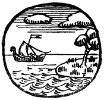

HET KINDEKEN JEZUS
IN VLAANDEREN
[Inhoud]

DE AANKONDIGING.
Murmelend bad Maria in de late Zondagstilte:
„Hij kusse mij met den kusse zijns mondts; want uw borsten zijn beter dan wijn. Welriekende naar de alderbeste zalven; uitgestorte oly is uw naam, daarom hebben de jonge dochterkens u bemint.…
„Ik ben een bloeme des veldts en eene lelie der dalen …
„Gelijk een appelboom onder de boomen der boschagen alzoo is mijn lief onder de zonen, onder zijne schaduw heb ik gezeten en zijn vrucht is zoet in mijn kele.
„Hij heeft mij geleidt in den wijnkelder, hij heeft de liefde in mij geschikt, onderzet mij met bloemen, omzet mij met appelen want ik quelle van liefde!.…”
Maria zweeg en even opziende uit het zwaar getijdenboek, zag zij reeds de smalle sikkel [2]van de maan in den perelmoeren hemel hangen.
De avond kwam, en in het proper tuintje stonden aangename geuren van boonen van genuchten, en ievers was een vogel die voor zijn eigen floot.
Zij duwde haren neus in de gele bloemen die zij in een blauw delftsch vaasje op de tafel had gezet, en zij zuchtte.
Het was van een week en zoet gevoel dat haar deed stil zijn en de oogen luiken. Het was het vrouwelijk verlangen om kinderen te hebben, zoete, zachte kinderen met blond haar en blozende gezichten; en die zij in hare kinderlijke verbeelding niet zag grooter worden, en haar zouden gegeven zijn lijk ’s avonds de dauw op de beemden zijgt.
Want Maria was zeer rein en zuiver van gepeinzen.
Zij verlangde zoo smachtend naar ’t bijzijn van een eigen kind! Ach, hoe dikwijls heeft zij niet gestaan met tranen in de oogen, te droomen naar de blijde kinderen die bij avonddaling, zingend uit de velden kwamen!
En nu in dezen Maartschen Zondagavond liep er haar hart van over en voelde zij daardoor een groote eenzaamheid.
Want zij was nog maar een maagdeken van achttien jaar.
Zij woonde in het witte huisje, met geel en zwart geruite vloeren, alleen sedert hare goede moeder Anna in de geur van heiligheid gestorven was.
Daar aan den witten muur hong moeders [3]beeltenis, geschilderd door den monnik Lucas, een man die heilige boeken verluchtte en ’t leven der aartsvaders en eremieten kunstig op ’t glas wist neer te malen en te bakken.
De schemering die om de eenvoudige dingen waarde, zooals er daar waren koperen kandelaars en gebloemde tellooren en zilveren glazen vazen met wassen bloemen in, liet nog alleen zien het bleeke hoofd der eerbiedwaardige moeder Anna.
Met die profetelijk bijeengehouden lippen, de perelzwarte oogen en het haar zorgelijk over de ooren gekamd, zoo leefde ze steeds helder voort in de verbeelding van haar eenig kind. Zoo zag Maria haar nog de boterhammen snijden, de avondgebeden zeggen en ’s Zondags uit de beste kamer komen, gereed om naar de kerk te gaan; hare zwarte kleederen ruischten dan, een kerkboek stak onder den arm en een witte trekmuts verhelderde haar hoofd.
De moeder bracht haar kind op in de vreeze Gods, en toen ze kalm en gelaten haar ongerepte ziel, door Onzen Lieven Heer liet afplukken lijk een bloem, kwam er een lach op hare lippen en begon haar lichaam naar kostelijk fruit te rieken.
Maria, die toen nog maar zestien jaren was, en zag hoe hare moeder kalm sterven kon, hield een grooten troost over, en met de goede herinnering harer, leefde zij het eenvoudige, witte leven voort. [4]
De dag kwam en de nacht, het wierd winter en weer zomer en Maria at zuinig den schaarschen kruimel brood dien zij verdiende over het kantkussen gebogen. Dit had ze nog geleerd toen zij met haar ouders op de heuvelen van Zuid-Vlaanderen woonde—en haar genot was leven in den Heer en bidden in het boek door Lucas rijkelijk met kleurige printen en guldene versiersels opgeluisterd.
Maar nu in dezen Zondagavond was zij stil van weemoed en vol van moederlijk verlangen.
Toen kwamen er trage stappen aan. ’t Was de korte, dikke parochie-paap, die al wandelend in zijn brevier aan ’t lezen was.
Hij wandelde nevens de haag, zag Maria aan het open venster zitten en riep haar welgezind een goeden avond toe, en dan kwam hij door het tuinpoortje over den blonden wegel naar haar.
Hij bleef buiten aan het venster staan, lachte haar eens vaderlijk toe, en toen Maria, die recht gestaan was, hem zijnen zegen vroeg, gaf hij hem haar met lui gebaar, en zei daarna, dat het een schoone avond was, maar dat er morgen wel zou kunnen regen komen.
Bedeesd en vol van eerbied voor den dienaar Gods gaf zij karig bescheid en liet de avondstilte heerschen.
Het hoofd van dezen paap was groot, rood en vetblinkend tegen de avondlucht.
„Ja, ja, het is goe weer,” zei hij nogmaals. Want hoe hij ook vol iever was voor ’t zielenheil zijner schapen, toch kon hij niet den geest van God in [5]zijne woorden leggen. Hij bezag Maria, die niets op haar gemak in den boek aan ’t blaren ging. Hij zag maar al te duidelijk hoe dit meisje vrouw aan ’t worden was, en hoe zij haar borsten wegdrukte in het spannende, zwaarplooiend blauwe kleed. En vol bekommernisse om haar zielezuiverheid zocht hij naar woorden om haar zijn onrust dietsch te maken. Want hij wist maar al te wel hoe gevaarlijk de duivel zoekt en vindt, bijzonder in den maagdekenstijd. En hij zei: „Ge zoudt nonneken moeten worden.”
„Ja?” vroeg Maria verschietend.
„Ja,” zei de paap.
Weer kwam de stilte tusschen hen, de avond groeide en een ster kwam hen bezien. Eindelijk zei de man dat hij naar ’t lof moest gaan, wenschte haar een goeden nacht en zette zijn lezende wandeling langs een smalle wegel door de velden voort, in de richting van een spits kerktorentje.
Maria was daarna zeer aangedaan. Nonneken worden!
Medeen zag zij het klooster der witte nonnekens, waar het proper en helder was en waar de zoete fijne geur van wierook in de lange gangen hing.
Het was haar steeds een aangename stond als zij bij de zusterkens haar kant kwam leveren. Zij konden toch zoo gemakkelijk lachen, waren steeds opgeruimd, pratend en vlug, en zoolang het seizoen duurde vulden zij het biezen korfken van Maria met de schoonste, sappigste appelen. ’t Moest er plezierig zijn. Maar dan zou ze nooit [6]meer door de verre velden kunnen wandelen, geen kruid en waterlelies meer kunnen plukken langs het water van de Nethe, de leeuwerikken niet meer naar den hemel zien klimmen en niet meer de goedheid van den avond voelen nijgen op haar hart! De velden met hun sneeuw en hun zon, met hun bloemen en patattenvuren, och ’t was er toch heerlijk! en zoo aangenaam om te bidden!
En Maria zag over het land en voelde tranen in de oogen komen.
De hemel was blauwer geworden, maar een ijl groen licht bleef hangen, daar waar de zon was heengegaan; daartegen stonden de bottende boomen fluweelig zwart, en er was een verre stilte over het land. Een vledermuisken fladderde voorbij de mane-sikkel, en door het berkenboomen-dreefken stuurde een manke herder zijn schapen naar den stal.
Toen bromde de klok voor ’t avondlof en in de verte wierd er een lichtje aangestoken.
Maria ging met een zucht van ’t venster weg. Zij wierp haren blauwen katoenen kapmantel om, nam haar kerkboek van de schouw en ging naar ’t lof.
Zij stapte door het dreefken, hare kleederen ruischten in de stilte en heur hart woog zwaar van weemoed.
En toen gebeurde het.
Er waaide een zoete muziek door de fijne takken der boomen. Maria zag bevreesd omhoog en toen ze weer voor zich keek, stond er daar, geweven [7]uit avonddamp en maneschijn, een overschoone engel met kers-roode kazuivel om, en leliënbloemen in zijn hand.
Hij was doorlicht van een hemelsch vuur en blonk als een kerkraam in de zon. Met zijn ruischende pauwsteertenvlerken hief hij zich boven den grond, en een bedwelmende reuk van violen en kruidnagelen walmde van hem uit.
Het was alsof Maria ineens dat zag, wat ze steeds had verlangd, maar nooit had kunnen bepalen, en zonder vrees, maar overloopend van eerbied en ootmoedigheid, dierf zij den engel niet bezien en knielde neer in de madeliefkes van den weg.
En met een wonderzoet geluid, nooit van een mensch gehoord, lijk een orgel, zong het uit den schoonen engel zijn mond, dat zij begroet was en den Heer bezat, en zij gebenedijd was onder alle vrouwen, alsmede de heilige vrucht haars lichaams.
Maria dierf niet vragen hoe dit gebeuren zou, maar de engel zong: „De Heilige Geest zal over U nederdalen en de kracht des Allerhoogsten zal U overlommeren.”
Er kwam toen een stilte waarin Maria sprak vol overgave en bevend van verheuging: „Ziehier het dienstmaagdeken des Heeren, mij geschiedde naar uw woord!” en als Maria weder opzag om den engel met haar oogen te bedanken, dreef het muziek uit de boomen, was het weer stil en avondeenzaamheid, en trage nevelen bedekten de velden.…
Als Maria weder binnenkwam, vergat zij de [8]lamp aan te steken, en weenend viel zij op tafel. Zij weende van overgroot geluk en van wondere begenadiging, dat de tranen op de gele bloemen leekten.
Buiten stond de lucht vol sterren. [9]
[Inhoud]
DE BEZOEKING.
Een bloeiende lentedag had de wereld omhangen met verheuging.
En Maria stapte langs de Nethedijk, dragende in een toegeknoopten handdoek, wat kleederen, een paar boterhammen en een sneedje gebakken spek. Want zij had de vrucht haars lichaams in haar voelen opspringen, en dit blijde nieuws wilde zij gaan melden aan hare nicht Elizabeth, alsook aan haren bruidegom Jozef, den timmerman.
Dezen Jozef aan wien zij was verloofd van in haar jonkheid (een oud gebruik in die dagen), niet opdat hij haar als gewone man zou dienen, maar als een die over haar zou waken, en in tijd van nood een toevlucht zoude zijn, dezen Jozef had zij maar éens gezien, toen haar vader in laten ouderdom stierf en Jozef er de doodkist voor maakte.
Zij stelde hem zich steeds voor; een klein, krachtig oud man met korenkleurigen stoppelbaard, [10]gezondroos van wezen als een kind, en de goede, vrome, doch heldere oogen, diep onder het zware voorhoofd. Hij was nog een verre afstammeling van een koning die zich David noemde, en groot en vroom in de geschiedenis der volkeren is geweest.
Vernuftige schrijvers hielden dezen machtigen heerscher over de rijke landen van het oosten voor een dichter van ongemeene zeldzaamheid, en menige zijner souterliedekens kende Maria van buiten.
Och! wat zouden hare nicht en deze Jozef blijde zijn, als zij vernamen de groote zegening die Maria was gegeven!
En Maria, voortstappende, hommelde een lieken in haar mond. Want nu zij God in zich droeg, was Maria uitermate geestelijk verheugd, zoo bedwelmd en weggesmolten in zalige zielsgewaarwordingen, dat ze voor niets anders nog gedachten had.
Eindelijk ging zij moeder zijn! Moeder zijn, wat zij toch reeds zoo lang had betracht en verwacht.
En van wien? Van Hem die Hemel en aarde geschapen heeft, die de sterren doet muziek maken in de duisternissen, die zich kleedt met het licht, en de wereld op zijn asem draagt! die zingt in de harten der menschen en lacht in de droppelen dauw! Ja, zij was de uitverkorene van wie gezegd wierd in de oudheid: „Eene maagd zal zwanger worden en een zoon baren, en men [11]zal zijn naam heeten: Emmanuel, dat is: God met ons.”
En als opgeheven van zoetigheid en overweldigd van geluk, knielde ze voor een wit veldkapelleken neer en zong met luider stemme: „Mijn ziel verheft den Heer!”
Opgewekt huppelde ze voort. Nog nooit had ze de velden, de aarde en de lucht zoo heerlijk en zoo schoon gezien, nooit was er zooveel licht en waren er zooveel blijde koleuren.
Zij zag de wereld door haar geluk en alles juichte in haar.
Onder een warmblauwen hemel, met muziekwolken doorvlokt, stonden al de hoven en boogaards in witten en rozen bloei. De groene beemden lagen vol plassen goud van de boterbloemen, duiven toerden rond de roode nokken der daken, de merel zong, de nachtegaal zong en al de vogelen zongen hun blijde talen.
Een zilveren windeken spoelde door de lucht, en rolde en wimpelde de zoetste reuken uiteen, en de molens sloegen kruisen van blijdschap naar de zon, die speelde met de schaduwwerpende wolken.
En zie! wat was er toch voor wonders te zien aan haar gering wezentje!
Zij, ongekend en eenzaam in haar woonste, zag hoe bij haar aankomst de boeren op het veld hun ploeg stil hielden en haar een goeden dag toeknikten, en hoe de paarden hunne koppen naar haar omkeerden. Een zeilschip dreef voorbij, en de schipper en zijn vrouw bogen eerbiedig het hoofd. En zie! een manke herder in oud soldatenpak, [12]knielde neer in ’t gras tusschen zijn schapen en ontblootte zijn kalen schedel, murmelend: „Wees gegroet, Maria!”
Waarom vlogen de zwaluwen rond haar hoofd en begosten de vogelen met luider kelen te zingen als zij voorbij de boomen kwam? Waarom sprongen de zilveren visschen telkens boven het water? En stegen t’allenkanten zooveel leeuwerikken op?
’t Was al om den Heer dien zij in zich droeg, ’t was om haar te groeten en te loven, haar, de uitverkorene boven die duizenden, haar, de begenadigde! En zij hief hare olijfgroene oogen naar den hemel, en weer viel het juichend van hare roode lippen: „mijn ziel, mijn ziel verheft den Heer!.…”
Zoo kwam Maria op de Grobbendonksche heuvelen en de sparrebosschen, waar er konijntjes naar haar kwamen zien.
En toen zij de ruischende bosschen vol opbeurende terpentijnreuk was doorgestapt, zag zij ginder het dorp liggen, met zijn hupsch kerktorentje, waaruit het luidde voor den noen.
Een blonde wegeling huppelde van de heuvelen naar het witgekaleide huisje van den koster Zachaar, die met hare nicht Elizabeth gehuwd was.
Maria zag hare nicht in den bloeienden boogaard waschgoed te drogen hangen; en om zich te verhaasten bij Elizabeth te zijn, ging Maria langs achter, waar een scheef lattenpoortje in de doornenhaag was gemaakt.
Het was alsof nicht Elizabeth haar gewaar wierd, want zij liet het waschgoed vallen en zag [13]met de hand boven de oogen naar Maria toe.
Een blijde kreet ontsnapte haar keel en zij liep haar jonger nichtje tegemoet.
„Elizabeth! nicht Elizabeth!” riep Maria vol verheuging.
Elizabeth wierd bij dien roep als met licht vervuld, zij ijlde naar Maria toe en viel weenend om haar hals.
„O Maria zoete nicht!” riep ze in vervoering.
„Boven alle vrouwen zijt gij gezegend en alsook de vrucht van uwen schoot!” Zij juichte dat de moeder van God zelf tot haar kwam, en vertelde verder, dat zoo haast zij Maria gehoord had, het kind in haren schoot van vreugde opgesprongen was. En hier bloosde zij van voldoening. „Ja eindelijk heeft God onze gebeden verhoord.”
Nieuwe tranen vulden haar oogen. „O zoete nicht, zalig zijt gij, want alles zal gebeuren zooals de engel tot u gesproken heeft!”
Toen liep Maria haar hart over, de woorden die zij dezen morgen niet had kunnen vinden om haar geluk te uiten, borrelden nu, als een lang-gesloten bron, uit haren mond. „Mijn ziel verheft den Heer! mijn geest heeft gejuicht in God die mijn redder is, hij heeft neergezien op zijn klein dienstmaagdeken, en van nu af aan zullen alle geslachten mij zalig noemen …”
Terwijl Maria verder haren schoonen lofzang zong, was Zachaar bijgekomen en stond verwonderd naar de vrouwen te zien, en omdat hij, arme man, voelde dat er groote dingen om hem gebeurden, en hij niet spreken kon door een verlamming [14]op de tong, barstte hij ook in weenen uit en kuste knielend Maria’s kleine handjes.
Terwijl zij voor het huis gingen, vertelde Elizabeth, hoe Zachaar in de kerk ineens stom en doof geworden was, omdat hij de woorden van een engel, die hem de eindelijke geboorte van een kind kwam melden, niet gelooven kon; en dit moest zoo nog duren tot de bevalling.
Maria zag hem medelijdend aan, maar hij schudde zijn mager, met witte haren omkranst hoofd, als wilde hij zeggen: „’t Is niets, ’t niets, ik heb het verdiend en ’t zal wel overgaan.”
En hij liep hen voor om in den kelder een potteken bier te tappen.
Elizabeth bracht Maria op de kelderkamer, het was de beste kamer, die slechts gebruikt werd als Zachaar den parochiepaap met een fleschken wijn trakteerde.
Hier zou Maria slapen.
Het was er ruim en koel, en op de hooge eiken glazen kast vol porcelein, staken winterperen hun steertje naar omhoog. Maria zag verblijdend rond, want de heilige printen aan de muren, de geraniums voor ’t venster, de ronde mahoniehouten tafel op de ronde strooien mat, de wassen bloemen onder glazen stolpen op de schouw, en het groote bed met breede, witten gordijnen er over, ’t was allemaal in den geest harer familie en de traditie van hun geslacht, en dat werkte vertrouwend op Maria, zoodat zij zich hier aanstonds thuis gevoelde.
Zij lei haar mantel af, verfrischte zich en deed malsche sloefkens aan haar voeten. [15]
In de keuken was vóór Maria’s komst de tafel reeds gezet voor twee menschen, maar Elizabeth nam gauw de aarden tellooren weg, en haalde er porceleinen met bloemen en vogelen beschilderd, zij zocht de zilveren lepels en vorken, bij hun vijf-en-twintigjarig huwelijk hun geschenk gedaan, en als al het eetgerief schitterend en feestelijk op een wit en rood gewafeld anmelaken stond, schepte zij met veel beslag de kervelsoep in. Terwijl na een kort gebedeken Maria en Zachaar reeds aten, ging Elizabeth voort met eten te bereiden, went zij had maar een poover noenmaal gereed gemaakt; soep, patatten met gebruinden ajuin, daar het in de vasten was, en Maria moest feestelijk onthaald worden!
Onder het mes vielen dikke schellen heerlijke geurige hesp, die zij bakte met geklutste eieren; gedroogde pruimen lagen weldra in hun sap te pruttelen, en een versch gegoten kaneelpudding stond in den koelen kelder te verharden.
Onder het eten vertelden ze van de reis, van het weer, van nichten en kozijnen, en Zachaar schudde steeds met zijn glimlachend hoofd als teeken van goedkeuring …
Als de tafel afgeruimd was, moest de man naar de kerk, om alles in gereedheid te brengen voor het hoogfeest van Paschen.
Hij klopte zijn pijpken uit, en met een arm vol wassen keersen verliet hij, steeds vriendelijk knikkend, de twee vrouwen.
Het wierd toen stil in de witte keuken.
De store was neergelaten, en de deur stond [16]open op den hof en de heuvelen, en de zon die vierkantte op den rooden tichelvloer, lei een stralenden weerslag in de koperen marmittekens.
Terwijl er buiten een kieken kakelde, de horlogiekast eentonig tiktakte, en de moor op de stoof een liedje piepte, zat Elizabeth, een kous afbreiend, te luisteren naar Maria, die, in den leunstoel gezeten, met de witte kat op haren schoot, vertelde hoe het groote wonder haar was overkomen.
Elizabeth luisterde verwonderd en hield op met breien. Zij was reeds oud, deze vrouw, maar in haar glimmend aangezicht waren geen rimpels en nog een frissche meiskesblos leefde op de juksbeenderen. Haar mond alleen was wat weggetrokken, wat slechts een teeken was van haar blijden toestand.
Zoo geleek ze veel op Anna, Maria’s moeder, doch de levende oogen, de smalle lippen en de spitse neus gaven haar meer een burgerlijk voorkomen, minder ingetogen. Ze was de deftige huisvrouw die een wijselijk beleid en klaar beraad in huiselijke zaken en menschen had.
Naderhand, met het voorhoofd gefronst, aanhoorde ze Maria’s zangerige woorden, en na een stilte zei ze zwaarwichtig met de wijsvinger op den duim: „Maria, ge moet nu met Jozef trouwen.”
Als eenig antwoord begon Maria te weenen.
Trouwen! Ach, daar had ze nog nooit aan gepeinsd, daar had ze met haar zuivere gedachten nooit aan dùrven peinzen. [17]
Doch als Elizabeth gewaar wierd waarom Maria daar verdriet in vond, dan wist ze haar gerust te stellen, dat ze niet vreezen moest van Jozef om hem als man te nemen, want dat hij was een heilig man, en die haar reinheid en haar maagdom zou eerbiedigen, dat hij steeds verlangde om wettig in haar bijzijn te mogen wonen, maar haar niet bezocht om geen opspraak te verwekken, en ten leste dat Maria huwen moest ter wille van haar en Jozefs eerbaarheid voor ’t aanschijn van de menschen.
Als Elizabeth dit betoog door vele herhalende woorden Maria had te verstaan gegeven, stond deze op, liet een groote zucht van blijdschap en verlichting, veegde de traantjes uit haar oogen en viel nicht Elizabeth om den hals.
De wolk, die een schaduw over haar hagelwit zielken was komen werpen, was gevlucht, en weer juichte haar hert in haar lichaam.
„Had mijn heilig moederken dit eens mogen beleven!” snikte Maria op Elisabeth’s schouders.
„Uwe moeder ziet het van uit den Hemel, zoete nicht,” troostte Elizabeth, en zij klopte moederlijk zoete kloppekes op Maria’s rug.
„En,” voegde ze er nadien bij, „gij zult Jozef gelukkig maken; te naaste maand komt hij weer naar hier om hout te koopen, hij doet dit ongeveer alle maanden, dan zult gij hem zien en gij zult zijn hart vol verheuging zetten! Kom, zoete nicht, troost U, het huwelijk is een zegen.”
„Ja, ja,” zei Maria, glimlachend achter heur tranen, „ik geloof het.” [18]
En zij begosten de koffie gereed te maken. Weldra kriepte en sjirpte de koffiemolen, en terwijl Maria de gemaalde boontjes met kokend water begoot, sneed nicht Elizabeth de lange tarweboterhammen.
De aangename koffiereuk vermengde zich in het deurgat met den reuk van den bloeienden boomgaard. De zon scheen over de heuvelen, en Maria dacht dat haar leven nu voortaan niets anders meer zou zijn dan blijheid, zielsgenot en zonneschijn.
Ach arme! [19]
[Inhoud]
DE VEROPENBARING AAN JOZEF.
Op het bol van een reeds lang gevelden beuk, met de volle zon op zijn kalen schedel en afgegaan-rood slaaplijf, zat Jozef te peinzen, altijd maar te peinzen aan hetzelfde ding, hoe het kwam dat Maria zwanger was, en wat hij nu als bruidegom moest doen; zijn handen speelden zenuwachtig met een korenaar.
Rondom over het wijde, rijpe koren kookte het licht en in de nanoenstilte gonsde er ergens een zeisen.…
Traagzaam, met den zwaren tikkenhaan en den spitsen neus juist boven het gele koren, kwam de lange magere pastoor ginder aangewandeld.
Jozef zag hem, en wilde henengaan om den pastoor te mijden. Hij vreesde iets; maar hij vermande zich, bleef zitten, en trok een nieuwe korenaar tot zich.
Zijn hart klopte van angstige verwachting.
Daar was de pastoor. Hij deed alsof hij verschoot, [20]schoof zijn bril wat verder op zijn neus, en pimpelde met de kleine, goede grijze oogskes, en liet in een vriendelijken lach een mond van zwart berookte tanden zien.
„Dag Jozef, beste vriend!”
„Dag menheer Pastoor,” groette Jozef onderdanig.
„Zit ge weer te dubben vriendje. Kom zeg mij eens rechtuit wat voor een zwaar pak gij op uw geweten draagt?” Daarmee veranderde het gezicht van den pastoor; hij trok de wenkbrauwen zonder haar in zijn voorhoofd, en zag daarbij Jozef uitvorschend aan.
Maar zonder antwoord af te wachten van den bedeesden man, klopte hij hem op den schouder en zei met groot gewicht: „Jozef, jongen, ik weet alles!” en daarmee zette hij zich nevens hem op den neergevelden beuk.
Jozef was bijna rood geworden lijk vleesch, draaide met zijn oogen verlegen overentweer, en zijn onderste lip en zijn handen begosten te beven.
„Ge weet,” zei de pastoor met plechtigheid, „dat er veel over u gesproken wordt. Nu, zulk geval kon niet verborgen blijven, dat loopt lijk een vuurken rond, en ieder weet er ’t zijne over te zeggen. De menschen spreken er effenaf schande van, maar gij weet zoo goed als ik, dat ze van een pink een arm kunnen maken; en daarom zei ik bij me zelven, daar vraag ik Jozef zelf eens naar.… En nu heb ik u vast jongen, en ik laat u niet meer los! Nu gaat gij, als goede vriend, mij eens zonder latijn en zonder omwegen uiteendoen hoe de zaak gestaan is en gelegen. Want [21]dat een rechtveerdig man leek gij, zijn zwangere bruid zoo maar om de schoonigheid zou laten loopen, dat kan ik niet slikken. Ik luister.”
In afwachting nam de pastoor kalm en zeker van zijn stuk, zijn zilveren snuifdoos, waaruit hij op zijn duim een greepken nam, dat hij met gulzig gesnuffel in zijn neus verdwijnen deed. Jozef begon te zweeten, slikte zijn speeksel in, en zei toen aarzelend: „Ja mijnheer Pastoor, ’t is waar … maar …” Jozef kon niet voort en wist niet hoe zich uit te drukken. In de stilte die er tusschen hen was, vloog er een grijs vogeltje op een korenaar, en op en nederwiegend bleef het hen met schuinsch koppeken bestaren.
„Maar?” vroeg de pastoor als iemand met veel geduld.
„Luistert,” sprak toen Jozef kort, „ik heb er geen schuld aan!” De pastoor trok zijne brauwen naar omlaag, en al sprekend knikte hij langen tijd met zijn hoofd, lijk er zekere aarden beeldekens doen, waar de kinderen mede spelen.
„Dus zou Maria, die ik steeds voor een onschuldig lammeken heb aanzien, en waarvan ik met mijn eigen ooren heb hooren profeteeren door een heilig man, toen men ze opdroeg in den tempel—ik was daarbij—(en hier wees hij met zijn langen vinger naar zijn eigen) dat zij een lelie was der dalen, nu zou zelfs Maria …”
„Neen! neen!” haastte Jozef van te zeggen. „Maria is zuiver lijk de sneeuw! en witter als de zon! Daar durf ik op zweren op mijn zielezaligheid!” [22]
„Maar ge weet toch dat ze zwanger is, en dat er een kindeken te verwachten valt?” vroeg de pastoor koel.
„Ja,” zuchtte Jozef, „met eigen oogen heb ik dat gezien,” en mismoedig viel zijn hoofd op zijne borst.
Een windeke liep door de zon, zette zich wat te spelen in de korenaren, toen sprong het er weer uit, aaide eens in de dunne, weinige haren van den pastoor en liep verloren in de lucht.
„En hebt ge toen met Maria over dit geval gesproken?”
Jozef richtte weer het hoofd omhoog, zijne zwarte perelen-oogen glommen en als begeesterd sprak hij: „Dat kon ik niet menheer Pastoor, dat kon ik niet van groot geluk. Als ik daar kwam en Maria pas ontwaarde, zoo viel er over mij een fijne zoetigheid, ’t was lijk zoete wijn in den mond, en rozen na den regen om mijn hoofd.
Het scheen mij heel natuurlijk dat zij zwanger was, of beter nog gezegd, ik dacht er zelfs niet aan, alhoewel ik het pirmentelijk voor mijn oogen zag.
Ik zag haar maar alleen, en ’k voelde iets uit haar over mij gaan dat schooner was en beter dan in elk ander mensch.
Ja, iets beter dan zij zelve, ’k geloof dat ik haar zielken zag; in elk geval ’t gebeurde daar iets wonderlijks. Menheer Pastoor, ge moet het niet gelooven als ge wilt, maar ge weet niet hoe zalig het is haar te bezien, het is alsof men in den hemel komt.” [23]
En droomend met een blijden glimlach in den baard, staarde Jozef in de gele korenverte.
De Pastoor zat daar als uit de wolken gevallen, en wist niet wat te denken; hij zat Jozef te bezien met verbazing in de oogen. O, kon hij ook zoo maar eens in de kerk tot de menschen spreken, lijk Jozef daar zoo heerlijk nu gesproken had, hij ware al lang ievers Pastoor geweest in eene groote stad. „Die heeft nog iet van zijn voorouder David op de tong,” peinsde hij.
Maar ’n brommende hommel deed hem het hoofd achteruit trekken en joeg die naijverige gedachten weg.
„En dan heeft Maria u gezegd,” zei de pastoor inleidend.
„Ze zag er ook zoo blij en smiltend van genoegen uit dat ze zeker vergeten is er over te spreken!”
De pastoor liet een peerdezucht en krabde met een vinger in zijn haar.
„En wat gaat ge nu doen?”
Jozef wrong zijn handen en met een van tranen doorweekte stem en haperend van vertwijfeling sprak hij: „Zie, menheer Pastoor, ik weet het niet. En dat is juist mijn groot verdriet. Ik verga lijk sneeuw in de zon. Wat moet ik doen? Wat zoudt gij doen als g’in mijn plaas waart? Ik lig er heele dagen op te peinzen en te duizeneeren, en kan maar niet t’accoord geraken. Ik ben er van buiten en van binnen van beroerd, het eten smaakt mij niet en ’s nachts kan ik geen oog toe doen. [24]
Ge weet niet wat ik afzie! ’t Is een tempteering als van duizend duivels! Ga het maar eens na wat ik moet doen! Volgens de wetten zou ik Maria moeten huwen, maar volgens mijn geweten niet en zou ik haar zelfs voor ’t gerecht moeten brengen daar zij mijn naam in schande brengt, maar zooiets wil ik niet doen! En toch, en toch, en dat zweer ik op mijn ziel en op mijn plaatsken in den Hemel, blijf ik erbij dat Maria zuiver is en zonder zonde. Maar wat ik nu moet doen weet ik niet. Ik zelf ben er niet slim genoeg voor! Och! menheer Pastoor, als ge wist wat ik doe om te weten wat ik moet doen, uw haren zouden er van omhoog komen!
’k Lig gansche dagen en nachten te bidden en te lezen voor de heiligenbeelden, ’k heb al de kerken en kapellen waar er maar wat heiligdom bestaat op mijn bloote voeten beeweg afgedaan; ’k doe boete, verstervingen die te zwaar zijn voor éen mensch, en toch doe ik ze gaarne, en ’t weinige geld dat ik door hard werken heb bijeengekregen, heb ik aan keerzen verbrand en in de offerblokken gestoken. En toch, menheer Pastoor, toch komt er niets van den hemel noch van de aarde dat een handje uitsteekt om er in mijn hart wat licht te brengen! Och ik ben zoo ongelukkig, ik ben zoo ongelukkig!”
De pastoor zag toen uit Jozefs grijzen baard tranen op de bruine handen lekken, en hij wierd verteederd als een vrouw, nam Jozefs bevende hand heel vertrouwelijk en zei goedig: „Weet ge wat ge doet Jozef, ga gij morgen naar Maria, [25]vriend, en spreek er met haar eens over, want al dat peinzen en dubben is al boter aan de galg.”
Maar Jozef schudde vastberaden van „neen”.
„Daar ga ik niet heen,” zei hij beslist, „dat zou Maria kwetsen zijn, en ’k weet z’is zuiverder dan het zuiverste wat er ooit geweest is of ooit zal zijn. Nogeens, er gebeurt hier iets wonders, maar ’k weet niet wat.”
De pastoor trok ongeduldig en medelijdend zijne smalle schouders op. „Luister eens beste vriend,” zei hij, „’k ben wel niet diep geleerd in de heilige boeken en de geschriften van het testament; mijne ouders waren maar kleine boerenmenschen en die konden zooveel kosten niet doen; ’k ben maar een pastoor van een gering dorpken en wil mijn vernuft en kennis over Goddelijke zaken niet meten met die beroemde klerken der stad Leuven. Neen, maar ik neem de dingen lijk zij zijn, en mijn klein verstand zegt mij klaar als pompwater, dat gij in dees geval uw eigen moet in handen pakken; of wel trouwen ofwel niet trouwen, maar dan ook iedereen laten weten waarom niet. Ge moogt u niet nutteloos op de tong laten rijden.
Wel ik geef u een gouden raad, ga gij morgen in de vroegte naar Maria en vraag uitleg … ja uitleg en dan weet ge aan wat u te houden. Schudt niet neen, Jozef, ik zeg het voor uw goed, ge wordt mager lijk een rietje en ziet er uit lijk d’Heilig’ aarde.
Ge gaat er van kapot! Ewel doe het jongen, luister als ’t u belieft naar mij, en ge zult er mij om bedanken. Zie eens hoe ge nu met dubben [26]en denken uwen tijd zit te vermorsen dien ge anders zoo schoon aan uw werk kon gebruiken … maar à propos, het valt mij in, hoe staat het met ’t beeld van profeet Jonas? Ik hoor u daar zoo niets meer over zeggen. Is ’t bijna af?”
Jozef had zich daar niet aan verwacht; hij had in een mollenpijp willen kruipen, bezag smeekend den pastoor en zei bangerig: „Ik heb … er nog niets aan gedaan, ’k heb den moed niet om een hamer vast te nemen.”
„Jozef, Jozef,” vermaande de pastoor, terwijl hij opstond en van verbauwereering zijn lange armen vallen liet. „En ’t moet te naaste week terug aan het gestoelte in de kerk staan!” Hij was rood geworden van kwaadheid, maar als hij Jozef daar zoo droevig zitten zag, kwam er medelijden en ontroering in zijn stem. „Ziet ge wel, beste vriend, dat ge uw eigen verneukt en den dieperik te gemoet gaat! Als het zoo voort gaat ligt ge te naaste maand op het kerkhof (de wijzende hand van den pastoor beefde) ginder op het kerkhof! En ik wil dat niet, Jozef! Dezen zandwegel heeft God mij laten opgaan om u te redden, ewel ik zal er gebruik van maken, en als gij morgen naar Maria niet gaat, dan ga ik in eigen persoon! Van thuis blijven is geen kwestie!” En de pastoor bleef het uitwerksel zijner woorden nazien, en tot zijn groote voldoening antwoordde de arme man: „Menheer Pastoor laat er mij toch nog eens op slapen?”
„Bravo Jozef, we zijn op goede wegen! En nu ga ik voort met vrede in mijn hert, alles zal nu wel goed komen! En nu zult ge weer aan ’t werk [27]kunnen gaan met een lieken op lippen! Want ’k zou niet geren hebben dat met mijn jubilé van vijfentwintig jaar pastoor dezer parochie, Jonas niet aan ’t gestoelte stond. En niet te duur, hè jongen, want de kerk is maar arm! Allo, couragie, en tot morgen als ’t God belieft!” En weg was de pastoor, eerst ging hij wat rapper, maar dan weer op een lijzen wandelstap; hij sloeg zijn boek open, en Jozef zag hem biddend voortwandelen, door het wilgenlaantje den langen, smallen heuvel op.
Het dorp zat op den heuvel …
Jozef voelde zich nog holler dan daarstraks, maar was toch blij dat hij den pastoor niets had beloofd. Zijn hoofd draaide van al dat klappen en overpeinzen; hij zou maar liever naar zijn huisken gaan, daar kwam geen pastoor of niemand hem storen, en zou er wat probeeren te slapen.
Hij wachtte om den pastoor niet in te halen, en zag swenst naar de roode en blauwe bloemen die in ’t gele koren fonkelden, naar een snellen, groenen kever, en teekende met een wisse een vogel in het zand. Als de pastoor nu reeds heel verre ging, zuchtte Jozef diep, stond op en slenterde het wilgenlaantje in. Het was een heerlijk weer met leeuwerikken in de blauwe lucht en maaiers in de beemden. Aan den horizont lagen witte wolken, als sneeuwbergen gevlijd. Maar hij zag het slechts met zijn oogen en voelde het genot er niet van aan zijn hert komen.
Hoe kon hij anders hier, van op de hoogte, het verre landschap met geluk beschouwen. [28]
’t Was een aangenaam gezicht, boven de weelde van koren, weiden en bruine velden, de mastbosschen te zien afdonkeren, met daarboven weer een zonnige, blonde streep van verre heideduinen, waarop een draaiend moleken. Na etenstijd kwam hij hier dikwijls in de zon zitten droomen. Hij zag er den uitkoom als het zaad opspringt in de aarde, en den witten winter als de jongens op het ijs schaverdijnden. En hoe opwekkend was het niet, ’s Zondags de duiven, die van de prijskampen terugkwamen in de verte snel te ontwaren.
Maar nu kon hij van het landschap niet genieten; zijn hart woog te zwaar van tranen en verdriet, en al die schoonheid bleven doode dingen voor hem.
Onwillekeurig zag hij zijwaarts, waar rond het bruine kerktorentje de dooden lagen met een zwart kruisken boven hunnen kop en een hofken van simpele bloemen boven hun lichaam. Zij lagen er vergeten en in diepe rust, en hunne zielen zaten misschien in het licht van den guldenen hemel.
Och! dat Jozef in zijn oude dagen zulk wreed verdriet en beproeving moest doorstaan! hij hadde willen slapen en nooit meer wakker worden, en vergaan in vergeten- en verlatenheid.
Maar hij dreef die sombere gedachten weg. Dat was de wanhoop die in zijn hert sloop, de zonde, en ’t kwam allemaal van den duivel.
Met een schietgebed verjoeg hij dit matte, donkere verlangen, en snuffelde naar den goeden geur van den vierurenkoffie die uit de leemen huttekens wandelde. Maar hij zou weeral niet kunnen eten. [29]
Met een zucht zag hij eens naar ’t koperen haantje van den toren en trad zijn huizeken binnen.
- - - - - - - - - - - - - - - - - - - - -
In de schemerige keuken zat Jozef te weenen met het hoofd op de tafel, en een brandend keersken, dat in een guldene vlek der ondergaande zon verbleekte, stond hem van op den hoek der schouw pimpeloogend te bezien. En anders was het stil alsof er niets en niemand was. Jozef dacht weer aan den pastoor en aan de dreigende woorden, dat hij zelf naar Maria zou gaan, en aan de vermaning om het beeld van den profeet Jonas.
Die pastoor toch! die hem tusschen de beenen kwam loopen en heel het geval met messen wilde ontwarren. En ’t was juist die ontwarring waar Jozef zulken schrik van had. En als een bedreiging spookte hem in de gedachten het einde van de naaste week, de dag waarop hij het beeld afgewerkt moest leveren. Hij zag eens met de rood-bekreten oogen zijn laag werkplaatsken in, en voelde medeen een rilling van werklust in hem opgaan, en een verlangen om te hameren, te beitelen en te kappen dat de stukken tot in de geburen vlogen.
Maar als hij er kwam stond hij weer met slappe armen nevens zijn lijf en zag met leede oogen naar het beeld van Jonas, dat daar stond in een donkeren hoek, tusschen latten en palen, krollen en bestoft gerief. Het was inderdaad de profeet Jonas, die met den wijsvinger tegen een kapotten neus, en de baard gedoken in de zware [30]plooien van zijn toga, met slaperige oogen staarde naar een spartelend walvischken aan zijn voet.
Hij moest gerepareerd worden aan de linkerhand en aan de knokige knieën, en boven het hoofd moest bijgevoegd een mandeke met fruit waarop er vogels zongen.
Want Jozef was ook kunstig aangelegd buiten het nederig schrijnwerkersbedrijf, en zeer ervaren in steek- en snijwerk; en hij deed het goedkoop, wat de parochiepaap het meest waardeerde.
En Jozef dacht aan ’t leven van dien kolossalen profeet, en in een opwelling van verdriet en geloof sprak hij tot het beeld: „O Jonas, ’k zou nu met Maria moeten trouwen daar zij is mijne bruid en zich in gezegenden toestand bevindt, en ’k doe ’t niet gaarne, daar het mijne schuld niet is. Wat moet ik nu doen? Och! gij die ook niet gehoorzaamd hebt toen God u zei van naar Ninieve te gaan, en er toch zijt naar toe gebracht in de maag van een walvisch, zeg eens, zal er bij mij ook een oplossing van hierboven komen?”

Maar het beeld antwoordde niet, en vernietigd sleepte Jozef terug zijn stappen naar de keuken, als er in hem plotseling openknalde een aangenaam gedacht.
„Doen lijk Jonas en er in stilte van ondertrekken!”
Het verraste hem zoo weldadig dat hij er een hooge roode kleur van kreeg en begon te lachen.
„Doen lijk Jonas en er in stilte van ondertrekken!” [31]
Dat was de oplossing! Waarom had hij daar niet eerder aan gedacht! Naar Holland trekken en de zaak laten draaien lijk ze draaide, alles zou dan wel eens met Gods hulp ten rechte komen. Alzoo schond hij niet Maria’s eer, en was tegenover haar rechtvaardig. Terwille van haar wilde hij gaarne den achterklap der menschen verdragen; van één ding had hij nu spijt, en dat was, dat hij aan den pastoor zijn onschuld had beleden; maar had hij haar tegelijkertijd ook niet verdedigd? En daarbij, de pastoor zou er niets van voortvertellen en de menschen in den waan laten.
Jozef bedankte al de engelen en heel den hemel om de klare ingeving, en ineens kwam er vlugheid en opgeruimdheid in hem, en begon hij zijn paksken te maken. Hij haalde van den zolder een zwarte houten kas met lederen draagband aan, zocht een hemd en een paar kousen, wat kleergoed en gerief, voedsel, als een half brood, een vierdeel boter, een achterhepsken, en zijne papieren en gebedenboeken. En als hij dit alles met moeite in de kas dichtgesloten had, wreef hij verheugd in de handen, en zou nu wachten tot het avonduur gekomen was, om in stilte, als de menschen sliepen, ongezien het dorp te verlaten.
Want vandaag nog wilde hij gaan, daar morgen reeds de pastoor tot Maria zou vertrekken. De uitslag van dit bezoek wilde hij volstrekt vermijden.
Hij wachtte naar den avond in zijn hofken.
Het zakte wat den heuvel af, en was omsloten met een palmenhaag, waar op elken hoek een haan, uit palmengroen gesneden, de wacht hield. [32]
Het hofken was lijk een gebroken regenboog vol wonderfijne geuren. Van op een bank zat Jozef verjeugdigd en verjongd de avondweelde te genieten …
Het gerucht was uit de velden; er brandde ievers een lamp, en eene blauwe grijsheid groeide uit de lucht en uit den grond.
Een ooievaar wiekte lui naar de oostelijke verte.
In de gebuurte blaatte een geitje een keer of twee, en dan was het weer stil.
Er waren nog geen sterren, maar ginder in de avondgrauwheid kwam de matte, roode maan als een groot verwonderd gelaat boven de donkere bosschen gerezen.
Maar het geluk overstelpte hem, het maakte hem zoet lui, en de oogen, die hij in dagen niet had kunnen sluiten, sloten zich zonder wil, en Jozef sliep.
En hij droomde.
Hij beklom een hoogen berg met een ronden top. Moeilijk stapte hij langs de onbegaande wegen, door nijdige dorens en ruwen steen. Maar hij ging en hij ging. Hij was met de morgenstond begonnen, voelde heel den dag de zon op zijn rug branden, en de zon was eerder den berg over dan hij.
Hij wilde ze inhalen, verhaastte zijne stappen, en eerst als de schemering begon, betrad hij den ronden top. Daar duizelde hij bijna achterover van het heerlijk vergezicht dat zijne oogen genoten.
’t Was een wijde, vruchtbare verte, diep onder en voor hem, en klaar als op glas geschilderd.
Tusschen velden en bosschen, zaten de boerenhuizen [33]verzaaid, en grijze en roode dorpen troppelden meerder huizen rond hun toren.
Bezijds stond een lichte witte stad, en nevens een rivierken, dat kronkelend het land dooraderde, rezen burchten en kasteelen. Molens draaiden en menschkens beploegden het land, plukten het fruit uit de boomen en reden met karren over de steenwegen.
En heel, heel ver, waar de perelmoeren lucht de aarde raakte, lag, in een kling van blonde duinen, een golf van de zee.
En Jozef vroeg zich af wat dit alles toch bedieden mocht.
Maar toen rees er aan den horizont een enorme gouden poort.
’t Was de zon die vergroeide tot gothieke torens en kanteelen, kunstig en fijn uitgebeiteld lijk de toren van Antwerpen.
In de nissen en beuken en bogen stonden al de menschen die eens heilig zouden worden in schoone gekleurde kleeren. In de open poort, waaruit kostelijk zilver straalde, groeide er een groote, sneeuwwitte roos, die hare blaren openlei en waarin troonde het zoete beeld van Maria.
Ze was in ’t blauw gekleed en nedrig als voorhenen.
Ongekende geuren vielen over het landschap, er was geruisch van vleugelen rond het gouden kasteel, en van daar binnen uit kwam er zoet geluid van duizend orgels en hoog, lenig gezang van: „Ave Maria, Ave Maria!”
De menschen op het land hielden hunnen ploeg [34]stil en zagen naar omhoog, deuren en vensters gingen open in dorpen en stad, en iedereen, groot en klein, kwam met bewonderend geroep naar buiten geloopen.
Regenbogen draaiden in de lucht, en een roodglanzend kruis overspande heel den hemel.
Jozef voelde dat er het grootste op de wereld gebeurde, en hij knielde neer in ’t gers van den berg, en luisterde naar de schoone stem van een gevleugeld licht. „Jozef, zoon van David, vrees niet Maria uwe vrouw tot u te nemen, want wat in haar is geboren is van den Heiligen Geest, zij zal baren een zoon dien gij zult Jezus noemen, want Hij zal zijn volk verlossen van hunne zonden.”
Jozefs hart sprong op van verheuging, en de andere woorden kon hij niet nagaan van loutere blijdschap, en heeft ze zich slechts nadien herinnerd.
Een davering schudde de wereld, en Jozef ontwaakte uit zijn diepen slaap.
Hei! zie! hij zat nog in zijn hofken, was nat van den dauw en aan de oosterkimme, door een wolkenscheur rees de zon terug over de wereld!
’t Was morgend en een nieuwe dag!
Jozef kreet het uit van geluk!
God zelf had hem nu alles veropenbaard. Maria was rein, Maria was heilig!
Hij meende op zijn knieën te vallen om vergiffenis te vragen nopens zijn voornemen, maar het beroerde hem zoo, dat hij in tranen uitbarstte en in zijn handen zat te weenen.
„O Maria!” riep hij nadien, „’k heb aan u nooit getwijfeld! en dat verblijdt mij uitermaten!” [35]
En nog den eigensten stond kletste hij wat water over zijn gezicht, deed zijn beste kleederen aan, en een schoonen foulard om den hals.
En met een boterham in de eene en een mispelaar in de andere hand begaf hij zich, geestelijk verheugd, door de frissche, besmoorde morgenvelden naar Maria!
Van al de dorpen luidden de klokken. [36]
[Inhoud]

HET HUWELIJK VAN MARIA EN JOZEF.
In de kleine romaansche kapel hong er een zoete schemering.
’t Kwam doordat er dien morgen een dikke, vuile mist in de straten stond, en doordat het reuzig gebouw der kathedraal, daar nog geen zes meters vandaan, te hoog zijn muren in den hemel stak.
Ternauwernood wierd men het groote altaar gewaar, waarvóór het godslampken brandde als een oog dat open en toe ging.
De ornamenten die sierden om de ruwe pilaren, en op de eiken deuren en het lenige orgeltje, doezelden schimmig weg in de mollegrauwte; en de koperen lampen, die van de ronde zoldering neerhongen, glommen flauw maar fijn lijk appelen in de lommerte van de boomen.
Maar als een lach bloeiden op uit de schemering, helder en vermakelijk van kleur, de heiligen die in elk der twee raamkens waren gebrand.
En, och het was er zoo stil. De stilte zat naar [37]haar eigen te luisteren. Maar toch, nu en dan, zei met kort gekraak de eene stoel wat tegen den andere.
En ginder, achter een pilaar, ineengedoken lijk een kreukel, zat een zwartgemanteld vrouwken, zoo stil en zonder gerucht als een onaanzienlijk deelken der kapel.
Zoo duurde dat een heelen tijd …
Maar buiten, achter de heiligen, dóór de smoorlucht naderde er blij geluid van rommelpot en viool.
En ineens vlogen de deuren open, en, wijl het buiten nog tokkelde en vedelde, kwam er een kleine stoet van mannen en vrouwen binnen.
Jozef en Maria waren vooraan; ’t was dan nicht Elisabeth met Zachaar; ’t waren verder peters en meters, nichten en kozijnen, nonkels en tanten; allen op hun paaschbest, fijn afgeborsteld, geschoren en gekamd, de vrouwen stijf van de zijde en blinkend van ’t goud.
Ieder zocht een stoel, en zij troepelden zich bijeen voor den grooten altaar.
Jozef had zijn grooten, bruinen vilthoed bij en een dikke mantelfrak aan; er was een kinderlijke vreugde op zijn gezicht, en zijn helle, zwerte oogen zagen schitterend en bewonderend naar Maria, die het bleeke hoofd gebogen hield, en een wijde blauwe kapmantel aanhad terwille van hare zichtbare zwangerschap.
Maria hief haar oogen op, hare groote olijfgroene oogen, en er lichtte een wondere klaarte uit en bovenmenschelijke vrede. Heel hare gelukkige ziel lag in haar oogen. Het was alsof ze luisterde naar [38]schoon muziek dat opsteeg uit haar eigen hart.
Ze leefde zichtbaar heelemaal naar binnen in haar goddelijk geluk. Ze wierd van innerlijke bedwelmende genade en versmachtende liefde verteerd. Ze was dronken van geestelijke geruchten en hemelsche begeestering; en dat beroerde en bereisde haar sedert die wondere aankondiging haar was overkomen.
Ze was mager geworden van geluk.
Zooals er menschen zijn die veel verdriet hebben en inwendig worden verknaagd, en als uit een droom ontwaken als men tot hen spreekt, zoo leefde Maria weggedompeld in haar innerlijke zoetigheden, en was soms als een vreemde onder de menschen.
En nu verwonderde zij zich ook dat zij in de kapel was, dat Jozef bij haar stond en de andere menschen, en dat zij huwen ging, en een fijne glimlach krulde even hare kersroode lippen, en een licht blosje wipte over haar gelaat.
Ze knikte eens allen vriendelijk toe, sloot dan de oogen en begon knielend op haar stoel te bidden.
Maar pas had ieder zich neergezet, en nog geen tijd gehad om zijn kerkboek te nemen, of de sacristijdeur wierd geniepig op een kier gezet en de dunne kosteresse kwam er eens door loeren, snoot eens haar neusje, en ging dan met open hand naar de lieden om een cent.
’t Was een mager pinnekennauw met feemachtig, wasbleek, scheef koppeken en smalle schoudertjes. Als zij van allemaal het stoelgeld had ontvangen, en gezien dat ze niemand overgeslagen had, ging [39]ze tot Jozef en zei van nog te wachten daar de pastoor een zieke was gaan bezoeken.
De twee muzikanten waren ook eens komen zien, maar als zij het venijnig kosteresken zagen naderen om een cent, slenterden ze buiten en gingen liever in een herberg een pint gersten drinken.
In afwachting zaten de menschen te bidden, naar schrale kerksieraden te zien, of de vergane opschriften der blauwe plaveien te ontcijferen waaronder menschen lagen begraven.
Eene deur wierd hevig toegeslagen dat heel de kapel er van galmde, en achter den altaar kwam er een misdienaar te voorschijn, met rooden rok, wit koorhemd en witte kousen aan. Hij hield een langen stok vast waaraan een brandend wieksken, waarmede hij de twee lange, rilde kaarsen aanstak, die in koperen kandelaars op den altaar stonden.
De kleine misdienaar moest zich rekken om er aan te kunnen, en dan schoof zijn roode rok omhoog, en waren twee heel scheeve beenen zichtbaar.
Iemand van de familieden schoot achter zijn zakdoek in een lach. Als er op elken wassen stengel een vlammeken bloemde, knielde de misdiener met de gauwte en spoedde zich haastig weg in de sacristij waarvan de deur terug openviel.
En nu liet het schrale licht der twee keersen vergulde krollen van den altaar zien, engelenkoppekens en eene onduidelijke schilderij.
De pastoor ging nu weldra komen, en de lieden staken hunne koppen bezijds om in de sacristij te kunnen zien. Maar in de lange witte gang zagen zij [40]niemand dan het kosteresken dat onder een groen processievlag haar geld aan ’t tellen was.
Alleen Zachaar bleef bewonderend het orgeltje bezien, en bestreek, zonder te duwen, de uitgesleten toetsen; het jeukte hem in de vingers om het te bespelen, want sedert zijn kind Janneken was geboren was hem plotseling de spraak en het gehoor teruggegeven; en de schoone muziek had hij negen maanden moeten derven.
Wat was die tijd droef geweest! Een doove hoort niet, en dan baatte het immers niets de schoone kantieken die in zijn hoofd wemelden op het klavier te leggen. Maar nu hij weer hoorde! wat had hij sedert dien niet in de kerk zijn hart opgehaald, tot laat in den avond als de zon al lang weg was en de maan op zijn vingeren scheen.
En nu stond daar voor hem dit lenig orgeltje, ’t zag er zoo fijn en heerlijk uit, wat een teeder zieltje moest het niet bezitten, en er was geen trapper noodig om het asem te geven, daar de blaasbalgen met de voeten werkten.
Mocht hij daar nu eens op spelen, nu zijn hart barstte van muziek, nu zijne nicht, zijne van God begenadigde nicht het huwelijk intrad met Jozef zijnen vriend!
Mocht hij het nu eens uit jubelen, en al de vreugde van zijn wondere genezing en al de dankbaarheid om de kunstige mirakelen die hem en zijne familie gegeven waren!
Maar een belgerinkel joeg hem uit zijn bezieling, en de pastoor en de misdienaar kwamen uit de sacristij. [41]
De kosteresse wenkte Jozef. Hij wekte Maria op uit haar gebed, en beiden gingen naar den altaar, gevolgd van twee getuigen; de petere van Maria die een manke herder was, en de kozijn van Jozef die het beroep van mandenmaker deed.
Jozef en Maria knielden vóór den bleeken pastoor, die nam het witte handeken van Maria, lei het in de groote, bruine hand van Jozef, en zegende hen in den naam van den Hemel en van God.
En toen wierd ineens de kapel gevuld met een zwellende muziek, die van de engelen scheen te komen. ’t Was Zachaar die zijn vreugde niet in zich kon houden, en in begeestering zijn handen op het klavier had gelegd, en het weelderig hart der orgel opende.
’t Was een stijgende zang van geluk, smiltend van extase en geloof, meeslepend en vertederend. En het steeg en het zwol altijd maar schooner en schooner tot het ineens losbrak in een geestdriftig gejuich te sterk voor een mensch en gebroken viel Zachaar met het hoofd op het klavier; hij had alles gegeven wat zijn ziel bezat. En allen die daar waren stonden verbaasd en vol bewondering, als met hunne ziel in den Hemel.
Maar toen verroerde zich, achter de pilaar, het zwart gemanteld vrouwken; het rechtte zich op en het strompelde, steunend op een stoksken, naar het huwelijkspaar. Als ’t daar gekomen was meende het wat te zeggen tot Maria, maar het kon niet, het greep Maria’s handeken, kuste het al bevende, en eindelijk na veel moeite kwam het er stotterend uit: „Nu heeft … God mijne zonden vergeven … nu [42]kan ik gerust sterven …” En weer strompelde het terug achter de pilaar, waar het ineengedoken zitten bleef.
Maria was er danig van ontroerd, en haar hoofdeken viel op Jozefs breede schouders.
Maar een der muzikanten was komen zien, zag dat de plechtigheid afgeloopen was, en daarbuiten klonk opnieuw de vedel en de rommelpot.
„Kom, Maria, kom,” zei Jozef, die op zijn lippen moest bijten om de tranen in zijn oogen te houden, want het oude hart van dezen man brak bijna onder het groote voorrecht, Maria aan zijn borst te voelen weenen … En zij gingen buiten, arm aan arm, gevolgd van de anderen.
De instrumenten die een lustig deuntjen afgaven, brachten de familie in een feestelijke stemming, en opgewekt, paarsgewijze, ging de stoet door den vuilen mist onder de hooge muren der gothieke kerk.
’t Was aardig om te zien al die kleuren hunner bonte kleeren, die maar eens per jaar uit de kas kwamen.
’t Waren helle pompadouren sjaals; koffiebruine, gele, zwarte en purpele zijden vrouwenkleeren en hagelwitte kanten mutsen; olijfgroene en gewafelde manskleeren en witte verpluisde hooge hoeden.
’t Was een feestelijke noot in den grijzen mistigen morgen.
Mosselventen en kolenleurders hielden hun karren stil, en de menschen kwamen uit de huizen en uit de straatjes geloopen om de stoet te hooren en te zien, en zoo als altijd liepen er vele kinderen, dansend hand aan hand vóór de muzikanten. [43]
Maar zie! op heel den weg dien ze begingen, lagen late witte zomerrozen kwistig uitgespreid, lijk het gebeurt als koningen hunne blijde inkomst in de steden doen.
Wie had die daar gelegd? Niemand had het gezien door den dikken mist, niemand wist er wat over te vertellen, maar ze lagen er, en menigeen die er een bloem van opraapte moest bekennen dat het waarachtig verschgeplukte waren, met al hun fijnen geur, en nog nat van de dauwdroppelen.
Niemand wist het, en ook zag niemand de hooge, reine vreugde van Jozef, die met Maria aan zijn arm rijker was dan een koning, door voortaan zijn bruid te kunnen dienen en onder den asem van Maria te mogen leven.
En de stoet ging tusschen een haag van menschen straat in, straat uit, tot hij verdween in de poort van de oude afspanning „De Zoeten Inval”.
Daar gingen ze de bruiloft, volgens oude manieren, met goeden sier doormaken, en reeds hong in de smoorlucht de smakelijke reuk van ajuinsoep, gestoofd konijn en andere lekkere beetjes. [44]
[Inhoud]
DE OPSCHRIJVING TE BETHLEHEM.
Onder een bleeke wasgele lucht lag de wereld stil in sneeuw. Dik lag de sneeuw op de kap van den houten molen, die boven op de wallen zijn trage wieken keerde; en het ingezakte leemen hutteken, van onder tegen de walhelling, zat er diep en verdoken, lijk een kieksken in de pluimen van zijn moeder.
Ginder lag het stedeken rustig en vredig onder zijn witte daken, en achter de hooge wallen, waar de velden waren, stippelden wemelende schaatsenrijders op de bevrozen wateren van de Nethe en de overstroomde beemden; er kwam blij geluid vandaan en smoutebollenreuk. ’t Was op een Donderdagnamiddag, zoodat er veel kinderen waren, die op baantjes slibberden of zich in ijsstoelen amuseerden.
En menig schaatsenrijder, die met zijn lief naar de Begijnenbeemden liep, en achter het opzijgetrokken gordijntje, tusschen gulden winterflieren, het fijne [45]bleeke hoofd van Maria ontwaarde, voelde medelijden met haar, die te schoon was en in zoo’n rooversholleken baren moest …
In blijde angstige verwachting, waaroverheen zich weefde met het vallen van den avond een onbestemd verdriet, zat Maria een hemdeken te maken voor het kind dat ging geboren worden.
En terwijl ze een zoomken lei in ’t van stessel nog stijve linnen, luisterde ze naar een regelmatigen bijlslag en kraken van hout; dat was Jozef die hout kapte in het achterkot. De geluiden vielen vredig in de stilte. Maar ineens schoot er iets naar haar keel, en ze had kunnen weenen omdat ze zoo hulpeloos tegenover het aanstaande geluk harer bevalling stond. En ze dacht aan Jozef, hoe hij achter zijn goedige woorden een zwaren kommer verborgen hield.—Eenige dagen na hun huwelijk waren ze uit het dorp op den heuvel vertrokken, omdat er nood was in het land, en er geen werk kwam. Jozef meende het in de stad beter te treffen, maar zijn gerief lag in de werkplaats bestoft, en het kantkussen stond ievers te vermemelen in een hoek. Nu kapte hij maar hout, daar hij met ledige handen geen verblijf wist.
En Maria wierd bang om het kindeke dat zijn armkens ging uitsteken om te leven, en tusschen de wapperingen van haar geluk voelde ze als een vrouw, als een moeder, het mysterie van den tijd: hoe de eene dag achter den andere zat, en achter dien weer een andere, en zoo altijd voort tot in der eeuwigheid. En, in die eindeloosheid van tijdruimte, voelde ze zich ineens zoo klein en onzichtbaar [46]worden, dat ze bijna om hulp had kunnen roepen.
Daarbij, en dat onderging ze als ieder sterfelijk hert, was het in die dagen ellendig te leven. De armoede was groot, de patatten waren tegengeslagen, en op straat, in de herbergen, en op de boter- en vischmijn, overal, hoorde men van niets anders spreken dan van een grooten oorlog, die over het land ging komen en alles kort en klein ging slaan. Nachten achtereen had er een enorme staartster in den hemel gestaan. Ouden van jaren, geleerden en profeten, zeiden daaruit verschrikkelijke voorspellingen, die de menschen deden rillen op hun beenen. Het volk was angstig, er waren groote gebeurtenissen op til, waar men na honderdduizend jaar nog zou over klappen.
De woekeraars, joden en kruidenieren, en de boeren niet minder, vonden in heel dien harrewar een kolfken naar hun hand, en verkochten hunne waren aan schandaligen prijs, zoodat er menige kater den stoofpot inging, en velen reeds spraken van beenhouwer in ratten te worden.
Tot overmaat van ongeluk regeerde er toen over Vlaanderen een booze koning, die zooals altijd, een vreemde was. Herodes heette hij; zijn hart was nog zwarter dan inkt, hij zoog en perste het volk uit, liet zijne soldeniers maar brassen en tempeesten, rooven en plunderen, en wie daar wat hardop over nadacht, wierd gestraft met klein vuur tot de dood [47]er op volgde, terwijl hij zelf, de tiran, waggelde van het vet, en alle dagen zat was als een zwijn. Ach! wat ging er allemaal niet gebeuren; wat zat daarachter niet te loeren en te dreigen!
Stil viel de naald, en hare groote kinderoogen zagen bekommerd de onmeetbare geweldige toekomst in. Een grijze sluier weefde zich rond de gulden blijdschap van haar hart.
Maar daar kwam, in zijn handen blazend, Jozef binnen. Toen hij zijn stille vrouw bemerkte, glimlachte hij. Hij ging naar den haard, koterde het smeulend vuurken uit de assche op, en terwijl hij, neergezeten op een boomstronk, zijn handen warmde en naar de vlammen lachte, vertelde hij, over het weer, en dat hij nog nooit zooveel wilde zwanen in de lucht had zien wegtrekken.
Maar Maria hoorde het niet, en als er, na Jozef’s vraag: „Willen we maar koffie drinken?” stilte bleef, zag hij toen maar hoe Maria ver voor zich uitstaarde en Jozef niet gewaar wierd.
Verwonderd naderde hij haar, lei zijn zware hand op haar schoudertje en vroeg pijnlijk: „Maria, wat beroert u ’t hart?”
Maria verschoot even, zag hem hopeloos aan, en zei, in een zucht, heel openhartig: „Ik heb verdriet.”
„Verdriet?” herhaalde Jozef, en hij rilde van verbazing: „Hebt gij verdriet? Maar hoe kunt gij verdriet hebben?”
„Ach, Jozef, ’k weet het niet,” en haar handekens zochten de zijne. „Wat zou een arm jong meisje als ik ook weten. Ik voel me kalm als olie; maar [48]als ik bedenk, dat het kindeken zoo klein zal zijn, zoo heel, héél klein, dat het zal schreeuwen, en zijn armkens uitsteken, dat het daar naakt zal liggen en kou hebben, en dat ik niet zal weten wat ik moet doen, om het te doen zwijgen, en te laten leven,—o, dan wordt het donker in mij, dan voel ik me zoo klein en nietig, zoo jong en onervaren.… O Jozef! als ik maar van dit kindeken goed de moeder kan zijn; ik ben zoo bang. Ik weet het niet, ik versta het niet, waarom men aan zoo’n broos schelpken den last gegeven heeft zulken hoogen vrucht te dragen.…
Ik smilt van geluk het te mogen doen, maar nu de tijd nadert, beef ik bij ’t gedacht dat ik het niet zal kunnen.… Ik weet toch zoo weinig, zóó weinig.…” En tranen blonken in haar oogen.
Maar Jozef liet het niet koud worden, begon in haar handekens te kloppen en troostte gemoedelijk: „Kom kom, ge maakt verdriet om een ijlen niet. Mijn moeder zaliger zei altijd: moeder-zijn moet men niet leeren. En al zijn de tijden beroerd, al is er geen werk in mijn handen, ik en beve voor de komende dagen niet. Als de hemel wil dat dit kindeke bij ons komt, dan zal er de hemel voor zorgen. Daarbij, binnen enkele dagen ga ik naar nicht Elizabeth zeggen dat de tijd daar is; ik zal ze meebrengen, en zij zal u hebben lijk een goede moeder. Kou zal het kind niet hebben, want de zolder ligt vol droog hout, we hebben patatten, en savooien in ons hofken; ons geitje geeft alle dagen melk; en voor de bevalling moogt ge niet schrikken; ge hebt tot hiertoe uw vrucht met gemak en zonder last [49]gedragen, en dat belooft. De wieg staat achter klaar, en van wat oude doeken, zullen we tamelijke windsellappen kunnen maken.… En”—hier schudde Jozef zegevierend met zijn vinger,—„ge weet toch wie het kindeken zal zijn, niet-waar, dat te naaste week dit hutteken met zijn klein wezentje zal verheugen?”
En toen kleerde stilaan weer op het gelaat van Maria. Als luisterend aan een kinkhoren, hoorde ze, van heel ver en heel diep, de echo van de muziekwoorden die de engel dien Zondagavond, toen de boomen botten, haar had toegesproken.
Een plotse fontein van liefde en geluk schoot in haar ziel omhoog, en met dankende oogen Jozef opnemend, liet ze een blijden zucht, en zei:
„Jozef, ik geloof dat het zoo’n lief kindeken zal zijn; ik zal het zoo gaarne zien!” En ze streelde over zijn harden korten baard en de vent wist van aandoening geen verblijf, en vond niets anders te zeggen dan: „Kom, we zullen koffie drinken! Zie, ’t is al over tijd,” en hij zag naar het begijnhoftorenken, dat onder een witte lenige spits vier uren wees.
„Blijf maar wat rusten,” zei Maria, en opgewekt haalde ze het brood uit de kast, zette den koffiepot in het vuur, langde twee geblomde kommen, en, terwijl ze daar overendweer liep over den leemen vloer, aanzag Jozef haar met welgevallen, en bemerkte duidelijk hoe ze, spijts haar groote zwangerschap, haar lang dik kleed en den witten hoofddoek rond haar gezicht, een kind bleef; en medeen voelde hij den grooten plicht dien hij voor haar had opgenomen. [50]
Opgefrischt zag hij naar buiten, en stond kinderlijk blij naar de blauwende sneeuw te zien; een rave wiekte in het kleine hoveken neer, peuterde met haren bek in een besneeuwden kool, en vloog met scherp gekras terug in den ouden notenboom.
Maar opeens verbleekte Jozef; ginder in het straatje zag hij een wild over-en-weer-geloop van volk, en er kwam een kort tromgeroffel en de versmachtende stem van een koperen horen.
Maria kwam voor het venster geloopen, bevreesd bezagen ze malkander, en als uit eenen mond zeiden ze tot elkaar:
„Wat mag de koning nu weer willen?”
Er kwamen twee in pelsen gewikkelde soldeniers naar het huisje toe, de eene met een trommel, de andere met een trompet. Met kloppend hart zagen ze de trawanten van den boozen koning naderen; het kon weer niets goeds zijn. „’t Zal niets zijn,” zei Jozef troostend tot Maria, „blijf maar gerust zitten, ik zal eens gaan zien.” En daarmede liep Jozef zenuwachtig naar de deur. Als hij ze opende stonden de twee mannen er voor. Onverschillig roffelde de eene, een kleine, een echt straatkeerdersgezicht, wat op de hooge trommel; een lange vent die boven zijn pelsen kraag niets dan een rooden neus liet zien roerde de trompet niet aan, maar ontrolde een papier, en las tegen goesting, met schorre, bijtende stem:
„De koning Herodes gebiedt aan alle inwoners, gevestigd binnen de palen van zijn rijk, dat ze zich op Zondag 25 December, moeten laten opschrijven, in de gemeente waaruit het hoofd des huisgezins [51]voortkomt, teneinde dat Zijne Doorluchtige Majesteit zal te weten komen, hoeveel zielen zijne domeinen bewonen. Wie aan dit bevel niet voldoet, verbeurt zijne goederen, of wordt gestraft naar den lijve des persoons. Zegt het voort!”
Toen de soldaten al lang weg waren, zaten Jozef en Maria nog sprakeloos in de vlammen te zien; de koffie en de boterhammen bleven onaangeroerd, en de grauwe avond kwam gauw over de wereld gezakt. Hij doezelde alles weg, de zolderbalken en de telloren op het schouwberd. Buiten bleef de sneeuw nog grijs-wit, maar binnen was niets meer zichtbaar dan het smeulende vuur, dat opglom uit de sintels en bronsrood verlichtte de twee zwaar bekommerde wezens van Maria en Jozef. Ze zaten stil, van groot verdriet om den fellen slag die hun blinkende hoop had stukgeslagen. Ze voelden dat woorden geen macht meer hadden, en ze zwegen in den avond.
Achter blaatte meewarig het geitje, en in de schoorsteenpijp, heel hoog in de donkerte, zat de wind, laag, eentonig, en zoetjes, te fluiten.…
⁂
Ver achter hen lag de Schelde, en het veerhuis waar ze dien nacht geherbergd hadden. ’s Avonds hadden ze er warme boekweitpap gegeten, en, daar Maria zeer moe was en ze wat geld hadden gemaakt van hun melkgeitje, liet Jozef Maria in een malsch beddeken slapen, terwijl hij zelf den nacht op een berdenen stoel had doorgebracht, en daardoor nu [52]met een stramte en stijfte in de leden geslagen was, alsof men hem geradbraakt had.
Maar koppig en taai in zijn hoogen plicht, bleef hij kloek en gebaarde van niets; en terwijl hij gebogen ging onder de zware reiskast en steunde op zijn mispelaar, hield hij teeder en dicht tegen zich aangesloten de zeer zwangere kreunende Maria, die moe haar bleek hoofdje tegen zijn breeden schouder rusten liet.
En beiden waren er zeker van dat ze vóór barenstijd niet terug in hun huizeken zouden zijn, dat de reis hen zou overvallen. En mismoedig en onrustig gingen ze voort, de besneeuwde verte in, wenschend dat de avond hen zou brengen in het malsche hooi van een boerenschuur of rond het lamplicht bij nederige menschen.
Jozef had zijn zware botten en zijn winterfrak aan; zijn hoed zat hem diep over ’t hoofd, en zijn handen warm in wollen wanten; om de bijeengetrokken schoudertjes van Maria vielen de zware plooien van haren blauwen kapmantel, waarvan de voering wit en purper gewafeld was, en bleek als de weerschijn van de sneeuw zat haar hoofd in den wijden kap verdoken.
En nadat Jozef had gezegd, de bleeke lucht inkijkend: „Er zal veel sneeuw komen vandaag,” en Maria daarop pijnlijk had voorspeld: „En ’t zou vóór vanavond kunnen zijn, dat ik bevallen moet,” waren ze zwijgend geworden en vol kommernis en verdriet. Dichter sloten ze zich tegen elkander aan, en zoo stapten ze maar voort, altijd maar door, naar het kleine vlek van Bethlehem, dat nog achter [53]een dag en een nacht in de verre wereld lag.
Eenzaam en eindeloos was de weg.
En overal waar ze gegaan hadden, gaapten de sporen hunner voeten in de sneeuw.
Ze waren een kleine stip in de witte verte, en gingen onopgemerkt de landen langs.
De verre hoeven, die elk een vredige rookpluim in hun schouwpijp droegen, zaten diep en gesloten in de sneeuw. Soms kwam er over de verre landschappen, uit bruin-blauwe bosschen, ’t gekrijsch van een vogel, maar zwijgend en zwert wiekten groote kladden kraaien lenig over de velden neer, en de luie zon, bleek als een hostie, volgde Jozef en Maria als een koppig dingen mee.
Een boerke, rookend als een wierookvat, reed hen in zijn bellende slede voorbij, en riep hun een helderen goeden morgen toe. Daar waar huizen bij den steenweg stonden, wierd er bij hun voorbijgaan soms een gordijntje op zij geschoven, en verbaasde medelijdende gezichten zagen de grootgaande Maria na, die nog zoo jong was en op den arm leunde van een bijna oud man.
Uit een smidse kwam hamergeklang en ’t blinken van rood vuur; er kraaide een haan, er baste soms een hond, en verder was er sneeuw en stilte, en eenzaam en eindeloos was de weg.…
Een beetje na noengelui kwamen ze voorbij de huizen van een klein stil dorp.
De menschen waren aan den disch, en de deuren gesloten.
Ze bleven naar het koekengetuig van den bakker zien, en, terwijl Maria wachtte, ging Jozef binnen; [54]de winkelbel rinkelde komiek, als een cent in een kom, over de sneeuwstilte, en een reuk van gebakken haring kwam Jozef tegemoet. Een nog jonge vrouw die zwanger was, kwam al etende voor, met een kind op den arm en een kind aan den voorschoot. Ze geriefde Jozef de vijf gevraagde safraankoekskens, en, denken dat zijn kist een orgeltje was, zei ze hem: „Er zal met uw muziekske morgen hier niet veel te winnen zijn.” Maar Jozef lei haar uit dat ze zich naar Bethlehem gingen laten opschrijven. En toen was de vrouw vol medelijden, ziende den toestand van Maria, waarin ook zij verkeerde, peinzende aan de lange reis en de moeielijke wegen, en er kwam nat in haar oogen. „Hier zie,” zei ze, „geef dat aan uw vrouw; ’t zal haar goed doen!” En uit een ijzerdraden mandeke nam ze een koppel eieren, die ze voorzichtig in Jozef’s groote handen lei.
„Ik wil het betalen,” zei Jozef. „We zijn geen bedelaars.”
„’t Is om de liefde Gods,” zei de jonge vrouw.
En lang bleef ze hen ontroerd nazien, tot ze verdwenen aan den hoek waar de kerk stond.…
Voor de blinde muren der school, op oude boomen die daar lagen, zetten ze zich neer, en Jozef klopte in een der gekregen eieren een gaatje, en Maria slurpte het uit; het andere borg hij in het kofferken, en toen aten ze safraankoekskes, en dronken uit een blekken busken koude koffie.
Zij wilden de kerk binnengaan om wat te bidden, maar de poorten waren toe, en toen zijn ze maar verder gegaan, den langen rechten steenen weg op, onder hooge kanadas. [55]
Waar een houten wegwijzer onder een sneeuwkap vooroverhelde, namen ze een anderen weg, die uitliep op een bevrozen riviertje; lang volgden ze den smallen dijk, en ze gingen achter elkaar, Jozef voorop en Maria achteraan.
Maar aan een paaltje, dat dient om schepen vast te leggen, moest Maria van vermoeidheid blijven zitten.—Jozef bleef bij haar staan, en troostte haar met zoete kinderwoorden: dat ze weldra op goede wegen zouden komen, en dat ze misschien wel een rijtuig zouden treffen dat hen mee kon voeren.
„Laat ons dan ginder over de brug gaan en den binnenwegel volgen; binnen een uurken zijn we op de groote baan.” En hij wees naar verre boomen waar er een dorp lag, en op beemden wat schaatsenrijders waren. Jozef kende al die wegen op zijn duimpken, van toen hij nog jong was, en van uit de Kempen, waar hij zijn stiel deed, tweemaal ’s jaars zijn ouders in de Vlaanderen bezocht. Met een zucht stond Maria op, ze gingen over de brug, en langs den binnenwegel die door kleine boschjes liep. Toen ze weer op de vlakte kwamen tusschen riet en lisch, zag Jozef niet zonder zorgen hoe, in het Noorden, een donkeren wolkenmassa ras opsteeg.
Het dorp teekende er zich een wijle roos en wit tegen af. Een felle wind liep, laag over de aarde, het wolkendreigement vooruit, en stoof de sneeuw in wervelingen hoog de lucht in; de boomen piepten en bromden, het vale riet zuchtte en kreunde, en de lucht ruischte en zoefde als het kleed eener loopende vrouw; de wind rukte den mantel van [56]Maria achteruit en klapperde in de slippen van Jozef’s frak. Ze moesten naar asem scheppen en beiden gingen tegeneengedrumd tegen wind in. Het verre dorp stoof weg in de sneeuwvlaag, en daar de zon met wolken wierd bedekt, verkleurde het aanstuwende wolkgevaarte plotseling van louter loodgrijs tot fijn aschblauw, en men zag permentelijk de sneeuwmassa’s uit de wolken woelen, lijk waaiende peerdestaarten, en, ineens omdwarrelden en omhulden dikke sneeuwlinten Jozef en Maria.
En ze wierden onzichtbaar in de vlakte lijk de boomen en het riet, en er was nu niets meer dan sneeuw en nog eens sneeuw, die voortjiepte op een zoevenden wind en het aangezicht der wereld omhulde.
Maar Jozef en Maria, leunend op den wind, boorden en wroetten zich door het luchtgeweld vooruit, want, wat zou er gebeuren, als Maria nu eens baren moest …
En niets ontziende stapten ze moeizaam voort over het dorre riet en de gladde bevroren plasjes; de sneeuw dikte zich van voren op hun lijf tot een dik pak.
„Ik word zoo moe!.…” kloeg Maria, na lang geduld. „Ik ril, en mijn handen tintelen.”
Jozef wierd somber; hij wilde rondzien over de streek om een schuilplaats te ontdekken, maar een handvol sneeuwvlokken kletste hem in de oogen.
„We zullen ondersneeuwen,” zei Maria bevreesd. „Jozef, ik word zoo bang …” Ze drukte zich vaster tegen hem aan, en zocht zijn handen. Maar [57]Jozef ging aldoor maar koppig vooruit, op den wilden boef, diep asemhalend van zenuwachtigheid, met trillende neusvleugels.
„Er moet hier toch een huis zijn!” mompelde hij wanhopig.
„Misschien verbrand,” zei Maria.
De schrik sloeg in hun harte, gestadig als een oploopend water, en op Gods genade duwden ze zich vooruit door sneeuw en wind.
Doch plots liepen ze terecht op een enorm dikken, hoogen beukenboom, die, van onder, tot manshoogte was uitgehold.
„We zijn gered,” zuchtte Jozef, en hij droeg Maria de holte in.
Een groote blijdschap spoelde in hun hart. Hier waren ze droog en uit den wind, en hier zouden ze gemakkelijk en gerust naar het einde van de sneeuwvlaag wachten. ’t Was een groote ruimte in dien hollen boom, die waarschijnlijk nog als woonste had gediend voor een vroom eremijt, te zien aan geloovige spreuken in het hout gesneden, en aan krammen aan de wanden. Op een drie meters hoogte was een gat, waartegen langs buiten een rotte biekorf hing, die zeker als schouwpijp had gediend, toen de eenzaat hier bij winterweer een vuurken brandde. Er waren in het hout nog zwart verkoolde plekken als bewijs daarvoor.
Nu was de grond er vochtig, en er groeiden roodgevlekte paddestoelen.
Maria zette zich neer op Jozef’s kist, en Jozef nevens haar; hij nam hare handekens, en voelende dat ze waren als klottekens ijs, bracht hij ze [58]aan zijn mond, en verwarmde ze met zijn asem.
En de boom, de holle boom, bromde in den wind; ’t was alsof er wondere wezens in de kruin zaten, en gilden of laag zongen als zatte vrouwlie.
Maar de vlaag minderde niet; nieuwe wolkenmassa’s bleven van ginder aantiegen, en altijd maar versche sneeuw streek plat en dol over de landen heen.
En zoo kwam de vroege avond, zoodat ze hier vernachten moesten.
Met een hollen zucht ontstak Jozef een hoornen lantaren, hing zijn frak voor de holte, en zei, naast Maria zittend: „We zullen hier vernachten.”
Maria knikte gelaten; ze was gerust, want ze zou niet moeten baren vannacht; en, rillend van kou, sloot ze zich vaster tegen Jozef aan, lei haar hoofd op zijn schouder, en moe en afgemat van ’t vele gaan deed ze de oogen toe, en sliep kalm als een kind.
Jozef vroeg nog: „Wilt ge niet eerst wat eten, Maria?” Maar ze was al vast en diep in slaap, en hoorde het niet meer. Jozef zat in het bruine licht van de lantaarn te peinzen aan de trage moeilijke reis, hoe ze nu in den vreemde zou baren, hoe weinig geld er was, en wat een groot geluk het hadde kunnen zijn, als het kind in hun huizeken ware geboren bij een krakend vier.
Hoog boven hem ontwaarde hij drie vleermuizen die in hun winterslaap hongen, en nog hooger begon het geroep van een uil. Om de olie te sparen, draaide Jozef het licht uit, en toen begon hij te bidden.
⁂
[59]
Voor de dag in de lucht kwam waren ze reeds op weg. De sneeuw lag vast en dik op aarde, en het was een echt hondenwerk zich daar een wegel door te banen.
De morgen stond traag op uit zijn bed met een rood koud gelaat dat lang bloosde over de sneeuw, maar ten leste wierd de hemel van een dun groen-blauw koleurken met wolkskens die niet verroerden.
’t Ging een schoone dag worden, een helder weer, maar doorhangen met een koude, die ’t speeksel op de lippen deed bevriezen.
Vandaag was ’t de opschrijving in heel het land, en wie te laat kwam wierd terdege gestraft; eens de dag om gingen de boeken toe en liet men u staan blinken.
Dat wisten Jozef en Maria maar al te wel, en daarom haastten zij zich dan ook zoo zeer, want met de sneeuwvlaag van gisteren was er veel schoonen tijd verloren gegaan en Bethlehem was nog ver, de sneeuw lag hoog, de koude neep en ’t land begon te deinen en te golven. Maar er was hoop in hunne oogen omdat het eindelijk de laatste dag van hunnen reistocht was.
Doch wat te verwachten was kwam: „Ik ben moe,” zuchtte Maria en zij zette zich neer op den rand van een steenen bruggesken, en met hoop vervuld stak Jozef naar een aanbellende slede zijn mispelaar omhoog, maar volgepropt met lachende blozende kinderen en een dikke vader en moeder, reed ze snel voorbij. „Er is geen plaats meer!” riep de pachter hun goedig toe.
Jozef liet zijn arm hangen. [60]
„Kom,” zei hij na langen tijd, „we zullen maar langs de binnenwegen gaan, ’t is veel korter. Heb moed, het is de laatste dag, en dat God ons zal helpen dat ligt mij zoo in lijk ik weet niet wat. Wacht, doe mijne wanten aan, dan krijgen uwe handjes geen kou.”
En zij gingen langs de binnenwegen.
Verre dorpen die op zachte, witte heuvels zaten, gaven de weerklank van muziek, en er was vreugde over de landen spijts de droeve, beroerde tijden.
Zij moesten een steilen heuvel op, Jozef trok Maria achter zich aan, en zij gingen langzaam en hijgden fel.
En als zij eindelijk boven kwam schoot Maria in snikken los, en uitgeput zei ze: „Jozef … beste Jozef.… ik kan niet meer,” en zij zakte op heur knieën neer in de sneeuw, en weende in heur magere handen.
Jozef schudde het hoofd en moest zich op de lippen bijten van vertwijfeling die opkwam. Hij verkende de streek niet meer, en stond op verkeerde wegen.
Was het nu door al die sneeuw en al dit wit. Hij kon er geen kop aan krijgen.… Was er dan zoo niemand in heel de wereld, die een handeken wilde uitsteken om hunnen nijpenden nood te lenigen? Waren zij dan van God en van de menschen verstooten? Neen, het was niet mogelijk! Jozef kon het uit zijn vroom gedacht niet wegcijferen, dat er ievers iets bereid was hen geren te helpen. Maar waar zat het?
En in zijn groot Godsbetrouwen zag hij zoekend [61]over het land. Onder hen, tusschen twee heuvels, stond een bosch, hij zag over de kruinen heen, en op den anderen heuvel nevens een stilstaande molen, blankte een proper molenaarshuizeken met smorende schouw.
Over Jozef kwam een kinderlijke blijdschap. Daar woonden menschen, die menschen moesten hen helpen.
„Maria,” zei Jozef opgebeurd, „wacht hier wat, ginder staat een huis, en daar ga ik hulp vragen. Ik kom seffens terug, zet u wat op het kofferken,” en als Maria neergezeten was, en hij daarbij nog zijn sjerp rond haar hals had gewikkeld, daalde hij in den bosch.
Het was er koud en stil, en een roode vos met een vogel in den snuit sloop achter struikgewas.
Maria kon Jozef lang van daarboven nazien, en als hij ginder omhoog was, en het bosch weêrom in de diepte lag, zag hij om, en zwaaide met zijn stok naar Maria, die op den anderen heuvel in haren blauwen mantel een klein stipje was in de sneeuw.
Toen ging hij recht naar het muldershuis, maar alvorens hij kon kloppen, deed een klein, grijs vinnig ventje de deur open, en vroeg naar Maria wijzend: „Eh man is dat ginder uwe vrouw?”
Jozef vertelde hem zijn droeve reis en de toestand van Maria. De grijze, witbestoven mulder klopte zijn baardbranderken uit, en zei met zingende stem: „Ten eerste, beste vriend, ben je rats een verkeerden weg ingeslagen, ’t is ten zuiden dat Bethlehem ligt, ginder, en nu moet ge terug naar de groote baan, [62]en ten tweede zal het u verwonderen, dat ik hier nog ben, wijl iedereen naar de optelling is, maar ik ben Hollander, en sta niet onder de wetten van uw koning. God zij geloofd! Maar geren zal ik u helpen! Zie, ik heb in mijn stal nog een ezeltje staan, dat zoo goed zal zijn uwe vrouw naar Bethlehem te dragen, en als ge weer komt, en dat zou lang kunnen duren, daar naar uw zeggen, de bevalling uwer vrouw aanstaande is, en als ge weerkomt, zeg ik, dan geeft ge hem mij terug. Ik heb tijd en ik kan wachten. Roep nu uwe vrouw, en kom binnen.” De vreugde en dankbaarheid rolde in gebroken woorden van Jozef’s lippen, en hij schudde de warme hand van den goeden mulder. En nadat Jozef Maria had gehaald en nadat ze zich gewarmd hadden bij de Mechelse stoof, en een borreltje franschen hadden gedronken (Maria een kommeken heete koffie) haalde de mulder den ezel uit den stal. Het dom-goede dier liet Maria op zijn rug zetten, en nadat Jozef en Maria den mulder nog herhaaldelijk hadden bedankt en begroet, trokken zij den heuvel af.
„Altijd recht vooruit! en dan de groote baan!” riep het ventje hun nog toe. „Ge kunt niet missen. Goede reis en den Baas van hierboven met u!”
De ezel was gewillig, en trippelde heuvel af en heuvel op, en Jozef liep er voren met een lach in zijn rood gelaat.
„Ziet ge wel, Maria, dat ik het geraden heb!” zei hij fier, en Maria van op haar ezeltje knikte hem dankend toe.
En tegen drie uur, als de zon glansloos, zwaargeel, [63]in een mauven nevel achter de boomen zakte, zagen zij ginder in den heuvelkom, diep in het dal, het kleine Bethlehem in sneeuw, en hoorden zij muziek en gezang.
„Wij zijn er!” juichte Jozef.
„Vandaag zal ik baren,” zei Maria.
⁂
Tegeneengeplakt, wroetend en dringend met knieën en ellebogen, stonden de menschen op de trappen van het grijs gemeentehuizeken waar men ook bier en hesp verkocht. De opschrijving ging traag vooruit, en er was soms gemor en gemompel dat ineens stil viel als er een soldenier zijn hoofd door ’t venster stak.
Jozef en Maria bleven, geduldig als zij waren, opzij staan wachten tot het volk minderde, en warmden ondertusschen hunne handen boven een flakkerend vuurken, waarrond nog andere lieden die over de roerige tijden spraken.
De ezel, aan een knotwilg bij den houten bronput vastgebonden, zocht onder sneeuw naar mos en groen, en kiekens en musschen pikten in hetgene hij laten vallen had.
Terwijl Maria en Jozef luisterden, zagen ze met leede oogen naar het gewoel der menigte die kleurig vlekte tegen de witte sneeuw. Het was een bonte wemeling van Zondagskleeren, heldere indische sjaals van verschillige verven, en frakken en broeken van allerlei snee en maat.
Er was gedrang rond de blauwe smoutebollen en warmerekkraamkens, die aan de kerk en aan den [64]berg van de windmolen hunnen lauwen geur verspreidden, en in de stampvolle boerenhutten ter gelegenheid in herbergen herschapen, ging er gezang en getier. Het verkeer was boven een ieders verwachting, en nog altijd toe kwamen er sleden met tonnen bier en eetwaren de heuvelen afgereden. Men kon er uit opmaken dat Bethleëm de wieg was van veel geslachten, en vroeger een gemeente van aanzien moest geweest zijn, maar door vernielende oorlogen van Spanjaard en Fransoos, geworden was een vlek van geener weerde. Het in puin liggend kasteel bezijds de dorpskom getuigde daarvan.
Maar daar zwijmelden dringende zatlappen arm aan arm over het plein, achtervolgd van jonge snaken die hen behendig met sneeuwballen wisten te treffen. Toen er per abuis een sneeuwbal in een der ruiten van het gemeentehuizeken vloog stoven de jong uiteen lijk de musschen, en was er in de wachtende menigte op de trap een aangenaam gelach met een hevig gedrang.
Omtrent Maria zat een ruige bedelaar met vele schapulieren om, toonde een naakt verwrongen been en rammelde een luide litanie van jeremiaden uit.
Wat verder tegen een boom stond een blinde, en aan de poorten der kerk, waar het volk in en uit stroomde, zaten de bedelaars en gebrekkelijken bijeengekoekt met scheeve smoelen en uitgestoken handen.
Voor de jeugd waren er hobbelewitjesmolekens, een Janklaassenspel en een paardjesmolen, een [65]eenarmige vent draaide, om den rit wat op te vroolijken, op een orgeltje, maar altijd ring aaneen hetzelfde liedje:
„Keere weerom reuzke, reuzke
Keere weerom
Reuzegom!”
En er was een wijfken dat met toeë oogen riep: „nog altijd drij appelsine voor vijf cente,” en er waren mannen aan de tafeltjes van anker, zon en maan, en bewonderende gezichten bij een dansenden beer, een steltenlooper en andere konstenmakers. Maar het meeste volk stond getroppeld rond een liedjeszanger, die met een doedelzakspeler aan zijn zijde, de moord op den pastoor van Nijlen bezong, en met een stok, op een door hem zelf geschilderd doek, bloed en moordenaren wees—tot ineens al het volk wegliep naar „het Pruimken”, waaruit twee vechters kwamen buitengetuimeld, en tot veler genoegen en vrouwenschrik malkander blauwe oogen en bloedende neuzen sloegen.
Soldeniers te paard maakten er een eind aan, en opnieuw begon het orgeltje te draaien, het wijfken te roepen en de bedelaars te klagen. Maar de avond die aschgrauw neerkwam ontstak de lampen in de herbergen, kraaien vlogen krassend rond den kapotten toren van ’t kasteel, een ster pinkelde in de donkere lucht, en vóór ’t gemeentehuis wierd er een fakkel aangestoken, die ros licht verspreidde, en lange schaduwen aan de menschen voegde. De janklaassenspeler rolde zijn matten op, de paardjesmolen [66]ook, en het volk trok over de heuvelen huiswaarts, maar de liedjeszanger bleef in smokend fakkellicht zijn stem verkoopen, en de hooge boomen waarrond paarden en sleden stonden, droegen geheimzinnig de dansende klaarten in hunne besneeuwde takken.
Het lof was uit, en de parochiepaap, een boom van een vent, die zich naar zijne woning spoedde met twee bruine paters, knikte vriendelijk naar Maria als een goede oude kennis.
Toen begon het volk aan ’t gemeentehuis te minderen. Het vuurken was al lang uitgedoofd, en Jozef en Maria stonden er nog alleen. Zij gingen ook de trappen op, en na een oud ventje dat zijn naam niet schrijven kon, en daarom een kruisken zette, waren Jozef en Maria de laatsten.
Een vleezige, in pelsen gewikkeld klerk met een stoop bier voor zich, wreef voldaan in zijn vette pollekens omdat het werk nu eindelijk afgeloopen was; hij kwam daardoor in goed humeur, en nu zou hij ook eens zijn pintje op zijn zeven gemakken kunnen genieten in „De Duif.” Als Jozef zijn papieren toonde, en de klerk zag dat beiden voortstamden uit het edel geslacht van David stond hij verbluft, fleemde en vleide hen, en wierp met klottekens om wat te krijgen, maar als hij zag dat zij de handen in den zak hielden, en hij geware wierd dat het povere lieden waren, wist hij tegen een anderen klerk, een Jodenneus, een schuine aardigheid te zeggen op de zwangerschap van Maria.
Als Jozef geteekend had, namen ze den ezel en gingen op zoek voor slapen. Zij gingen eerst naar [67]de afspanning „De Gulden Kemel”, men had het hun aangeraden en ’t was er goedkoop. Maar een boerenpummel met een groote pruim in den mond, hield den ingang versperd en zei: „Niemand mag er nog in, ’t is allemaal vol lijk een benneken haring, de zolder en de kelders,” en venijnig voegde hij er bij: „Daar hebt ge toch geen geld genoeg voor bij, ga maar naar „De Drie Gapers”, daar is toch niemand, terwille van de beestjes.”
Als zij maar slapen hadden, dan was het goed genoeg, want Jozef hoorde bezorgd hoe Maria hijgde en kreunde, en raadde dat de bevalling heel nabij was. In „De Drie Gapers” zag men bijna niet van de pijpesmoor, en terwijl Maria buiten met den ezel wachtte, schoof Jozef zich tusschen de zuipende, tierende verteerders. Als hij vroeg aan een verlepte bazin, die met zware bierpotten uit den kelder kwam, of er geen beddeke meer over was voor een vrouw, die alle minuten baren kon, schoot ze barsch uit of men wel peinsde dat het bij haar een ziekenhuis was. „Ga naar „De Gulden Kemel”, daar leggen ze wel honden in bed!” en zij liep weg en liet Jozef daar verbouwereerd staan kijken.
In een andere herberg, die men noemde „In De Paradijsappel”, zaten meisjes van plezier met soldeniers en slechte lieden, vuile liedjes te zingen, en toen zij in de geopende deur, achter Jozef, de barensreede Maria zagen, riepen zij leelijke dingen, zoodat Jozef zonder iets te vragen buitenging.
En zij doolden herberg in, herberg uit; zij vroegen wat simpel slapen bij nederige lieden, burger en [68]overheid, maar overal wist men hun vriendelijk of onverschillig te zeggen dat alle plaats genomen was.
Groot wierd hun beider verdriet, hun angst en hun bezorgdheid. Moest haar kindeken, dat haar zoo heerlijk was aangekondigd, dan in de sneeuw en onder den blooten hemel geboren worden?
Ach! al hare hoop, als de maand Mei zoo blank en belovend, als een Paaschdag zoo jong, waaide weg door de slechtheid en de onverschilligheid der menschen. En ze bad zoo innig en weggetrokken tot den engel, die het haar was komen zeggen, dat hij nu ook voor haar kindeken een plaatsken zou willen zoeken.
Het kermisvolk in fakkelschijn wierd rumoerig en uitgelaten, en het laag plezier vergrootte in de duisternis.
Eene hoop bleef hun nog over: de parochiepaap, die haar daarstraks zoo vriendelijk had toegeknikt. Zijn huis stond achter een hofken van scheeve appelaren, en na geklopt te hebben, kwam er een smalle maarte met een wipneuzengezicht en een brandende kaars in de hand, voor het judas-vensterken. Met loerende oogen aanhoorde ze de vraag van Jozef en ging toen den pastoor roepen. De groote vent deed de deur vertrouwelijk open, blies wat rook uit zijn Hollandsche pijp, en gaf hun goedig te verstaan dat er absoluut geen plaats was, dat hij hen anders geren uit den nood zou helpen. „Filmene,” gebood hij de meid, „geef hun elk een dikke boterham.” Hij wenschte hun nog een goeden avond en gelukkigen afloop, en ging toen weg. Jozef had den moed niet de aalmoes te weigeren, en de [69]meid stopte hun elk een dun boterhammeken, waar de boter op gepeinsd was, in de hand.
„Kom,” zei Jozef daarna langmoedig, „laat ons naar de puinen van ’t kasteel gaan, daar zal wel een plaatsken zijn, als wij maar onder dak zitten, ik zal er een vuurken maken, er is toch niets anders aan te doen.…”
Maar in ’t kasteel zaten de bedelaars, blinden en gebrekkelijken bij een olielicht bier en brandewijn te drinken, en die met zijn verwrongen been en schapulieren, danste luchtig op ’t muziek van een klarinet.
En buiten gekomen zagen ze smeekend naar de sterren in de lucht.
Maar een kind dat daar voorbijkwam met een houten emmer aan den arm, zag dat, en omdat de menschen hen verlieten en wegstootten, en Jozef toch geen moed verloor, vroeg hij tot het mager meisken dat even poover was als zij, maar toch dom lachte onder haren witten hoofddoek: „Manneken weet gij geen plaatsken waar wij zouden kunnen slapen? Al was het maar een voorschoot groot. Deze vrouw is ziek en.…”
„Ja ik,” zei het kind, „ginder over het water is een verlaten stalleken, waar bieënkorven staan, het is er droog en er is warm hooi. Kom, ik zal ’t u wijzen.” Het kind ging voorop en Jozef en Maria volgden met den ezel. Zij gingen over het bevrozen water en ver het veld in, waar ze in het licht van de lantaren een ineengezonken leemen stalleken vonden, diep verdoken in de sneeuw.
Jozef bedankte het kind, dat hen dom goed bleef aanzien met lachende oogen, en dan ineens op een [70]loopken naar het dorp toe verdween. Zij gingen het stalleken binnen en vonden er twaalf bieënkorven staan, wat hooi op de schelft en stroo op den grond, en tegen den muur verbruikt gerief als een manke kribbe, een stukken ploeg, kuipen, leege zakken, een molensteen enz., en waar vroeger drie koeien hadden gestaan lag nu rijsthout en dorre bladeren.
’t Rook er dof en gesloten, en groote spinnen kropen verschrikt uit den schijn van de lantaarn.
„Hier zal het dus gebeuren,” zei Maria mismoedig, en toch blij omdat heur kind nu een dak zou hebben en warm liggen in ’t hooi.
„’t Is God zelf die het zoo wil,” zei Jozef, en hij hing de lantaren aan den balk, maakte een bed van hooi en droge bladeren, en stopte de windgaten met leege zakken. Maar door de gaten van het dak bleven de sterren naar binnen zien.
„Hoe is ’t nu?” vroeg Jozef gespannen tot Maria, als zij neergezeten was in de malschheid van het hooi, waarvan de ezel gulzig zijn bekomsten nam. Zij nam zijn hand, bezag hem liefdevol met hare schoone oogen, die groot waren in heur mager gezicht, want al hare hoop waste weer op; hare armoe en de moeielijke reis, en de onverschilligheid der menschen was vergeten. Zij voelde maar alleen weer het angstig geluk van moeder te worden, en al het andere was ver van haar; ze zou nu eindelijk haar kind gaan zien, haar eigen vleesch en bloed; ’t zou nu eindelijk het hare worden, alleen het hare. En zij dankte Jozef omdat hij zoo goed en vol betrouwen was geweest, en haar zoo [71]liefderijk had geholpen, met het eene woord van „Beste Jozef”. Een zoete moeheid deed haar slapen.
Heur wasbleek hoofdeken dat op zijn knieën rustte, bestreelde hij met zijn handen, en hij was innig geroerd om de liefde van Maria, en zenuwachtig om de groote stonde die nakende was.
En buiten in den vrede van sneeuw, onder de heiligheid der sterren, lag het dorp waar in den rooden gloed der fakkels de zonde woelde, en ginder, als nog nooit gezien, ver over de slapende heuvelen en de rustige hemelen, laag aan de nachtelijke lucht, stond groot en als levend zilver, in al zijne zuiverheid de eerste sikkel van de rijpende maan. [72]
[Inhoud]
KERSTMIS.
Als iedereen en alles sliep, en al de dingen in de nachtelijke stilte waren, als alleen de sterren werkten, hoog en helder boven de aarde in sneeuw, zaten er arme herders bij een knapperend vuur, op een der heuvelen hunne kudde te hoeden.
De vele schapen lagen rustig en warm bijeengewold onder het gezaalrugde, strooien dak, dat langs alle kanten open was, en op alle windgaten de lichten van den nacht vertoonde.
Een paar koeien zaten met domme oogen naar niets te zien, wat verder beuzelde een witte os, en een grijs melkgeitje deed alsof het sliep.
Van de herders die de waak hadden, terwijl de anderen de rust genoten tusschen de vettige, wollen schapenlijven, zaten er vier nevens het vuur, bij een pot bier met de kaarten „scherpenheuvel” te spelen; elkendeen die won, mocht een slok van den lekkeren oudenaerdsch genieten.
Tegen een stijl van ’t afdak, stond de oude rechte [73]Bienus tot over d’ooren in zijn driemanteligen frak van geitenvellen gewikkeld, naarstig als een vrouw, met houten priemen een saaien kous te breien. Op de schelft, in de duisternis zat er een te droomen op zijn viool. Verder was het goed en stil onder die eenvoudige menschen, die roken naar mest en aarde, die dag in, dag uit met hunne beesten leefden, en vergroeid waren van lijf en ziel, naar de rustige stilte der velden en de oneindigheid der hemelen.
Het vuur dat nevens hen kraakte en blijdzaam onderhouden wierd door een graatmager jongsken, (een kind op hunne tochten achter een houtmijt gevonden) lei een warme, vriendelijke klaarte op hun ruige, ongeschoren boerenwezens, maar wierp spokige schaduwen op de sneeuw, als hun arm omhoog ging om een troef in ’t spel te slagen. De twee zwarte schepershonden genoten mee van ’t vuur en krochten van geneuchte.
„Zie ’t weerlicht!” riep het bolneuzig bultenaarken, het wees met een te langen arm naar de richting van Bethleëm.
Bienus, zonder opzien zei met profeten-woorden: „’t Kan niet weerlichten, de hemel staat vol sterren.”—„Ik heb het toch, geloof ik, gezien,” dierf het bultjen aarzelende wedervoeren tot Bienus die den loop der sterren kende, en ’t bleef geduldig den hemel in pieren, om nog eens den wonderlijken lichtschijn te ontdekken. De anderen trokken weer al zijn aandacht terug naar ’t spel, en fluisterend, ging het weer, als schuw voor de groote stilte van den nacht: „Schoppenboer, ’k pas, Hertenaas.” Eentonig, en toch vol fijn gevoel bleef de weeke klank van de [74]viool opgaan in de duisternis, tot ineens het zwartoogig jongsken riep: „Moeder, moeder de hemel valt!”
Ze zagen allemaal omhoog; heel de stille hemel kwam in beroering, miljoenen sterren vielen uit de lucht, verlichtten de aarde als bij klaren dage, maar als afgesproken hield het plotseling stil; de groote beer, de botermelkweg, de reus, ze zaten nog wel op hunne plaats, maar in al zijn verheven glorie stond er ginder een ontzaglijk groote komeet.
„De sterre met den steert! De sterre met den steert!” wierd er verbaasd geroepen. Er voer een rilling door die simple menschen heen, de schrik viel op hun hert, de kaarten ontglipten hun hand, en degenen die sliepen schoten wakker, hieven hun hoofd boven den rug der schapen, en vervuld met vrees liepen zij naar de anderen.
Alleen, die daar hoog op zijn viool zoetjes te droomen zat, deed voort, en leefde met zijn ziel. Maar de anderen stonden op rillende beenen het hemelwonder te bezien, dat zijn heerlijkheid boven het verre donkere Bethleëm in den hemel stak.
Dat was de tweede maal in korten tijd dat zij zich zoo aan de menschen vertoonde; de kop van draaiend, stralend regenboogig vuur, en de steert trotsch rechtop, vol wemelende vonken, en breed uitwaterend met zachte pauwenoogen, in het hoogste van de lucht. Ten tweede male stond zij daar als de schitterende aankondiger van ongeluk en dood; en al die menschen, eenvoudig van zin, zagen in elkanders oogen de schrik. Bang, vol deemoed, schaarden zij zich bij Bienus, die hun leidsman en [75]hun overlegger was. Zijn stem was een gebod, hij was geleerd want hij kon boeken lezen en was ervaren in al de geheimen der schapen en der bieën, hij kon kruiden bezweren, kende den loop der sterren, en wist aan water, zon en manestand, het weder van den anderen dag, soms wel voor een heel seizoen te voorspellen. Er wierd zelfs gezegd dat hij den wind kon keeren, en vele toovenaars uit de streek, die met den „Zwarten Ambrosius” werkten, waren venijnig op hem, omdat hij meer kon dan zij, en kracht putte uit de woorden van God en van de engelen.
Met ontzag en vereering, zagen de herders steeds tot hem op, en nu in dit oogenblik, als opnieuw de sterre met den steert hun hart met schrik besloeg, verwachtten ze, vertrouwend op zijn kunde en zijn wijsheid, uitlegging en troost.
Kalm, met gesloten lippen, stond hij rechtop, en bezag strak met zijn grijze, roodomrande oogskes het nachtelijk verschijnsel. Men zag dat hij gewoon was over vlakten en verten te zien, zijn oogen zagen plat en recht vooruit als die der kemelen. Er was een vragende stilte naar hem, en met zijn droge, gele hand al over zijn schralen stoppelbaard glijdend, zei hij bedaard: „De sterre verschijnt voor den tweeden keer; zij komt ons iet zeggen, alle sterren met een steert komen iet zeggen. Ik geloof dat wij het vandaag nog zullen te weten komen.”
Eerst was er na die vastberaden woorden een stilte, doch dan vroeg het bultenaarken, die ook schapen kon genezen, maar verders geen geheimen wist: „Zal het oorlog zijn?” [76]
„Of de pest?” vroeg een rillend, dun figuur met bleeke blauwe kinderoogen.
„Of hongersnood!” lispelde een dikzaksken, met nog vaak in zijn oogen en wol in zijn haar.
„Zou de wereld niet vergaan?” klappertandde het gevonden kind.
Ouderen van dagen zwegen, het woord overlatend aan Bienus, die na lang gepeinsd te hebben besloot: „Zij staat den tweeden keer in het oosten, zij staat den tweeden keer boven Bethleëm. Het is dezelfde ster …”
„En?” vroeg de bleeke jongeling.
„Ik geloof dat in Bethleëm groote dingen zullen gebeuren.”
„Vreeselijke dingen,” stamelde het bultje.
„Maar laat Bienus nu eens door peinzen!” baste een reus van een vent naar ’t gebocheld manneken.
En terwijl Bienus met al zijn vernuft poogde te ontcijferen waarom die sterre daar stond, spraken de anderen zenuwachtig voort.
„Ik zet nooit weer een voet in dat duivelsnest,” zei het dikzaksken.
„Wij zouden best doen naar ’t westen te trekken, naar de duinen en de zee,” stelde een zwartgebaarde voor.
„Daar is geen schapeneten,” beweerde het bultenaarken.
„Ik blijf hier niet,” zei de bleeke.
„Ja maar ik ook niet, ik ook niet,” spraken er andere monden.
„Wil ik eens wat zeggen?” vroeg er een klein geelgebaard manneken, zoo oud als de straat: [77]„Bethleëm is een slechte stad, een stad rijp voor den zondvloed, ’t zit vol slechte wijven, zatlappen, tuischers en bandieten. Er staat bijna geen steen meer op den anderen en van jaar tot jaar komen er minder bladeren op de boomen, tooverheksen en …”
„Zie! de ster wordt lichter!” riepen stemmen.
„Ze geeft zooveel licht als de maan!” doddelde een platneuzige snul die tot hiertoe nog niets gezegd had.
„Zie achter mij de schaduw eens!” riep het bultenaarken.
„En,” ging het geelgebaard manneken voort, „dat Bethleëm een vervloekte stad is, dat staat in oude boeken geschreven. Wij mogen ons aan ’t ergste verwachten.”
„Zie eens wat er vandaag nog is gebeurd,” zei de reus met verontwaardiging, „Lowie van Gent die hier met zijn huifwagen voorbijreed, heeft met zijn eigen oogen gezien, hoe men eene vrouw die alle minuten een kindeke kon koopen de deur uitwees. Niemand heeft ze willen innemen, en daar was een oude man bij met een ezel. Is dat geen schande? Is dat niet beest? Lowie heeft er uit compassie later nog achter gezocht, maar ze niet meer gevonden tusschen ’t gewoel van ’t volk.”
„Maar Lowie had zelf den reus gezien,” lachte het bultenaarken.
„’t Is toch een goede ziel,” zei de reus.
„Waar zouden die arme menschen nu zijn?” vroeg er een weeke stem.
„Ja? waar zouden ze zijn,” peinsden er hardop. [78]
„God weet dolen ze niet in de sneeuw,” zei de bleeke jongeling.
„O! dat zij langs hier eens kwamen, hoe zou het kindeken hier warm hebben, temidden onzer schaapkes,” verlangde het jongsken.
En terwijl zij dachten en spraken van die menschen, die door sneeuw en donkerte naar hulp zochten, stond Bienus zonder pinken naar het levende licht der sterre te zien, en bleef de viool, zoet als een vrouwestem opgaan in den nacht.
„Er kraait een haan!” riep er een.
„Hoort! er kraaien overal hanen!” riepen er anderen.
„Jongens! Jongens! wat gaat er toch gebeuren!” riep het bultjen met de vingeren in zijn haar, „zie die schapen eens, ze zijn allemaal recht gestaan en zien met hunne koppen naar het oosten!”
„Laten wij weggaan!” smeekte het jongsken wit als de dood, „ik ben zoo bang!”
En daarop was er een wijde stilte, waarin de viool weeklaagde en de ster lichter opstraalde.
Nijpender sloeg de schrik om de herten der vrome herders, die reeds lang waren loopen gegaan, diep het land in, hadde Bienus de sterrenlezer, daar zoo kalm en zeker niet gestaan.
„Ik hoor muziek,” fezelde het dikzakske.
„Dat is de blinde,” zei het van nature tegenstrijdig bultje.
„Neen, het is de blinde niet,” wedersprak de dikke, „het is de blinde ook, maar er is nog iemand anders die speelt, hoog in de lucht.”
Allen luisterden nu naar een fijn muziek, dat als [79]een dauw over de heuvelen druppelde; ’t waren korte of lange klanken, hier, dan daar, dan ginder, lijk langzame regenlekken, die elk een zoeten toon gaven als ze de boomen of de aarde raakten.
„Laat de blinde zwijgen,” zei de reus.
„Weet hij nog niet dat de ster er is?” vroeg de blauwoogige jongen.
„Hoe kan hij het weten!” spotte het bultje, „hij kan immers niet zien! Hoort hij zwijgt!… Daar komt hij van de ladder!” Groote voeten zochten de sporten, en daar kwam een grove, groote jongen, met dikke lippen en toeë oogschelen; hij droeg een vedel onder den arm.
„Wie speelt daar zoo schoone?” vroeg hij.
„De sterre met den steert is daar terug,” zei het bultenaarken.
„Waar?” vroeg de blinde.
„Ginder!” zei het bultenaarken, en in al zijn angst wees hij naar de heerlijke ster.
„Moet ge nu aan een blinde iets wijzen” gromde de zwarte reus. „Ze staat boven Bethleëm, Jodocus, en ze verlicht ons lijk de maneschijn.”
„Maakt zij dat schoon muziek?” vroeg de blinde verwonderd.
En weer kwam daar een ontzaglijke stilte, als voor een groot onweder, geen schaap verroerde, het brandhout zelfs kraakte niet. De schrik verbleekte hunne wezens, iedereen voelde dat er iets machtigs gebeuren ging, en aller oogen stonden naar Bienus als om hulp en bijstand af te smeeken.
En met bevende stem, wat nog nooit was voorgevallen, sprak hij: „Vrienden, er gaat iets groots [80]gebeuren, ’k weet niet wat het is, ’t kan ’t einde van de wereld wezen, maar laat ons niet bang zijn; wij zijn van een goed geloof, en al wat ons overkomen kan is om beters wil. Maar laten wij nu knielen en bidden want mijne woorden kunnen niets en hebben nu hunne sterkte verloren.”
Allen knielden neer in de sneeuw, maar geen enkel kon bidden van schrik, en vernietigd, zich inkrimpend, zich klein makend wachtten zij het geweldigste af. Bienus nochtans had toch nog den moed, in ’t licht der uitdoovende vlammen, uit een vettig boeksken voor te lezen:
„Onse Godt is een toevlucht ende kracht, een helper in de tribulatiën die ons boven maten seer gevonden hebben. Daerom en sullen wij niet vreezen als de aerde verbaest staet, ende als de berghen zullen overghevoert worden in ’t herte van der zee.
„Haarlieder wateren hebben geluijt gemaekt, ende ze zijn beroert geweest, de berghen hebben ghebeefd in zijn sterckheit. De krachtighe stroom van den voet verblijdt de stadt Godts, de Alderhoochste heeft zijn tabernakel geheijlicht.…
„De heijdenen zijn te samen verbaest, ende de koninckrijcken sijn nederghevallen, Hij heeft sijn stemme gegeven, de aerde is beroert gheweest.
„De Heere der krachten is met ons, onse ontvancher Jacobs Godt.
„Komt ende besiet de wercken des Heeren, wat wonderlijke teeckenen Hij op de aerde ghestelt heeft, wechnemende de oorloghen totten eijnde der aerden.… [81]
„Wees stille, ende bemerckt dat ik God ben …”
Uit aller mond een kreet, en plotseling hoog voor hen een blinkende engel, met draaiende lichtkransen aller kleuren om zich henen.
De bleeke jongeling viel achterover, het boeksken ontglipte Bienus’ hand, het dikzaksken sloeg de handen voor de oogen, en het bultjen zijn hoed; eenigen liepen weg in het afdak, maar de blinde glimlachte; een koei stak haren kop in ’t strooi en de andere begon van schrik te wateren, de herdershonden beefden met den steert tusschen de pooten, het geitje snokte om los te geraken, terwijl de schapen holder de bolder over malkander liepen.
Doch een lammeken liep van den moederuier weg en begon blijdzaam te blaten aan des engels bloote voeten, waarvan de nagels waren als fijnnervige schelpen uit de zee.
Al die bevende mannen waren omhangen met het perelmoerig licht dat van den engel kwam, uit zijn groengewaterde mantelplooien, uit zijn gulden haren, ’t hemelsblauwe kleed en zijn trillende vlammen-vleugelen.
Maar als de engel gezegd had met een diepe, zoete klankenstem, dat zij meer in hunne herten zong dan uit den engel zijnen mond: „Wees niet bevreesd, want zie ik boodschap ulieden een groote blijdschap, die wezen zal voor alle volkeren,” zagen zij met vroomheid tot hem op; er kwam bedaring onder de dieren, en de eenvoudige lieden aanhoorden rillend en met kloppend hart, de groote verkondiging: dat heden de zaligmaker was geboren, in den vorm van een klein onmondig kindeken, dat [82]zij ginder diep in ’t veld, bij Bethleëm in doeken zouden vinden.
En terwijl zij dien bovenheerlijken engel in hunne boerenbewondering aanzagen, en gelukzalig wierden bij den blik van zijn fonkelende oogen, den geur van zijn lichaam, en het lenig gebaar zijner sierlijke handen, ging heel de hemel open, en wierd de ruimte een roos van blinkend engelengewemel, en machtig als de storm, maar bedwelmend als de nachtegaal in zijn liefdetijd, zong het, tot heel ver in de duizelende diepte van engelenlicht: „Gloria aan God in den Hooge, en Vrede op de aarde aan de menschen van goeden wil.”
Kolommen van licht wandelden over de wereld, de sterren maakten groote cirkels, ’t regende bloemen en vogelengezang, ’t geluchte rook naar Mei en paradijzen.
En eens het vizioen verdwenen, stonden weer in hunne heilige roerloosheid de sterren aan den hemel, lag er sneeuw en koude over de aarde, en troonde de staartster als een zuil van vereering boven Bethleëm.
De herders door ontroering en bewondering geslagen zagen de woorden uit Bienus’ mond.
Zijn bestoppelhaarde kin beefde, de blijdschap zat rillend in zijn handen en overloopend van geluk juichte hij: „Mannen! mannen! Wat genade overkomt ons toch! Laten wij seffens naar Bethleëm gaan dit kindeken zoeken … dat ieder wat meeneemt voor het kind … veel is niet genoeg … ’t Is die vrouw die men de deur heeft gewezen. O vrienden wat beteekent het toch dat heel de hemel voor ons [83]ontsloten wordt, en engelen aan arme herders de groote mare komen zingen! Mijne grijze haren beven van vreugde op mijn kop! maak muziek, neem uw doedelzakken, klarinet en viool, want nu begint er een feest over heel het aardrijk. Zie de sterre met den steert wappert haar feestpluim in de lucht!”
Een ieder zat reeds in zijn schoofzak of zijn bezaadse naar wat te zoeken, en de een riep tot den anderen, „’k Geef twee schapenpelsen!”
„Ik een mandeken bellefleurkens en grauwe rabauwen.”
„Ik den osse!” riep Bienus, „om op te eten!”
„Ik een gewijde keers om het onheil af te weren, en daarbij nog twee pond peperkoek!”
„Ik een lammeken om mee te spelen,” riep het gevonden kind.
„Ik olie en brood,” riep de geelgebaarde oude, enzoovoort.
„Zouden wij de andere herders van de heuvelen niet roepen?” vroeg het bultenaarken die onder zijn arm een gerookte hesp droeg.
„Ja,” zei Bienus.
En toen begon de zwarte reus op een koehoren te blaaskaken, en door de nachtstilte wandelde het getromp over de bergen en gaf een flauwe echo terug. Van de overdalsche heuvelen antwoordde men met hetzelfde horengetoet, en alle heuvelen spraken …
En slechts beschenen met het zachte licht der heerlijke staartster daalden zij den heuvel af, makend geronk van doedelzak en fijn geluid van vedel en klarinet, blij en uitgelaten als een kinderschaar …
Uit de eenzame hutten die ze voorbijgingen kwamen [84]er koppen met slaapmutsen op, roepende tot de herderen: „Wat is er te doen dat gij zoo vroolijk zijt?”
Deze riepen verward terug: „De zaligmaker is geboren, de engel heeft het ons gezegd, de sterre met den steert schijnt er om,” en zingend en spelend spoedden zij zich voort.
„Wij gaan mee, wij gaan mee!”
En in elke hut waar vroomheid was, schudde de vrouw haren rok om, de man schoot zijn broek aan zijn beenen, en de kinderen kropen uit hunnen strooizak en vroegen om ook dit schoone kindeken te mogen zien. Maar het kindeken was arm, de herders hadden hun giften, en zij ook namen meer dan zij konden missen; eieren, boter, zoete lies, doeken enz.
En zie! door de stille sneeuw gingen groepjes menschen, vrouwen in kapmantels, mannen en kinderen, allen in dezelfde richting; naar de sterre met den steert die hoog glorieus opstraalde in de oneindige diepte van den sterrennacht.
⁂
En omtrent die zelfde ure „als de hemelen honing en zoetigheden begosten te druppelen” kwam Jozef gejaagd uit het leemen hutteken geloopen, met in de eene hand de lantaren, en in de andere het blikken busken. Hij ging op zoek naar water, want Maria was daareven wakker geworden en met een trek van ingehouden pijn had ze bezorgd gefluisterd: „Jozef Jozef!” [85]
Daarop had hij verbouwereerd gezegd: „Wacht wat, leg u wat neer in ’t hooi, ik zal gaan water halen!” Toen was hij heengeloopen.
Nu had hij spijt dat hij dit niet eerder had gedaan, maar Maria lag toch zoo zoet en gerust op zijn knieën te slapen, dat hij haar niet dierf neerleggen.
God weet waar ging hij nu water vinden, nu het ijs, en de sneeuw daarover, de waterwegen gesloten en verborgen had.
Toch was er een lach op zijn gelaat, want nu ging eindelijk de langverbeide stond genaken, die het kindeken zou ter wereld brengen; en haastig, bezorgd, maar met liefde en vreugde in dit werk, zocht hij neerstig in de ronde. Zijn lantaren lichtte voor hem uit, maar alles was sneeuw drie voeten dik. Hij hoorde hoe in de stilte de sneeuw kriepte onder zijn stappen, en hij wierd bekommerd dat hij geen water vinden zou.
Als hij ver geloopen had, en zijn lantaren de stammen verlichtte van een zwenkende root knotwilgen, hoorde hij zijn benagelde schoenen een hollen weerklank geven.
Hij stond op ijs! en seffens hong hij zijn lantaren aan een tak, streek de sneeuw met de handen weg, en als hij de kille gladheid van het ijs geraakte, begon hij met zijn zware schoenen te stampen om er een gat in te krijgen. Het ijs kraakte en berstte tot op verren afstand, maar een gaat kwam er niet in. Het zweet lekte hem van den baard, hij zag eens rond of er hem niets kon helpen, maar alle ding was duister, en de sneeuw het eenige licht van den nacht. [86]
Wat bittere moeite om een busken simpel water!
Maar ginder lag zijn vrouw in barenspijnen, ginder was misschien reeds een kindeken geboren dat moest gewasschen worden, en opgezweept begon hij van her te stampen en te bonken. Maar in die dagen waren het winters als van ijzer en staal.
Ten langen leste nam hij zijn lierenaar en begon er hardnekkig in te kappen dat de splinters ijs in ’t ronde spetterden, maar het ijs was dikker dan zijn mes.
Met een zucht zag hij er de nutteloosheid van in, het verdriet wies in hem op. Doch lag daar geen gebroken knotwilg over de gracht? Die zou hem helpen en dienen! En met bei zijn armen torschte hij de boomklomp op; hij brak er bijna onder, krochte en blaasde; ’t bloed stond hem voor de oogen, maar liefde voor zijn vrouw en het kind gaf hem kracht en volharding. Hij droeg hem naar het gescheurde ijs en liet hem toen in al zijn zwaarte neêrploffen. Boef! een kort gekraak, gebarst en gescheur, en daar blonk het zwarte water, de sterren van den nacht weêrspiegelend!
Gauw dopte hij het blikken busken in het pijnkoude water, en als het met klokkende schokskens was volgeloopen, spoedde Jozef zich terug langs de voetstappen die hij daarstraks in de sneeuw gelaten had.…
Als hij het deurken opende hoorde hij de bieën in hunne korven zingen, maar hoe verschoot hij niet, als het lantarenlicht terecht kwam op Maria die neêrgeknield, in loshangend haar en avondblauw kleed, tranen weende op een kreunend, rood bloemig [87]naakt borelingske dat zij teeder tegen hare borst drukte!
Het zonk Jozef in de beenen en een triomfantelijke lach hong in zijn baard; en als Maria Jozef gewaar wierd, toonde zij hem in een overstrooming van eerste moederlijke vreugde het spartelende kindeken, en jubelde in de vervoering van hare groote begenadiging:
„O Jozef! Jozef! mijn ziel smilt van geluk, ik verdrink in het geluk, want hier is mijn vleesch en bloed waarin God zijn licht heeft gelegd, ik ben de deur waarlangs God op aarde komt, ik ben de horen waaruit de hemel zijn overvloed uitschudt; ik ben de boom waaraan de Heilige Geest zijn kostelijke vrucht heeft laten rijp worden! En ach ik ben zoo klein en nietig en als mensch van geener weerde! Zie, Jozef, hier is de zee uit een druppelken regen gekomen, de bruidegom uit zijne slaapkamer, de schoone zang uit de luit, de heele lente uit een handvol gronds! Och het dauwt zaligheden om mij heen, mijne vingeren lekken van genade!”
En zij boog zich terug naar het kind dat alleen het hare was, waarvan zij de moeder was, een deel van haar lichaam, een stuk harer ziel.
Zij zelf was nu niets meer, heel harer persoonlijkheid was uit haar heen, al haar wel en wee, haar leven en haar toekomst, zij was alles in haar kind. En zij drukte het tegen zich aan en voelde medeen macht en innerlijke sterkte om alles te weerstaan terwille van haar kind. Het maagdeken van gisteren was moeder geworden.
Jozef stond te snikken in zijn rooden zakdoekneus, [88]maar het kindeken begon erbarmelijk te weenen, en hij wierp alle ontroering van zich af, want het wichtje had misschien kou, pijn of honger, hij moest zijn handen uitsteken om het te helpen. Aanstonds zette Jozef zich aan ’t werk om het wezentje zijn hebbing te geven; hij ketste een vuurken van wat rijshout aan en zette het blikken busken tusschen de rookende vlammen. Terwijl het water warm wierd, sleurde hij de kribbe uit den hoek, lei er stroo en hooi in, en daarover spreidde hij wat witgoed en windels, komende uit het kastje, en zette onder den te korten kribbepoot een koppel steenen.
„Kom, we zullen het wasschen, het water dampt.”
Alras begon Maria, gemakkelijk alsof z’het altijd gedaan had, met lichte hand het spartelend jongsken te wasschen, en Jozef die een doek warmde bij het vuur zag het met welgevallen na, en was er fier en blij om, dat zij het zoo echt moederlijk deed.
De warme doek deed de kleine deugd. „Zie het lacht!” juichte Jozef, „het lacht naar u en naar mij! Och wat een lief kindeken! ’t zal schoone blauwe oogen krijgen! Och, och …” en Jozef wist zijn vreugde niet in woorden uit te drukken, en stond maar lachend te bezien, te stamelen en te genieten.
Maria gaf het dan de maagdelijke borst, en de lauwe fontein harer melk vloeide zoo weelderig in zijn mond, dat het in een streepken over zijn kaakskes liep. Verzadigd loste het de borst, wreef eens met zijn lieve pollekes in zijn natte oogskes, en ’t viel in een zoeten slaap. Met vier handen wierd het voorzichtig in het kribbeken gelegd en als het daar rustig lag als een bloem, en weelderig als een wolk, [89]het gezichtje nog nat van tranen en melk, toen bezagen zij malkander, Jozef en Maria.
„Maria,” zuchtte Jozef, want hij voelde dat zij heilig was.
„Beste Jozef,” lispelde haar mond, en het kwam Jozef voor dat heel de hemel hem bedankte, voor zijn waakzaamheid en zijn zorgen, en zijn gemoed rees omhoog, hij nam Maria’s handeken, en drukte een kort kusken op haar wasbleek voorhoofd.…
„Kom.… we zullen bidden,” stotterde hij, „want het is niet om te gelooven zoo schoon.”
Zij knielden neer in ’t hooi.
De bijen hommelden voort in hunne korven alsof heel het doffig stalleken een bloemhof was, buiten kraaiden er hanen en de goede ezel die recht gestaan was, met al dit over en weer geloop, kwam ook eens zien, lei zijn kop over de kribbe, zuchtte eens een zwaren zucht, en liet toen zijn zwaren warmen asem over het borelingsken gaan.
Het bruin lantarenlicht stond stil, zoo stil alsof het ook vol groote, vrome aandacht was.
⁂
Zachtkens werd er op de deur geklopt.
Jozef zag verbaasd en vragend Maria aan, die seffens opstond en hare armen over het kind uitstrekte om het te beschermen. Zonder iets te zeggen, met een kloppend hart, zette Jozef voorzichtig de deur op een spleetje, en ontwaarde ruwe goede herderskoppen, gemantelde vrouwen en nieuwsgierige kinderen. [90]
Een met roodomrande oogskens vroeg: „Is ’t hier dat er een kindeken geboren is? Een engel des hemels heeft ons gezegd het te zoeken.”
„Ja,” zei Jozef met fierheid in de stem, „’t is hier, maar ’t slaapt,” en hij zette zijn wijsvinger aan den mond; en seffens ging het waarschuwend van mensch tot mensch: „sst, sst, het slaapt!”
Jozef deed de deur wagewijd open en wees hun naar de plaats waar in zacht lantarenlicht, een bleek langharig meisje aandachtig-bezorgd over een kindeken gebogen was.
En met voorzichtige voeten, op de teenen schoven ze een voor een het stalleken binnen; de venten deden hun hoed af lijk in de kerk. Allen schaarden zich rond de kribbe, waarin tot hun eerste verbazing een doodgewoon kindeken sliep; maar stilaan kwam er, den engel indachtig, een blijheid over hun wezen, en straling in hun oogen; zij schoven belangstellend dichterbij, de kinderen drongen vooraan, de vrouwen wisten zich vóór de mannenmenschen te zetten, en wie te ver naar achter stond plaatste zich op een kuip of op een bussel hout om over de koppen te kunnen zien.
Maar met al dit volk was het er stil en ingetogen, en bewonderend, vervuld van eerbied en van vroomheid zagen hunne oogen van het kind naar de moeder, en van de moeder naar het kind. De blinde glimlachte alsof hij iets zag. Maria was fier en zalig om al die vereering voor haar kind, en zij knikte hun toe als oude kennissen, en Jozef stond daar achter in zijn handen te wrijven van innige verblijding. [91]
Bienus knielde, en allen knielden na en vouwden hunne handen. De stilte der aanbidding regeerde in het stalleken.
Een oud vrouwken was ’t eerst die de vierkantige latten van hare armen vooruitstak, biedend een pond boter op savooienblad.
„Hier zie, menschken,” zei ze, „om op uw brood te smeren.”
En nu was ieder haastig om het zijne te geven. Daarmee kreeg Jozef werk om uit menschen- en kinderhanden de eieren, het vet, de hesp, de doeken, de appelen, den os, de siroop in schoone steenen potten, de melk in koperen stoopen, en andere nuttige dingen aan te nemen.
Maria verschoot er waarlijk van, maar toen er een vlaskoppeken van een kind was, dat haar een bloempotteken met helroze, geurige geraniums aanbood, toen rees de ontroering in een krop naar haar keel, en blonken er tranen in ’t wit van haar oogen.
Van alle kanten wierd er nu van ’t groote hemelwonder verteld, van den schoonen engel en zijn woorden, van heel het zingende visioen, van het kind, dat goddelijk was, en tot machtige dingen bestemd was op de wereld.
Maria aanhoorde dit alles, en verborg het als schatten in haar hart.
De vrouwen kwamen ook al in hun element, en begonnen tegen Maria hunne verbazing uit te leggen over den goeden mirakuleuzen afloop, en zij gaven [92]haar raad, zeiden haar recepten en straatremediën, vol tooverij en bijgeloof. Maria luisterde aandachtig naar die verwarde geruchten, en was bang dat ze het allemaal niet zou kunnen onthouden. En terwijl stonden de kinderen, met roode neusjes, rond het kribbeken, en fezelden tegen malkander; dat het onder zijn schoudertjes, vleugeltjes had, dat het een engel in slaap kwam wiegen, en dat het nooit niet sterven kon, en met elken traan een geloovig zieltje verloste.
Maar met al dit overentweer gepraat, schoot het wezentje wakker, en met groote oogen zoo blauw als vergeet-mij-nietjes, aanzag het al die menschen een wijle, en begon toen luidkeels te schreeuwen.
„O! wat een schoon kind,” ging het bewonderend uit aller mond, toen zij die zachte droom-oogen zagen; doch Maria, lijk alle jonge moeders, verontrust door ’t eerste schreeuwen van het kind, peinsde reeds aan ziekte en ongeluk, en poogde het tot zwijgen te brengen door allerzoetste en bezorgde woorden.
„Ge moet niet bang zijn,” troostte een bloemige vrouw, „met schreeuwen geraken ze groot, daar groeien ze van.”
Doch een ieder draaide zich om naar gedempt gesnik.
„Ach, ’t is de blinde,” zei een herder tot Maria „hij heeft verdriet omdat hij het kindeken niet kan zien.”
„Neen, ’t is daarom niet,” snikte de blinde Jodocus uit zijn hoek komend, „want ik heb licht gezien. Maar gij allemaal kunt aan het kindeken wat geven, doch blinden kunnen niets geven. Is dat niet droevig?.… [93]Och het snijdt lijk messen door mijn hart. Maar,” smeekte hij dan ootmoedig tot Maria, „mag ik u een schoon liedeken spelen op mijn viool, ’t is ’t eenige wat ik geven kan, omdat ik anders niets heb. Blinden zijn geboren om te krijgen.”
„Zeker, beste man!” zei Maria, en een trilling van medelijden was er in haar woorden.
Er kwam stilte, diepe stilte; de blinde glimlachte naar iets, en toen begon hij te strijken met een edel gebaar. Zijn rood gelaat wierd wit van aandoening, en er gleed uit zijn viool een zang die gestolen scheen van de engelen van daarstraks. Heel het stalleken was er mee gevuld, en het kind zweeg, en al de boerenkoppen, die bijna nooit iets anders gehoord hadden dan wat zagerig muziek in de kerk, of een polka op de kermis, wierden van zijne zuiverheid vervuld, en er kwam iets over hen dat het schoonste was wat zij bezaten. Over die ruwe ongeschoren, arme menschen straalde de koninklijke klaarte van hun ziel, en de blinde lekten de tranen van zijn kaken.
En als ’t gedaan was, en zijn strijkstok nevens hem hong, stond hij weer te glimlachen naar iets omhoog.
„Ik heb het kind gezien,” snikte hij, „ik heb het gezien! Och ’t is zoo heerlijk en zoo schoone!”
⁂
Verweg klonk nog het blijde muziek en geluid van de herders.
Het was nu weêr stil in den stal; en in dankbaarheid [94]wilde Jozef seffens van de goede giften genieten, en daarom had hij de gewijde kaars aangestoken, die zoet lichtte op haar geelwassen, tengeren stengel, en de bloempot aan ’t voeteinde van het kind gezet.
„Zouden wij nu ook niet wat eten?” vroeg Jozef.
Maar Maria lachte tegen haar kind, drukte zoenen op zijn wangeskens, en was honger, kou en alles vergeten, verloren in haar kind.
En Jozef, alsof hij achter dit geluk iets vermoedde, bad in zijn eigen: „Ontferm U over haar o Heer! ontferm U over haar!” [95]
[Inhoud]
DE OPDRACHT.
Eene huiverende zoelte, die uit den grijsgelen hemel zeeg, deed over Gent, het Jeruzalem van Vlaanderen, de sneeuw op de daken en de straten smilten. En de sneeuw die daar gisteren de oude stad nog zoo vriendelijk, stil en gezellig maakte, drupte en lekte nu van de dakgoten, kletsend en pletsend op de steenen en ronkend in de regenbuizen. Het zijpelde van de trapgeveltjes en vensterkozijnen dat de gewitte gevelen er groen en blauw van uitsloegen; het was een groeiend geluid van water over heel de stad.
Het leiblauw der torens en het bruinrood der daken liet hier en ginder weer zijn gemoedelijke kleuren zien, en de witheid der straten, die gisteren nog het lawaai der gerijen en der zwaar gekloonde voeten dempte, was een vuil pappig slijk geworden, zoodat de ratelende wagens dezer nijvere stad weer de ruiten van de huizen deden trillen.…
Op de vrijdagsche markt, waar het volk rood-neuzig [96]en met trappelende voeten rumoerde rond de kramen van potten en pannen, garen, kruitnoot en andere dingen, kwamen uit de afspanning en logement „De Wapens van Zeeland” Jozef en Maria.
Jozef, die het kind droeg in een schotsche sjaal, baande zich koppig een weg door het volk, om Maria vrijen doorgang te verleenen, die lijdzaam achter hem aankwam, en een kevieken bijhad waarin twee ineengedoken tortelduifjes zaten.
Zij hadden in „De Wapens van Zeeland” geslapen, na een heelen dag langzaam rijdens in een piepend huifkarretje dat de ietwat stramme ezel geduldig maar moeielijk had tot hier gebracht.…
De groote paap van Bethleëm had weldra van menigeen zijner parochianen het nieuws der wondere geboorte gehoord; maar pinkoogend had hij zijn schouders opgehaald als wilde hij er de mogelijkheid van bestrijden; maar van binnen had hij danig spijt, dat hij die arme lieden, die Jozef en Maria waren, dien avond niet had binnengehaald, warm eten had gegeven en het ruime logeerbed, waar het kindeken dan proper en gemakkelijk ware geboren geweest.
Het zou hem tot eere gestrekt hebben, dacht hij, bij de menschen en bij God, en wellicht zouden latere boeken verteld hebben, hoe het mee dank aan hem was, dat het kind waar de wereld naar wachtte geboren wierd. Hij had de kans verkeken en herinnerde zich een spreuk van een monnik hierbij toepasselijk: „Wacht niet den Koning binnen te laten al heeft hij geen kroon op het hoofd.”
Niettemin pakte hij zijn onafscheidbare schuiler [97]onder den arm en ging het kind bezoeken. En alhoewel niet alles willende gelooven, omdat hij was in fout, had hij er zijn tikkenhaan eerbiedig afgedaan, en had tot Maria gezegd als zij om zijn zegen vroeg: „Zou ik het niet moeten zijn die om ùwen zegen vraag?”
Nog den eigensten dag liet hij zijn gramme maarte, eten en geld naar het stalleken dragen.… Nadat hij het kind besneden had gaf hij de moeder, door wier diepen, eenvoudigen blik hij zich steeds weemoedig voelde, met roerende stem, den raad van naar Gent de opdracht te doen.
En hij was er zoo mee ingenomen, alsof hij zijn nalatigheid herstellen wilde, dat hij zorgde voor een karretje, en op voorhand den hoefsmid betaalde die nieuwe ijzers onder de pooten van den ezel sloeg.
Zoo waren ze naar Gent gekomen.
Nu tusschen al dit menschengewoel en geratel van karren en diligenties, in die groote stad met duizenden huizen en honderden straten voelden zij zich angstig bedeesd als kleine kinderen in een bosch.
En Jozef ging maar op ’t goed-valle-het-uit de straten door, altijd in d’ oog houdend de dikke kerktoren, die hoog boven de huizen zwartendbleek den hemel instak, en Maria kwam vertrouwend volgend achteraan. Op het kerkplein zag Jozef naar omhoog; als een goddelijk geweld rees de duizelingwekkend hooge toren ver boven zijn klein persoontje in de lucht, en het scheen hem dat hij voorover hong en alle minuten op hem ging nederstorten. Angstig zag hij naar Maria om, drukte het kind [98]dichter tegen zich aan, en ging een stap rapper om gauw de kerk in te zijn.
Toen kwamen zij onder de verheven kille gewelven in die kerk bijna zoo groot als een dorp, als een bosch van steenen boomen. Zij waren er in verloren en vernietigd, en verbluft en ontdaan bleven zij staan op eenen en denzelfden steen.
Daar er maar weinig menschen waren, getroppeld rond een preekenden pastoor, wiens luide woorden als hondengebas, hol onder de statige gewelven verloren galmden, scheen de kerkruimte eens zoo hoog en diep.
Jozef vond het allemaal veel te groot en te ontzaggelijk. Nooit waren er beukenboomen zoo dik en fel als die pilaren, de heiligenbeelden waren geweldig als olifanten, de gekleurde ramen groot als een huis, en de plavuizen breed genoeg om een keuken op te bouwen.
’t Was iets voor reuzen en waar de menschen altijd klein en ingetogen zijn.
En zij bleven wachten naar ze wisten niet wat …
Maar uit het luisterend groepken kwam er naar hen een lange vrouw, die haren kapmantel over hare magere schouders had hangen als over een stok.
Een hagelwitte pijpkesmuts, en twee pekzwarte oogen gaven aan haar gerimpeld, zakkakig nonnengezicht een nog geler en ouder uitzien. Maar over den smakelijk gelipten mond hong de jeugdige glimlach van een vredig geweten, en hartelijk als eene moeder groette zij Jozef en Maria.
„Komen de menschen soms voor de opdracht?”
„Ja,” knikten Jozef en Maria wat verlegen. [99]
„Gij komt van Bethlehem zeker? Zoover! O wat een wonderlijk schoon kindeken!”
„Kent gij ons dan?” vroeg Jozef verbaasd.
„Ik dacht het maar,” glimlachte ze geruststellend tot Maria, en ingenomen nam ze dezer handeken en zei: „De gratie des Heeren straalt uit u heen, uit welk geslacht zijt gij geboren?”
„Van David,” zei Jozef stotterend, die niet kon begrijpen wat die vrouw begeerde.
„Dan zou het kunnen zijn,” zeide de oude vrouw terwijl er een blosken van geluk over haar gele jukbeenderen sprong, „dat de wereld van aanschijn zal veranderen!” maar seffens daarop vroeg ze: „Wacht ge nog naar iemand?”
„Neen,” schudden ze beiden.
„Kom dan,” zei de vrouw, „ik zal u helpen, hei ginder is Sooke de koster!” en met hare gele, met los vel overtrokkene hand, wenkte zij den ouden koster, die juist een snuifken nam achter een marmeren heiligenbeeld; haastig kwam hij afgesleft. ’t Was al een oud man met een dikken bleeken waterneus, en de groote voeten die zijn bevend lichaam, op doorzakkende knieën droegen, zaten warm in dikke zwarte sloefkens.
„Hei! ’t is voor d’opdracht!” juichte hij zijn vinger verrast omhoog stekend als hij de duifkes zag, maar zijn hals naar het kevieken rekkend, zei hij met misprijzen: „Mager beestjes,” en dan plots daarop tot Jozef: „Een keers van een halven frank of een van tien centen? maar die branden niet lang, die lekken te veel.”
„Geef maar een van een halven frank,” zei [100]Jozef flauw. „Maar,” vroeg hij nieuwsgierig, naar de vrouw wijzend die met Maria al verder, vertrouwelijk koutend door de beuken ging, „wie is die oude vrouw, dat zij weet dat wij van Bethlehem komen?”
„Hei!” zei de koster, „weet gij het nog niet? Die weet alles! dat is de profetes Anna. Zij is al vierentachtig jaar en blijft van ’s morgens tot ’s avonds in de kerk. Zij heeft copie,” en de koster wees op zijn voorhoofd, „zij kan het verschot en het feit belezen, en zij heeft een zalf, jongen, die flerecijn en brandwonden geneest. Vraag haar zoo maar eens een potteken, zij geeft het voor niets.—Hm, hm, als ge wilt heb ik nog duurder keersen, van een frank vijftig, doch die branden een heelen dag!”
„Doe maar,” zei Jozef angstig.
„Wacht dan wat!” vermaande de koster, en zoo rap zijn sleffende voeten het hem toelieten kwam hij terug met een langen bruinwassen kaars, mager als een riet.
Heel van achter in de kerk, waar een koperen altaarken blauwig glom in het licht eener ronde gekleurde raam, zaten Maria en Anna reeds geknield op de trappen, en als de koster de kaars had opgestoken, het geld had ontvangen en was weggegaan, begonnen Jozef en Maria aan den God van ’t hemelrijk hun kind op te dragen, dat Maria op haar bleeke handen naar het altaar hield …
En in die dagen woonde er diep in ’t herte van Vlaanderen, op den bol van den Kluizeberg, in [101]de puinen van een steenen windmolen, een heilig eremijt met name Simeon, een eerbiedwaardig ouderling, in wien de huiveringen des heiligen Geestes vaarden, en die wachtte en uitzag naar de komst van den verlosser der wereld.
Want in zijne jonkheid was hem eens geopenbaard dat zijne grijsheid den dood niet zien zou alvorens hij de hooge vertroosting des Heeren zou ontvangen.
En terwijl zijn ziel snakte om in den hemel te komen, leefde hij geduldig, verbeidend de groote stonde, zijn heilig leven voort.
En ’s morgens als hij opstond dacht hij: „’t Is misschien voor vandaag,” en als hij slapen ging: „’t Is misschien voor morgen.”
Maar de heilige Geest kwam op zijn tijd, en wees hem eindelijk naar de plaats, waar hij het vleeschgeworden licht, dat de ruimten en de menschen vervult, zou mogen aanschouwen.
Nu, in den nacht, had hij gedroomd, dat er in de groote kerk van Gent, eene reuzige korenschoof stond, die hare zware halmen tot aan de gewelven reikte, en die zeker meer koren inhield dan al de velden van Vlaanderen en Holland te samen. Zijn ziel was er zoo verheugend van beroerd dat hij wakker schoot, eens even zijn droom herdacht en bijeenraapte en juichend zei: „Dat is ’t!”
En noch met nacht of koude afrekenende stapte hij uit zijn strooien bed, sprenkelde wat water over zijn kalen schedel en zijn langen geelwitten baard, dronk een kommeken kil melk, schudde een gelapte, grijze monnikspij over zijn geitenharen [102]hemd en stapte buiten op weg naar Gent.
Er vielen twee klokkenklanken uit een dorpstoren. De nacht was zwart als pek, en de lauwe koelte die sedert gisteren in de lucht zat, bracht den dooi, en deed smilten de sneeuw op de wegen.
Opgetrokken in den Heer, rillend van blijde ontroering, voelde Simeon niet de natte sneeuw door zijn stukken schoen komen, noch de zwakte zijner oude beenen. Hij ging maar voort in ’t midden van den steenweg, en lette niet op de dikke lekken die van de boomen op zijn rug klopten.
Hij ging den verlosser zien! het geluk waarmee heel zijn leven was doordrenkt.
En al mocht de zee nu tusschen hem en Gent gelegen hebben, hij zou er over wandelen! zoo zeker was hij van zijn stuk.
Er was in hem alleen wat vrees om te laat te komen, maar daarom trok hij het achterste been altijd wat rapper in, en hij ging er over als een jongen van twintig jaar.
Na langen, langen tijd, na vele uren wierd er hier en daar een lichtje aangestoken, in de huizen van menschen die naar hun werk togen, of van boeren die naar de vrijdagmarkt zouden rijden.
En ten lange leste kwam er in de oosterpoort, achter uiteengereepelde wolken een watergrijs licht: dat was de nieuwe dag.
„Vandaag! Vandaag! O blijdste dag van mijn leven!” juichte Simeon, „’t is zonne in mij, ’t is zonne in mij, ’t is zonne!”
Zijn lange witte krollekensbaard kleerde nu op [103]uit de duisternis, en zijn klare, zachte, blauwe oogen kregen het licht van den morgen.
Hij zag de zacht-besneeuwde velden, de lekkende boomen en de schaarsche huizekens wakker worden in den dag, en hij juichte: „O aarde, verblijdt u tot in uwe ingewanden, boomen schudt uwe armen en slaat in uwe handen, menschen ontwaakt uit uw bed, springt op en danst, roert trommelen en violen, de verlosser is daar! de verlosser is gekomen!” En dan weer: „O, mijn oud hert, klop zoo niet, wat zult ge dan doen, straks als ge hem zult zien?” en zonder droef te worden voegde hij er binnensmonds bij: „Breken!”
Alzoo vervuld van goddelijke aanrakingen, en van den vollen morgen omgeven kwam hij aan de Leie.
„Over!” riep hij, „om de liefde Gods!”
Een boerenmeid met sproeten in haar gezicht, stak hem met de logge veerpont over.
„Slecht weer vandaag, mijnheer de patere, en vuil onder de voeten,” zei ze, hem schuins opnemend om zijn gelapte kleeren, maar toch niet bang, daar zijn gezicht zoet en zuiver was als van een kind. „Goed weer!” wedersprak Simeon, „heel goed weer, ’t is nog nooit op aarde zoo’n goed weer geweest, ’t is zonne, ’t is zonne!”
„Ja, ja,” zei de meid, al kon z’r geen kop aan krijgen, en als hij nog eens gezegd had: „’t Is om de liefde Gods, God zal ’t u loonen,” stond ze hem nog lang na te zien en schuddekopte vol medelijden.
Voorbij een lorkenboschken zag hij Gent.
Gent met zijn torens en machtig Belfort, blauw-grijs [104]in de besneeuwde verte, met smorende schouwpijpen en wat luidende klokken.
Simeon rilde en zweeg verrast. Hij wierd ineens als iemand die voor een koning komt en niet weet wat zeggen. Nu voelde hij machtig, het groote, het geweldige van God te zien. Zou hij er wel toe bekwaam zijn? Had hij niet gelezen dat wie God zien wil, sterven moet?
De verhevenheid van het oogenblik deed hem klein worden van gedachten en gevoelens: Was hij wel goed gekleed, zoo met een gelapt en verscheurd kleed, met schoenen waar de bloote teenen doorstaken; was hij innerlijk wel weerdig genoeg, voelde hij den droes van groote en kleine zonden niet op den bodem van zijn hart liggen?
En hij twijfelde wat om voort te gaan, en kreeg al goesting om beschaamd terug naar den kluizeberg te loopen, maar er was een wassende macht in hem, die hem voortduwde als naar een noodlot: „O Heer, maar een minuutje U van verre zien!” kwam het verlangend uit het diepste van zijn gemoed. En daarmee begon hij te gaan, dweers door slijkige sneeuw en vuile plassen, dat hij soms tot aan de knoesels in het water ging.
Aan een boer, die op ’t veld aan ’t werken was, vroeg hij zonder stil te staan of zijn pas te vertragen, den kortsten weg om aan de groote kerk te komen.
Als hij door de drukke straten van Gent zich voortspoedde keken hem de menschen verbaasd en spottend na. Maar hij hoorde er niets van: alleen was hij wel wat verwonderd dat iedereen niet, lijk [105]één man, naar de kerk liep om den verlosser te bewonderen.
Toen hij de kerk zag, begon hij te bidden, van toch onderwegen niet ineen te zakken of geen been te breken.
Gejaagd liep hij de kerk in, en stond lijk aan den grond genageld daar hij de beuken bijna zonder menschen vond.
Had hij dan verkeerd gedroomd?
Waar hij in zijn droom de reuzige korenschoof had gezien, meende hij Bisschoppen en prelaten te vinden, die bij wolken wierook en daverend orgelspel den verlosser begroetten. En er was niets dan steen zoo bloot als mijn hand!
Traagzaam, verslagen en ontgoocheld luisterde hij wat naar den bassenden pastoor op den preekstoel, en slefte dan met looden voeten de kerkbeuken rond. Hij bezag de beelden en de lampen, maar ineens kreeg hij een schok, ginder voor een koperen altaar zat tusschen een biddende oude vrouw en een oud man, een jonge moeder die een kind ophief naar kalm brandend keerselicht.
En weêr voelde hij in zich een van die huiveringen die hem boven tijd en eeuwigheid verhieven, die tranen naar zijn oogen brachten, en heel zijn wezen opslorpten in ongekende heerlijkheden. Dat waren steeds de groote stonden van zijn leven, de bezoekingen van God, en hij voelde het met zijn ziel als met zijn vingeren, dat dit [106]hulpeloos kindeken degene was dien hij zocht.
Voorzichtig ging hij tot hen, tikte Maria op de schouders, en vroeg met bevende stem aan de eerst wat verbaasde moeder.
„Mag ik mijn Heer en Meester op mijn handen nemen?”
Gewillig gaf ze hem het kind op zijn lange schoone handen.
De tranen lekten uit zijn baard, ’t was alsof zijn ziel te groot wierd en opensprong, en hij zich ijle, reine ruimte voelde bij de aanraking van het kind. Hij was dronken van God, en heel zijn lichaam was er van verlicht.
Dat zagen ook Anna, Jozef en Maria aan zijn oogen, die nu bòvenmenschelijk schoon en als die van een engel waren.
En met een stem van iemand die gelukkig sterven gaat, vooisde het dankbaar van zijn lippen: „Heere laat nu uw dienaar naar uw woord in vrede gaan: want mijne oogen hebben gezien uwen zaligmaker, dewelken gij bereid hebt voor het aanschijn aller menschen, een licht ter openbaring van de heidenen en tot luister van uw volk!”
Verwonderd en ontroerd aanhoorden ze die heerlijke woorden, en de oude Anna, die al dit wonderlijke in dit wezentje had vermoed, sprong op van geestelijke verheuging, en knielend in aanbidding, kuste zij de gebusselde voetjes van het kind.
Deze gerimpelde vrouw, die steeds den hemel nutteloos gesmeekt had om een vrucht van haar lichaam, en kinderloos zijnde eene wondere genegenheid voor kinderen voelde, stond thans in hooge bewondering [107]voor Maria, en wenschte innerlijk, uit den grond van haar hart, ontdaan te zijn van hare beroemde wijsheid en profetieën, om eenvoudigweg een gewone moeder te mogen wezen, zooals zij daar Maria gelukkig zag, opkijkend naar haar kind.
„Moederken,” fluisterde Anna haar toe, „Moederken, wat moet ge toch gelukkig zijn!”
En moedertrots en reine fierheid glansden bij die woorden in Maria’s groene oogen.
Maar zie! Een sombere trek kwam over Simeon’s kinderlijk gelaat. Maria aanzag het met groeienden angst, haar hart begon te botsen van een nijpend voorgevoelen.
Simeon zag ineens, in den geest, heel het leven van het kind, zijn lijden en zijn glorie, en in die toekomst van goddelijk verdriet, van bloed en tranen, zag hij ook het beeld der jonge moeder op den voorgrond staan.
Een rilling deed hem de oogen sluiten, en pijnlijk sprak hij:
„Zie, dit kind is gesteld tot val en opstanding van velen, en tot een teeken van tegenspraak opdat uit veler harten de gedachten zich openbaren … Maar gij o moeder”… en hier haperde zijne stem, „een zwaard zal uwe ziel doorboren!”
Maria begreep ineens dat dit zwaard het lijden en de dood van haar kind zou zijn. Haar jong moederhart kraakte en scheurde onder die woorden, eene bleekheid sloeg naar haar gelaat, ’t was alsof alle leven uit haar henen vlood, en terwijl zij ineenzakte, en opgenomen wierd in de helpende armen van Anna, stak Maria nog haar handen [108]uit naar haar kind, liet een kreetje en viel in zwijm …
. . . . . . . . . . . . . . . . . . . . .
Zij waren nu weg, Jozef, Maria en het kind.
Met oogen, groot van verwondering en verheuging, stond er een vroom groepje menschen te luisteren naar de profetes Anna, die hen gezapig, op haar zeven gemakken het ontstellend nieuws liet hooren, dat ze met haar eigene oogen den verlosser had gezien.
En er waren er bij, die, als de woorden nog niet koud waren, de kerk uitmuisden, om op een loopken de schoone tijding in hun huis te gaan verkondigen.
Op een kwartierken tijd was heel Gent er van vol. En hoe menige geloovige vrouw was er niet, die haar soep en patatten liet staan, een mantel aanschudde en naar de kerk holde! en hoe menig vroom schoenmaker, die zijn els en pekdraad op zij smeet, hoe menig godvreezend kleermaker, die den driegdraad van zijn broek plukte, en hap snap ook eens ging kijken.
Van alle kanten, uit straten en stegen, kwam het volk haastig ter kerk toe, allen met een glimlach op hun mond, en met de blijde hoop bezield, Hem daar te vinden dien ze steeds verbeidden, en waarvan ze zoo menigen avond achter de ronkende stoof hadden gelezen en gesproken!
Maar ze vonden er slechts heel veel menschen die naar malkanderen kwamen zien. Ze waren zenuwachtig, en het spijt maakte hun gezichten lang … [109]
En op de ure van den noen, als alle klokken luidden, reed het huifkarretje over de Korenmarkt. Het stramme ezelke was even geduldig als altijd. Jozef ging leidend voorop, en onder de grijze huif zat de blauwgemantelde, jonge bleeke moeder, met veel verdriet in haar oogen, en de borst gevend aan haar rustig kind.
En als een lied van zegen, roerden de klokken hunne klanken, ’t waren er verre en dichte, en er was gehuppel van ronkend brons, en klingelend zilver, ernst van dikke zware klokken met spelende stemmekens daartusschen.
’t Was afwisselend en heerlijk als ’t geklets en ’t gedrup van den dooi.
De lucht zinderde er van, de ruiten rinkelden, de steenen torens gonsden: Gent zong!
Maar een klok zweeg. En dat was Roeland, de tong, het hart van Vlaanderen, die sedert het Vlaamsche volk verworden en verbasterd was, gescheurd daar in de hoogte hing, en zijn stemme niet meer roerde.
Maar plotselings, als het karretje aan den zwaren voet van ’t geweldig Belfortsteen passeerde, ging er daarboven in de lucht een bronzen geril, en als de jubeling van den hemel, dommelde Roeland ineens met volle galmen zijn zegen over het land.
Het Belfort beefde, Gent beefde, en de menschen als van de hand Gods geslagen, huiverden en ontroerden, voelden ’t gehamer door hun herten gaan, en staarden verbijsterd naar boven in de lucht, maar niemand zag naar beneen, waar een povere [110]familie met een piepend huifkarretje onopgemerkt door de straten ging.
En heel ver in het land waar de menschen aan het dampend noenmaal schoven wierd het bronzen lied gehoord. En menig ouderling hield zijnen lepel stil en staarde met betraande oogen in de verte waar de Belforttoren flauw-grijs in den hemel klompte, en zei met brekende stem. „Het roert entwat in Vlaanderen”.
. . . . . . . . . . . . . . . . . . . . .
Drie dagen nadien, als het gouddoorzoelde groen dat de zon soms nalaat als ze is weggegaan, een schoonen vrede achter den Kluizeberg spreidde, brak het hart van Simeon, en stierf hij met een kinderlijken lach in zijnen baard, in het bijzijn van twee wilde konijntjes, die altijd uit zijn hand peeën en loof kwamen eten. [111]
[Inhoud]
DE DRIE KONINGEN.
Het lied van den snoeier, in den populier, deed Jozef inwendig glimlachen. Dat was nog iets uit zijn jonge dagen; en terwijl hij den grond openspitte om een groentenbeddeken aan te leggen, en de vettige klonten aarde openwierp, hommelde hij het vooiseken mee:
Wanneer ik soms terugdenk aan die dagen
als ik nog rond ons moeders papteil zat …
Jozef richtte zich op, stak zijn schup in den grond, en met zijn elleboog op den steel leunende, luisterde hij geroerd, om verre herinneringen naar het lied, en zag met halftoeë oogen het fijne landschap aan.
En ’t landschap was zoo schoon dat hij het lied vergat.
Hoe heerlijk toch de aanblik van het land, dat snel verjongd wierd door de groote nanoenzon, [112]die hare gulden haren over de aarde schudde, en ze langs de kentelende akkers slijpen liet!
De boomen waren helder van het kikvorschgroene mos, en er was geschitter op de rappe loopende waterkens.
Een gouden stof trilde in de aarzelblauwe lucht, waardoor er nieuwe vogels naar de purperbruine konijnenbosschen keerden; en van het zachte blauw der heuvelen kwam het blij getoeter van een herdershoren. Er blonken madeliefjes waar de os en de ezel aan het grazen stonden.
’t Was alsof Jozef ineens nieuw bloed gekregen had. Hij was blij en wist niet om wat. „Wat een goed weer! wat een goed weer!” wist hij slechts te zeggen: en hij zag rond, naar zijn eigen, naar de knotwilligen en draaiende molens.
’t Was hem allemaal zoo nieuw en heerlijk; hij dronk het met gulzige oogen, alsof hij voor den eersten keer op de aarde was geplaatst.
Hij aanschouwde met frisschen vreugde, hoe zijn verbleekt rood slaaplijf behagelijk afstak tegen den donkeren grond, en tegen het hagelwit der windellappen van Kindeken Jezus, die ginds te drogen hongen in de zon en op het pluimenwindeken; en och! hoe jeugdig speelde op het einde van zijn korte baard het zilver van de zon!
’t Was een van de zeven schoone dagen dat het korte maandeken, dat Februari heet, verplicht is ons te geven. De boeren wier beenen voos van [113]’t zitten waren op eenen en denzelfden stoel, waren met den eersten zonnestraal uit hun schelp gewipt, en stonden lenig op het veld te werken als voor hun plezier. De ploegen doorsneden het vleesch der aarde, het zaad reuzelde in de voren, de groentenbedden wierden opengelegd, en de beer die drift geeft aan den groei, en toch zoo aangenaam om rieken is als hij van ver komt en vermengd met grond, wierd weelderig, goudbruin, uitgegoten.
De winter was voorbij, de eerste vogelen waren gezien in ons land!
„Wat een goed weer toch!” zei Jozef maar herhaaldelijk, om zijn fijne zielevreugde te uiten.
Hij zag Maria zitten, aan de deur bij een wissen wieg. Zij stopte kousen. De zon hong glanzend in heur korengulden haren, waarover de witte hoofddoek zedig gebonden, met het knoopken onder de kin.
Haar blauw kleed was hier en daar bleek afgegaan, en haar zoet aangezicht, verfijnd door verdriet en alverterende liefde scheen doorzichtbaar als dun perelmoer, en de groene oogen die groot-open de verte aanschouwden en het rustige Bethlehem, waren glanziger, dieper van kleur, en een wereld van schoone gevoelens lichtte er uit op, die men maar hebben kan als men moeder is.
Als Jozef haar zoo jong en heerlijk zag, en toch zoo droef, voelde hij zich week worden, en wilde haar zijn blijdschap mede deelen met te roepen: „He, Maria, wat een schoon zonneken toch nietwaar?” Zij bracht de hand boven de oogen en knikte hem gemoedelijk toe. [114]
„Maar,” riep de snoeier van uit den populier, „de zon is nog niet droog achter haar ooren, er zit nog andere peper in de lucht!”
Jozef wierp zijn woorden naar omhoog, „’t Kan toch een dag of vijf aanhouden, de maan staat in ’t half kwartier!” Jozef wees naar de hostie-bleeke maan die op grooten afstand de zon volgde.
„De maan en het weer! ’t zit allemaal niet meer in den haak. ’t Hangt aaneen lijk gehakt stroo. ’t Komt geloof ik met al die voorteekenen. Gisteren avond is, zoo ’t schijnt, de sterre met den steert weer gezien worden! En hebt g’het al hooren zeggen van die vieze mannen die in ’t land gekomen zijn?”
„Neen,” riep Jozef seffens ontrust, „wat voor vieze mannen?”
Bij Maria kwam er angst in haar oogen, en ze zag met spanning naar den snoeier omhoog.
„Weet ge dat nog niet? Wacht, ik kom een pijpeken stoppen!” zei Sander.
Hij daalde naar beneden.
Hij had een blauw kiekje en een blauw schort aan, rond zijn bruine hals hong een roode zakdoek met witte bollen, zijn kousen waren helder groen als kropsalaad, en op zijn kleurloos hoedje glom wit en blauw, het pluimeken van een ekster.
’t Was een lange vent van rond de veertig, met een rossen neêrhangenden knevel onder de rozen, bollen neus, met een lach in zijn verkensoogen, en witte haarkens op zijn bruine handen. Als hij tabak genomen had uit een verkensblaas, stak hij zijn handen in zijn broekzakken, bezag eens innemend [115]het slapend kind, en duchtig rookend vertelde hij vol gewichtigheid tot de twee luisterende gezichten van Jozef en Maria dat er een bende van ‘kweet-niet-hoeveel duizend mooren en wilde mannen op Gent marcheerde. „Zij worden aangevoerd door drie koningen, die de rijkste en sterkste koningen zijn van heel de wereld. Die mooren en chineezen hebben pieken en messen bij, genoeg om op één kwartierken heel het leger van Herodes een koppeken kleiner te maken.”
„En wat komen die hier doen?” vroeg Maria snel.
„Zie,” zei Sander, gewichtig zuchtend, fier en blij omdat hij aan Maria, die in de lande een groote faam van eerbied had gekregen, zijn nieuws kon melden; en in al zijn ijver begon hij, zonder het duidelijk te willen, geweldig te overdrijven. „Wat zij hier komen doen? maar als ’t waar is dat zij kemelen en olifanten bij hebben, en andere wilde dieren lijk tijgers en krokodillen, dan geef ik mijnen kop voor geen kommeken soep!… Zoo ’t schijnt vertrappen zij de velden uit louter geneuchte, en eten de kleine kinderen op. Overal waar ze gegaan zijn staat heele de streke in brand en …”
En terwijl hij maar voortvertelde, zich meeslepen liet door zijn eigen verzinsels, was ’t Maria of ze sterven zou. Ze ging tot bij de wieg en verborg de rustige, poezelige pollekens van Jezusken in hare witte handen.
Heel de zee van angst en verdriet stormde weer door haar heen.
Want sedert zij uit Simeon’s mond het orakel van het zwaard vernomen had, meende zij in alles [116]een vijand van haar kind te zien. Booze machten beloerden het vanuit de boomen, de lucht, de zon en het water, en al de schoone dingen die zij vroeger zoo beminde. Met bijna kinderachtige nauwgezetheid waakte zij over het kind. Zij sliep niet, rustte niet, en werd opgegeten van knagende onrust.
Maar voelde ze dan, bij klaarder overdenken, dat ze streed tegen hersenschimmen, dat het woord van Simeon de rechte waarheid was, en onvermurwbaar als een rots, dat zelfs de Hemel zou helpen om het te voltrekken, dan boog ze het hoofd, kneep de oogen toe, en zei vol overgave, maar met gebroken ziel: „Uw wil geschiede naar uw woord.”
Als ze dien kreet van opoffering uit haar hart had gerukt, was het weer vrede en goedheid in haar, en zag zij kalm de ongeboren dagen in.
Zoo ook wist Jozef haar soms op te wekken, als hij haar voorspiegelde dat eerst haar kind nog groote dingen moest verrichten.
Maar telkens rees, bij ’t minste, het zorgend, kommerend moederhart weer boven.
En nu, nu Sander haar daar zoo nuchter die gruwelijke ijselijkheden kond deed, was het haar of het leven haar ontvlood.
Jozef zag het, en hardnekkig, slechts om zijn vrouw te verlichten en niet om Sanders woord te loochenen, hapte hij tegen den snoeier in: „Ik geloof er niets van dat ze langs hier zouden komen. Het zijn landverhuizers, landverhuizers zeg ik u, die recht naar zee zullen trekken om zich daar in te schepen voor verre landen, naar waar de vogels henen-trekken als het winter wordt. Ik geloof van al die dingen niets.” [117]
Jozef zweette van inspanning.
Sander was er van uit zijn lood geslagen. „’k Zal niet zeggen dat het heelemaal waarheid is. Als Pier de slachter liegt, lieg ik ook, ik heb het zelf niet gezien … Maar weet ge wat,” en hier bracht hij het verhaal op andere wegen, „’k Heb altijd gedacht dat er ievers in stilte tegen Herodes wierd gekonkelfoesd. Zie nu maar,” hij teekende met zijn houten pijp groote gebaren op de lucht, „die mannen komen hier voor de eene of de andere noozele reden met zoete gezichten binnen, maar als ze met twee voeten op vasten grond staan, ge zult het zien, dan slagen zij den boel hier kort en klein, en knoopen dien vetlap van een Herodes aan het Belfort op!”
Hij zocht naar de uitwerking zijner woorden op hun gezicht.
Maar ginder klonk een vroolijk lied.
Met drieën zagen ze om.
„Kruisduit! Kruisduit! Kom eens langs hier!” riep Sanders naar den zanger. „Zie,” zei hij tot Jozef en Maria, „ginder is Kruisduit, en die komt als gewoonlijk zeker van Gent, die gaat ons nu het nieuws in ’t lang en breed vertellen.”
Op den kronkelenden wegel, kwam er wijdbeenend een kromme oude aangestapt, met een mand op den rug en een groene slipjas aan. Hij stak zijn stok omhoog ten teeken dat hij komen ging.
Zij hoorden zijn lied.
Ik ben te vroeg geboren
Al keer ik mij om en om
Mijn geluk komt eerst morgen, [118]
Al had ik een keizerdom,
Daarbij den tol van den Rhijn
En waar’ Venetiën mijn,
Het waar’ toch al verloren
Het moet versluimet zijn.
Zoo en wil ik dan niet sparen
En wil daarom verteren.
Ik en wil daarom niet zorgen
God bezorgt mij morgen meer
Wat helpt mij dat ik spaar.…
Kruisduit had een echt spekulasieventengezicht. De zon schoot een zilveren punt in de lek die aan zijn kapneus biggelde, en glom in het vet van zijn versleten muts.
Het was een vent die het zeventig keeren had zien winter worden, maar als hij zijn al te lange beenen openzette, stapte hij er nog op los, als iemand die ter kermis gaat. Hij woonde alleen in een strooien hutteken. Het stond ginder op den kalen top der dichtste heuvelhelling, blak en bloot voor alle winden en zichtbaar over heel de streek. Een blind paard kon er alles omver loopen. De menschen zeiden dat hij alles uit een denzelfden pot at die nooit water had gezien, en alles wat niet te heet was òf te zwaar Kruisduit’s eigendom. Maar toch een goede vent; waar hij kwam wierd er gelachen.
Soms bij open weer, was hij heel den dag op de baan, met een lied op zijn lippen, en een lek aan zijn neus, en de mand vol nestels, garen en lint, kaarten, solferstekken, haarpommade, blink, postpapier, en zelfs een fleschken reuk, en roze en [119]blauwe kinderkammen. Hij sliep dan in een hooimijt of onder den blooten hemel. Had hij honger en geen centen op zak, dan vulde hij zich met uitgetrokken peeën en rapen, en dronk aan de sloten uit zijn muts; maar als hij „kommersie” had gemaakt dan dansten de stuivers, kocht hij een maatje brandewijn, een hespenknook, zette zich in de zon en speelde het smakelijk naar binnen met mosterd en met brood.
„Hè! gij zijt er van aan ’t profiteeren! De zon zit lijk wijn in mijn beenen. Ik voel mij nog geen vijftien jaar!.… Maar nu gaat gijlie mij eens handgiften; ik heb nog niets verkocht, en Kruisduit heeft een maag als een platte doedelzak!”
„Wat spartelt daar onder uwen frak?” vroeg Sander listig, wijzend op een dik pak op Kruisduit’s borst.
„Och arme!” schuddebolde Kruisduit met een lijkbiddersgezicht. „Een arm haantje dat naar mij kwam toegeloopen van den grooten honger. Ik zal het t’huis zijn mizerie verlichten, ’k zal ’t opeten, ik kan geen beesten zien lijden!”
„Komt hij waarlijk van Gent?” vroeg Maria aan Jozef.
Om Maria’s jagende nieuwsgierigheid te verzoeten richtte Jozef zich tot Kruisduit: „Komt ge van Gent?”
„Ja ik!” zei Kruisduit. „Eergisteren verlaten, altijd recht door gestapt in de richting van de staartster, die desen nacht weer in den hemel heeft gestaan. ’k Ben nu eerst langs Bethlehem omgetoerd om er een pekelharing te koopen.…” [120]
„En hebt gij de drie Koningen gezien?” onderbrak Sander.
„Hei!” juichte Kruisduit verheugd. „Zeker, zeker heb ik ze gezien.… Maar wie kan er mij wat toebak geven?”.… Als Kruisduit eenige profijtelijke trekken gedaan had uit zijn kort steenen baardbranderken, met den koper behoosden pijpekop naar omlaag, terwille van zijn neus, veegde hij het speeksel van zijn gladde kin en begon.
Terwijl hij vertelde roerde de druppel aan zijn neus en schoot soms kleine straaltjes. „Ik deed mijn kommersie. ’t Was tegen den avond als de lampen wierden aangestoken, zie ik daar achter mij drie ijzeren mannen, zoo zwart als een hoed, met een rolleken papier in hun hand, te paard voorbijrijden. Wij staken de koppen bijeen en gingen eens piepen wat die venten in ’t snuitje hadden. Ze galoppeerden naar ’t paleis van Herodes en een beetje daarna waaiden de vlaggen van de gevel, wierden er op al de stadspoorten de horens geblazen, en begonnen alle klokken te luiden. Op de straat begosten de soldeniers tonnen pek in brand te steken om veel licht te geven, lijk bij de groote feesten.
Langs alle kanten wìerd er geroepen: „Er komen drie koningen met duizend soldaten!” Hoe het kwam weet ik niet, maar heel Gent, klein en groot, was op een weerlicht op de been en liep lijk één man naar de stadpoort. Ik liep natuurlijk mee. Ge kost over de koppen loopen, en in de vensters, op de daken, op de boomen, overal zaten er menschen getroppeld. Maar dan heb ik me daar een soldaatjes uit de poort zien komen! Duizend, tienduizend, [121]honderdduizend, ze kwamen lijk uit den grond gerezen. Ik wist niet dat er zooveel volk op de wereld was! Ik zal dat van mijn leven niet vergeten al word ik honderd jaar! Maar ’t waren geen soldaten lijk wij er hier zien, weet ge! Neen, allemaal mannen uit de warme landen, met smoelen zoo zwert als mijnen inkt en zoo bruin als koffieboonen. Er waren er met scheel oogen, met schuine oogen, met platneuzen, met ringen in hun ooren en ringen in den neus—hoe die venten hunnen neus snuiten begrijp ik niet—precies lijk de menscheneter die alle jaren op de foor in Brugge staat.”
„En!” vroegen ze gedrieën.
„Ze bliezen op kromme trompetten en bonkten op trommels met koperen buiken. Maar schoon gekleed dat die mannekens waren! ’t Was allemaal goud en zilver, belegd met bronzen platen en olifantentand. Een heelen regenboog van alle koleurige zijden, groen, blauw, geel, purpel; kleedjes met bollen en strepen, met bloemen en met ventjes, en op hunnen ijzeren hoed of op hun kopkussen een vollen arm pluimen.… Maar zij zaten niet alleen op paarden, maar ook op kemels en dromidarissen, en er waren beestjes bij zoo groot als een huis, met een steert van voor en een steert van achter. Ze noemen dat olifanten. Die hebben tanden zoo dik als mijn bil!”
Kruisduit lachte zoodanig dat de lek van zijn neus viel en openpletste op zijn glimmende hand.
Die warme lach verjoeg de ongerustheid van Maria. Als Kruisduit zoo lachte, was het een teeken dat hij er geen schrikkelijke dingen zou bijvoegen. [122]
Zij zuchtte van verlichting.
„En hebt gij ook de koningen gezien?” vroeg Jozef.
„Hoe waren die?” voegde Sander er bij.
„Ja, die heb ik gezien, en zij hebben mij ook gezien! Zij zaten op kemels en olifanten en ze waren omringd van mannen die op rieten fluitjes speelden, en met hun vingertoppen op lange trommeltjes klopten. Zij roken naar den schoonsten hof die ge maar kunt uitdenken!
En dan volgde er een oceaan van soldaten met muziek en vanen en scherpe wapenen, en ’k weet niet hoeveel karren met ossen bespannen.…”
„Maar wat komen die hier doen?” vroeg Maria.
„Die komen hier naar een nieuwen koning zoeken!”
„Een nieuwe koning?” riepen ze met drieën verbaasd.
„Ja, een nieuwe koning!… Zij zijn uit de warme landen gekomen, over den Rhijn, langs Hasselt, Leuven, Mechelen, Antwerpen en Gent.…”
„En waar is die nieuwe koning?” gewaagde Sander.
„’t Is dat wat ze bij Herodes zijn gaan vragen!”
„Bij Herodes?” bibberde Maria, die telkens de schrik op ’t lijf kreeg als ze dien naam uitspraken.
„Wat heeft Herodes gezegd?” vroeg Jozef ernstig.
„Herodes heeft eerst wat op zijn poot gespeeld, en hij zei dat hij alleen de koning was, maar zij hielden staan bij hoog en bij laag, dat er in Vlaanderen een nieuwe koning leefde. Dan heeft hij stillekens gezwegen uit angst voor hunne olifanten en messen. Hij heeft sito al de wijsneuzen der stad, [123]de filosofen, kletskoppen, lettervreters en profetenbazen bijeengetrommeld, om in oude papieren te zoeken of dit wel de waarheid was.”
„En?”
„Zij zoeken nog. ’k Heb zóólang op mijn teenen voor ’t verlicht paleis staan te wachten dat ik er de krampen van kreeg, en ’k ben er maar van onder getrokken.… want mijn kommersie gaat voor alles!”
Er woog een pijnlijke stilte. Terwijl Kruisduit opnieuw zijn pijpeken aanketste, stonden de anderen daar verslagen als uit de lucht gevallen.
„Ik geloof,” sprak Kruisduit al paffend, „dat Herodes met de poepers zit,” en hij klopte met zijn wijsvinger en zijn middelvinger tegen zijn duim. „Hij is bang dat hij van zijn gouden kappikel zal tuimelen. Het volk loopt al in benden rond en ze zingen:
„Hij is van de brug het water ingevallen!”
„Zeg eens Kruisduit,” smeekte Maria, „is het waar dat zij de kinderen opeten?”
Kruisduit schoot in een lach dat hij de handen op zijn buik moest houden. „Kinderen opeten! Ah, ah! Wat ge u-toch allemaal laat wijsmaken! Kinderen opeten! Wel ze gooien zoo maar de centen in de grabbel, het bier loopt zoo maar in de riolen! Onder hun vies gezicht zitten er goede zielen, en als Herodes zoo was, dan waren wij hier in ’t Landeken van Belofte!”
Maria vroeg hem zoet: „Zouden ze ook langs hier komen?”
„Bah,” gekscheerde de vent. „Zij zouden hier iets komen zoeken dat er niet verloren is. Wie heeft [124]er in dees arme streek een Koningsneus buiten ik?… Mijn moeder heeft mij altijd gezegd dat ik voor groote dingen in de wieg gelegd ben. Laat ze maar komen die gekroonde menheerkens! Ik zal hun feestmaal eens gaan gereed maken!” Hij stak den haring eens naar omhoog en trok er zonder meer van door.
Als Kruisduit ginder al zingend naar zijn tafelgroote woning opklom, als Jozef terug aan ’t spitten was, en de snoeier, ten boorde van de naar Bethlehem loopende beek knotwilgen scheerde, zat Maria nog peinzend aan de deur.
En alhoewel Kruisduit’s verhaal haar de schrik had weggevaagd, toch bleef er een angstig vermoeden in haar wegen. Zij zag nog steeds voor zich het haar zoo dikwijls beschreven gelaat van Herodes: een purpel, gulzig, dik gezicht met zatte boloogen, en vochtige puisten in een schralen, rossen stoppelbaard. Waarom moest ze nu droef zijn. De koningen waren goedertieren. Als er een nieuwe koning gevonden wierd, zouden ze hem tegen de jaloerschheid van Herodes beschermen.
Al die overdenkingen gaven wel wat vrede aan haar hart; maar niettemin bleef dit zatte woeste Herodeshoofd voor haar oogen hangen.
Zij wenschte weg te zijn in een heel ver land, waar geen koningen kwamen, en er geen Herodes was.
Hare bleeke handen lagen lam in den schoot, en de bekommernisse deed haar de oogen sluiten.
De zon raakte appelsienenrood bijna den zoom der heuvelen, en de schaduwen schoten ver de velden in. [125]
Doch vanuit de wieg klonk er blij gekraai, dat Maria deed opspringen en ’t geluk in haar oogen glanzen.
Zij nam Jezusken behendig uit de wieg. Het wipte zich op haren arm; sloeg zijn handekens in de lucht, en ’t kraaide, gommelde en frazelde van innerlijke pret.
Jozef hoorde het, liet zijn schup in den grond steken, en schalksch, voorzichtig kwam hij achter den hoek van ’t stalleken piepen.
Hij zag hoe Maria het de borst gaf, en hoe de kleine al zuigend, zijn lieve pollekens glijden liet over hare zachte borst, en in de haren van haar gebogen hoofd.
Het jonge moederken kikte en sprak er zoete woorden tegen, en speelde met hare fijne vingeren voor zijn helderblauwe oogjes.
Jozef kwam naderbij geslopen.
Hoe verschoot Maria blijdzaam als zij het gelukkig gelaat van Jozef over haar schouders gebogen zag naar het kind, dat nu gedaan had met eten, en hen met speelsche oogen overentweer bezag.
„Geef mij het eens!” vroeg Jozef. De oude man nam het kind, onhandig door voorzichtigheid bij zich. Jezusken hield met zijn linker polleken Jozefs rechter wijsvinger omstrengeld, het schudde met zijn hand, en wipte en danste op zijn arm; ’t kraaide en ’t kreet, en sloeg zijn ander polleken kletsend op Jozefs gelaat.
Jozef en Maria lachten.
Het kindeken was nu twee maanden oud, maar zijn broos en teeder zieltje dat nog in den schemer [126]des levens half verzonken lag, trilde reeds bij het licht der aangename, jonge zon, die warm straalde over zijn wezentje en zoetekens in zijn herteken gonsde. Het zieltje wierd het leven gewaar, het sprong op in een huivering van eerste vreugde.
Beiden hongen met hun gezicht tegen dit van het kind, riepen het honderd aardige woorden toe, kittelden het onder zijn armen en op zijn borstje.
„’k Zou u kunnen opeten!” zei Jozef.
„O mijn koning en mijn hemel!” juichte Maria!
Jezusken werd door al dit geroep en gespeel uitbundig; ’t stampte en ’t sloeg en trok zoo fel aan Jozefs baard dat de tranen er van in zijn oogen sprongen. Maria gaf het een madeliefken …
Maar in eens bezagen zij met luisterende oogen malkander. Eene felle ontroering stilde hen. Maria, die al rozig geworden was tot in heur gele haren, verbleekte plotseling, en bij Jozef kwam er koud zweet op zijn voorhoofd staan.
Zij luisterden.
Heel ver, achter de blauwe heuvelen, ruischte er groeiend muziek, met vaag, rhythmisch, donderdommelend geroffel, waarvan ’t gedreun tot in hunne beenen kwam.
Maria nam het kind bij zich. Jozef dierf zijn gedacht niet zeggen. En beiden stonden, niet wetend of zij angstig moesten zijn, naar de bruine konijnenbosschen te zien, waarachter het geluid scheen op te stijgen.… Het kwam langzaam maar gestadig dichterbij; ’t wandelde lijzig kronkelend achter de heuvelglooiingen en ’t verplaatste zich meer naar rechts, maar het wies en zwol tot een afgeteekend [127]lied van veelvuldig bazuingeschal onderdaverd en overgonsd van pauken en van gongen.
’t Volk kwam uit de huizen geloopen en klom op de heuvelen.
„Zie! Zie!” kreet Maria ineens. „Zie, ginder zijn ze!” Met rillenden vinger wees ze naar Kruisduits hutteken, waar op den heuvelrug groote beweging van menschendrommen en geschitter van metalen verscheen.
En als een deur waarachter muziek klinkt, in eens opengeworpen wordt, zoo viel nu het bazuinengeschal en het paukengebrom feestelijk in de dalen. Maria begreep en rilde, en als bij ingeving stamelde ze tot Jozef: „Zij komen voor ons kind!”
Een zware verlegenheid greep hen aan, eene groote blijdschap vervulde hen, en zij wisten niet wat doen. Maria beefde en moest zich op het stoelken neerzetten. Zij bezag Jozef als wilde ze vragen wat ze moest verrichten, maar Jozef wist met zich zelven geen raad; hij stond daar met lompe kloonen aan de voeten, hij was maar een arm man, zij hadden een vod van een woning, en die koningen gingen hier komen!
’t Was bijna ongelooflijk! Al wenschende dat het maar een droom mocht zijn, gevoelde hij zich toch fier, terwille van Maria en het kind dat het waarheid was.
„Jozef, geef mij versche windellappen!” zei Maria zenuwachtig. „Doe uw kieltje aan!”
Terwijl zij beiden in de war waren met het verzorgen van het kind, dat een ander hemdeken en doeken kreeg, zijn haarken gekamd en zijn gezichtje [128]gewasschen, terwijl Jozef zijn blauw, stijf gestesseld kielken aantrok en de aarde van zijn kloonen klopte, krioelde het ginder van menschen en dieren en glanzen en kleuren, en kwam het leger den heuvel afgedaald.
De pauken donderden en roffelden nu dat de grond er van schudde, de bazuinen schetterden en schalden als brekend kristal, en helder trippelde daartusschen de frischheid der fluiten, gedempter ’t geblaas der kinkhorens, en zachter het gegons van de zinderende rieten.
En als de krijgers in de dalen gekomen waren daagden nog steeds nieuwe scharen achter den heuvelkam op.
De ploegen stonden verlaten en de schapenkudden aan de schepershonden overgelaten; langs alle wegen en dwars over het veld liep het volk van Bethlehem en der andere gemeenten de naderende volkerenstoet tegemoet.
Het nakende leger ontploeide zich uiteen, daar de wegen te smal waren en kwam in massaaldikke drommen in de richting van het stalleken afgezakt.
Paarden en voetvolk, ruige kemels, en olifanten met opgestoken trompen, gele, bruine en grijze gezichten, naakte moorenlijven, die glommen als mahoniehout, prachtig-uitgedoschte ruiters en met ijzer bekleede krijgers, ’t mengelde zich allemaal kleurig en glanzend ondereen. ’t Was één over en weer gedans van de teederste, felste en bontste tonen en verwen, één opschitteren en weerflitsen van metalen, zijden en juweelen en boven het drukke gewemel ontploeide de zoete oosterwind de doorzichtbare [129]regenboogige drakenvanen en de wisselkleurige wimpels.
En ginder diep in ’t midden, waar alle muziek zich bijeenschaarde, waar het roerde en gonsde, trilde en schalde, boven een bosch van koperbenagelde speren, schitterden op hoogen olifantenrug de torentjes van een gouden pagoden-kapelleken, waarin appelrood een bleeke koning zat, en daarachter, elk op een kemel in een halve maan van oostersche tapijten zaten de twee anderen.
De kardinaalroode zon die de immer toeloopende menschen der streek hun gelaat met haar warm rood bestreelde, jubelde als dronken haar avondgoud in de koperen harnassen en pieken, de bronzen bazuinen, in zilveren schilden en helmen en ’t blinkend getuig van de paarden.
Traag en afgemeten met een Oostersche luiheid, als op pas der olifantspooten, bonkte en bomde de donder der honderden pauken, en gerokken en sleepend schalde ’t geschetter der schelle bazuinen, terwijl zoetzagerig, herhalend de rieten en schelpen zich mengden onder ’t gedrup der heldere fluiten.
Zoo naderden al dichter en dichter onder ’t dreunen der aarde de kleurige scharen als een grootsch, log-langzaam maar onontwendbaar geweld.
Maria werd angstig om die nakende grootschheid van dit blinkende leger met donkere gezichten. Haar hart klopte rap en zij hijgde als na een verre reis.
Zij kon niets denken of willen, maar bleef lam op haar stoelken met het frazelende kind op haar schoot. Jozef liep in en uit, knoopte zijn zijden [130]foulard met gele bloemen rond zijn hals, en kuischte het druipende zweet van zijn voorhoofd. Doch op een teeken van haastige ruiters bleef op een honderd meters afstand plots de stoet van ruiters en voetvolk pal, en verstomden de pauken en daalden de bazuinen.
Er waarde nu een vreemde stilte waarin rauwe bevelende stemmen over en ’t weer riepen, waarin bangelijk ’t geklank van de wapentuigen hel in den komenden avond roerde, en ’t brieschen der paarden van ongeduldigheid getuigde.
Op een gegeven teeken van een kemel bereden hoofdman maakten de voorste rijen den weg open, om Kruisduit te laten passeeren, gevolgd van de machtige vorsten.
Kruisduit riep wat naar den koning die op den hoogen olifant zat en wees met zijn stok naar het stalleken.
„Ginder is ’t!” hoorde Maria hem roepen. Met een zaligen lach van fierheid op zijn tandeloozen mond stapte hij vooruit, en knikte van ver naar de bleeke Maria en den ontroerden Jozef.
Op een halven boogscheut van het hutteken, hielden de dieren stil en knielden om de koningen neer te laten.
Maria stond recht, verlei de plooien van haar kleed en wachtte. Jozef kwam nevens haar staan. En daar waren ze! Kruisduit voorop, dan de koningen, eveneens omhuld van zware balsemgeuren.
De eerste in ’t rood, de tweede in ’t goud en de andere, de zwarte, in maneschijnengroen.
„Zie,” zei Kruisduit zijn hoofd ontblootend als ze [131]bij Maria gekomen waren. „Edele Heeren, daar is dit kindeken waarnaar gij mij gevraagd hebt, en dat zijn zijne ouders.” Daarmee zette hij zich op zij, zag eens fier rond, en luisterde en zag dan met vooruitgestoken kop naar de koningen. De roode koning maakte een trage, diepe, stramme buiging en kwam vooruit.
Hij droeg om de smalle schouders een appelroode fluweelen mantel, met goud doorstikt en afgeboord met hermelijnenpels: op zijn vaal, glad geschoren vogelenhoofd met grooten zakneus, en korentenoogskens stond een tafelgroote roode hoed waarboven schitterenden de tanden van een zware, gouden kroon. In zijn witte-gehandschoende handen, waarop eigroote, citroengele steenen fonkelden, hield hij een zilveren kistje, zoo gevuld met gouden sieraden dat het scheel er van openstond.
En hij sprak met ontroerde vrouwestem in gebroken Vlaamsch: „Laat ons toe U te groeten! Het kind dat gij in uwe armen draagt, aanbiddelijke moeder, is de nieuwe koning wiens ster wij verwachtten, en die wij in het Oosten op onze reize naar hier, dan Goddank ook ontdekt hebben.
Uw kind is de koning van Hemel en aarde en van alle komende geslachten, en alhoewel hij op uw armen zit in den vorm van een lief kindeken, vervult hij met zijn geest alle dingen die wij zien en niet zien; hij is de schedel van den Hemel en de torscher der werelden, hij is God!
Als nederige dienaars die zich slechts kunnen verheugen door hun Heer te dienen, en voor hun Heer te lijden, is het hoogste geluk onzes levens [132]hier mogen neer te knielen voor zijne goddelijke voetjes, en Hem in den vorm onzer onvermogende woorden, en in ’t aanbieden van deze geringe gaven, te mogen huldigen, vereeren en aanbidden. Aanvaard, o begenadigde moeder van dit kind, deze onbeduidende geschenken, die slechts als symbolen hoeven aanzien te worden, want alle onze landen, onze wijsheid en onze tresoren bereiken nog de weerden niet van een haarken van uw goddelijk kind.
Daarom gelieve aan te nemen deze luttele beteekenissen uit onze knechtenhanden.… Mijn naam is Balthazaar, en ik mag de gunst genieten te regeeren over de landen waar de specerijen groeien. Ik heb een boek geschreven over de komste van uw kind. De sterren hebben mij het geheim geopenbaard.”
Hij gaf het kistje aan Jozef. Alsdan ontblootte hij zijn witharig hoofd, nam de zware kroon van den hoed en hield ze over het onschuldig hoofdje van het kind, hij deed een wijle de oogen toe, prevelde iets binnensmonds, en met een lach als van iemand die alle geluk bereikt heeft, plaatste hij de kroon weerom op den hoed. Jozef beet op de lippen om de tranen tegen te houden, en zag swenst met denkende verbazing de schoone doening aan. Maria kon geen woorden uiten van ontroering. Zij stond daar als een wassen beeld, zoo stil en zoo wit; die vereering der machtigste koningen der wereld met hunne heirscharen, hier als knechten knielend in het gers, voor haar eigen vleesch en bloed, het overstelpte en overweldigde haar, en snoerde haar de dankende woorden af.
Toen naderde de koning met gouden mantel om. [133]„Dit is Caspar,” lei koning Balthazaar uit. „Hij heerscht daar waar de Euphraat het land dooradert, en waar het aardsch paradijs eens zijne weelde van geuren en geluk openspreidde. Men noemt hem de volkeren-smelter, omdat hij honderd en zes oorlogen heeft gemaakt, en twaalfhonderd stammen onder zijn edelen scepter gelukkig laat leven. Honderdduizend muilezelen kunnen al het goud niet dragen dat in zijn twintig roze-marmeren paleizen met hangende tuinen berust. Hij kan maar een weinig Vlaamsch.”
De krachtige, witgebaarde koning, klein onder de reuzige, purperen juweelenbebloemde tiara, sloeg zijn brokaat-gouden mantel open van binnen gevoederd met zalmroze zijde, een rok van ragfijne kanten raakte tot aan zijn purperen schoenen. Hij knipte eens even met den wijsvinger over den duim en een zwartgrijs moorken met roze handpalmen, een ring in de neus, en zijn haar verduldig in honderd keperkens geknoopt, bood hem een gulden wierookvat. De Koning knikte ernstig-vroom tot Maria en Jozef, knielde en liet met korte zwaaikens de blauwe wierook zoetjes voor het kind opwolken.
Tegelijkertijd kwam de koning der Mooren, omhuld van krakende goud-groene zijde, waardoorheen het hemelsblauw van zijn kleederen glom.
Een breede ketting van vingerdik goud en zwaar van robijnen-glanzen liet op zijne borst een zon van waterhelle diamanten stralen.
De gekrolde tippen zijner schoenen waren van gebrand zilver, en op zijn hagelwitte tulband waaide een bos van radijsroze pluimen.
Hij rook naar munt en kostelijke olie, en Balthazaar [134]wist van hem te zeggen dat hij Melchior heette en heerschende was over de woudrijke landen der olifanten en tijgers, dat hij vooral bekend stond als dichter en handig de harp bespeelde. Zijn land was zoo groot dat, als het op ’t eene eind avond was, op ’t andere de middagzon kookte.
Melchior lachte zijn tanden bloot in zijn van olie blinkend, bruin gezicht. Het was als een gebarsten kastanje. Hij zei iets in zijne vreemde taal, en bood een kunstig gesneden ivooren kelk waarin de amberkleurige korrelen myrrhe blonken. Hij kuste met zijne witte tanden het rozig voetje van het kind en knielde toen. Ook Balthazaar zette zich in biddende houding nevens Caspar, en Kruisduit boog een knie in het gers en vouwde zijne vuile handen.
Nu hong er eene stilte tot ver in de rangen der menschen en krijgers.
De loop van het waterken was hoorbaar in ’t riet, en ievers in een boomgaard probeerde een merel een lied te fluiten.
Het windeken beroerde de vlaggen.
Met het verschuiven van de zon verkleurde de hemelrondte tot staalblauw en in het Oosten, in purperen luchtdamp sprong een bleeke ster te voorschijn.
Maria zat daar met de oogen toe, terwijl het kind aan een knopken van haar boezelaar speelde. Jozef met de schatten der koningen in zijn armen, bleef rood van geluk het heerlijke uitzicht der legers en koningen bewonderen, al biddend.
Ineens verscheen de staartster melkbleek in het fluweelen blauw van den wassenden avond. Duizend handen wezen naar het hoogste van de lucht. [135]
Er kwam meteen beweging onder het soldatenvolk, en onder de menschen van de streek. De soldaten die nu al zoo lang dag en nacht, door koude en wind en sneeuw waren gemarcheerd, en hunne heerlijke landen van zon en sappig fruit en schoone vrouwen hadden verlaten, om hun vorsten naar den nieuwgeboren koning te leiden, brandden van begeerte om ook dit wezen te mogen zien, waarvan zij wonderen hadden verteld onder het lange gaan en bij den rooden schijn der waakvuren.
Hunne klimmende nieuwsgierigheid woelde onrustig in hun lijf; en de nek moe van over de koppen te willen zien, hunne voeten stram van op de teenen of in de stijgbeugels te staan, ’t maakte hen zoo ongeduldig dat zij den tucht hunner oversten vergaten. De een wrong wat vooruit, een anderen wist zich eenige meters verder te schuiven, er kwam gedrang, gestoot, luid spreken dat tot geschreeuw groeide en groot tumult van bewapende menschen, en ineens ten einde ongeduld, schoot het allemaal haastig naar voren en seffens was het stalleken van heel dichtbij met wringende mannen omringd. Er hongen er in de boomen, zij klommen op het doorzakkende dak, en stonden op malkanders schouders, en klauterden op olifant en kemelenrug.
Nu de soldaten zelve de orde braken, profiteerden de dorpelingen er van om ook van dichtbij de koningen en het kind te zien, en nevens een zwarte hoofdman bevond zich een blozende boerin, of jonge meiden hielden zich aan de schouders van die wilde mannen vast om beter op hun teenen te kunnen staan. [136]
De koningen, gestoord in hun stille, heilige aanbidding zagen verbolgen op. Balthazaar stond recht en begon kwade woorden tot een wanhopigen overste te schreeuwen, maar de woorden stokten hem in de keel. Hij begreep hun aller wensch. Hij streelde aan zijn kin en dacht er wenkbrauwen fronzend over na hoe die duizend menschen gauw te voldoen. Een flink gedacht wipte in hem op. Hij deed met zijn hand van rustig te zijn, hij wendde zich tot Maria. Deze was recht gestaan, verschrikt om dien plotselingen toeloop, en had het kind vast in hare armen genomen om het desnoods tegen alle geweld te beschermen. Ook Jozef stond zwaar-ernstig die dringende drommen krijgers te bezien.
„Vrees niet,” zei Balthazaar, glimlachend om hun ijdelen angst. „Maar ge ziet hoe deze brave lieden hunkeren om uw kind, ons aller Koning, te zien; mag ik zoo vrij zijn u te vragen of ik het hun mag toonen?” Maria verstond hem niet goed, maar daar hij zijne armen uitstak gaf ze hem het kind.
Hij ging toen op een omgevelden olm staan en hief het wicht zoo hoog hij kon boven zijn hoofd naar het volk gericht.
Een rilling liep door die duizenden menschen, als zij in de witte koningshanden een spartelend, rozig kindje met bloote voetjes en hangende windellappen zagen.
In een enorme stilte van verwondering, verbazing en vereering stak er een krijger zijn bazuin omhoog en blies; en als in afspraak schetterden [137]nu ineens alle bazuinen los, daverden de donderende pauken en ronkten als miljoenen bijen de schelpen, de gongen en de rieten.
Er was gejoel en vlaggengezwaai, en de spontane hulde voor den nieuwgeboren Koning der wereld jubelde heerlijk, zwellend-zingend, machtig stijgend, geestdriftig als een orkaan van vreugde over het schoone land van Vlaanderen.
Terwijl de krijgers nu verspreid liepen, de eenen in Bethlehem waar ze geen bier genoeg vonden, de anderen op de hoeven waar ze zich hesp met eieren en melk lieten voorbrengen, anderen bij de honderd met ossen bespannen wagens waar ze hun paard en rijdieren voedsel konden geven, zaten de drie koningen nevenseen op den neergevelden boom, met Maria, Jozef en Kruisduit vertrouwelijk te praten als goede en oude kameraden. De halve maan die heel den dag de zon had gevolgd, kreeg in de donkerende lucht een gele goudvisschenschijn, en gaf een zachte schaduw aan de dingen.
De verten verpurperden en sterren ontloken. De avond kwam vol goedheid. Donker en reuzig zag Maria de gestalten der drie koningen tegen den lichten avondhemel geteekend. Zij zag hoe taande de glans en de kleur hunner sieraden en kleeren, maar op het kletshoofd van Caspar, wiens tiara aan zijn voeten stond, lei de maan een zachte glimming. De zoete balsems stegen weelderig uit hunne kleederen. Nevens haar stond Jozef met de handen gevouwen, en Kruisduit leunde, profijtelijk rookende tegen den deurstijl aan, terwijl Maria donkerblauw [138]vóór het witgekalkte gevelken rustte. Het kind lag, gewikkeld in den Schotschen sjaal, slapend in haar schoot, en bleek waren hare lange handen en haar eenvoudig gelaat, waarin de olijfgroene oogen donker droomden.
En in de avondlijke stilte die om alle dingen waarde, luisterden ze devotielijk naar Balthazaar die zoetjes zijne reize verhaalde, onderbroken door naieve vragen van Kruisduit, en verwonderd, zacht roepen van Jozef.
En zoo kwam het dat ook Maria, door vragen gepraamd, het wonder der boodschap en der geboorte vertelde. Groot wierden de oogen der machtige vorsten en met opene monden aanhoorden zij de schoone, bovennatuurlijke gebeurtenissen.
Toen zij zweeg en de vrede der velden hunne harten deed spreken, knielden de wijzen uit het Oosten voor haar voeten neer en zoenden in hooge adoratie den zoom van haar kleed.
Als zij heengingen naar hunne Morgenlanden, in maneschijn en fakkellicht, en elke koning een stukje windellap van ’t kind als een heilige relekwie zorgvuldig bij zich droeg, stampten zij zonder het te willen alle hooge, geestelijke vreugde van Maria stuk, staken haar een priem in ’t hart, met te zeggen: „Nu zullen wij ook naar Herodes gaan en hem melden waar zich uw kind bevindt, opdat hij volgens zijne belofte een dezer dagen ook het kind kome bezoeken en aanbidden.”
Maria had niets durven zeggen, en nu zat zij daar met een benepen hart van schrik. [139]
„Och Jozef,” zuchtte ze, „waren wij nu maar ver, ver weg.”
Kruisduit schudde zijn kop en zei onheilspellend: „Herodes is tot alles in staat!”
Jozef wilde zalvend optreden, maar de angst deed zijn woorden beven.
Er woog een benauwende geruchteloosheid.
In de huizekens wierden allengerhand de lichtjes uitgedoofd, de sterren ijverden klaarder en eenzamer in den nacht; en als iets dat verkwijnt en henen gaat stak de nevelpluim der staartster haar bleekheid in de lucht.
Nu en dan bij een huiverend windeken waaide er nog wat vaag bazuingeschal tot hen.
„Ik ga slapen,” zei Kruisduit met moeite. „Tot morgen.”
„Als ’t God belieft,” zeiden ze met tweeën in een zucht.
En nog den eigensten nacht, nadat Jozef in zijn droom een groote engel had gezien die wanhopig, gebiedend zei: „Vlucht, want Herodes gaat het kind zoeken om het te dooden!” als de maan rood gebrand op de slapende heuvelen ging liggen, trokken zij weg met het noodige gerief.
Maria en het kind op het goedaardige ezeltje, en Jozef trekkend vooraan, almaardoor biddend, in de richting van de noordster. [140]
[Inhoud]

HERODES, EN DE MOORD DER ONNOOZELE KINDEREN.
Tegen d’ ure van den noen zeefde een losse, luie sneeuw zijn witte waden op de daken en de tinnen.
De groote logge vlokken zegen dicht en dikke neer, altijd aan en altijd door. Het bovenste der groote stede wierd er donzig mee belegd, maar op de straatsteenen smolten de vlokken haastig weg tot killig donker water, en daarbij kwam het, dat die huizenmassa zoo oud en triestig onder al die dikke, blanke huizenkappen lag.
En Herodes sliep nog.
De dag die door de groene ronde ruitjes schaduwloos binnenkwam, en de tuinen en vruchten van goudlederen wanden beglom, en een hertejacht op een oude wandtapijt opkleurde, vernietigde den schijn der zware, zilveren lamp die vóór de eikenhouten beddekoets een mager vlammeken toonde. [141]
Het was er danig stil. Alleen het diep gesnork van den koning ging met een piepend neusgeluidje op en neer, en achter de hooge draperijen die het smalle, naar anijs riekende vertrek afsloten, verroerde soms het ijzer der twee schildwachten, die daar wakend waren.
Hobbelewitje, de zot, met zijn gebocheld scheefgebeend lichaamken in een bellend, geel en blauw narrenpak gestoken, zat in ’s konings leunstoel nevens het bed te wachten. Hij wachtte om tegen dat zijn Heer de oogen open deed, hem met kwinkslagen in een goed humeur te brengen.
Door een spleetje der safraanzijden bedgordijnen beloerde de nar het wezen van Herodes. Zijn groote kop lag daar rood als een uitgebrande zon gezonken in de witte, malsche kussens; ééne hand kwam boven het deksel, zij bezat puttekens van dikkigheid en glansde van juweelbezette ringen, en de buik die de dekens op en neder deinen deed, was enorm als van een zwangere vrouw die aanstonds kan bevallen.
„Hij slaapt als een verken,” peinsde Hobbelwitje. Het ventje stak zijn onderste breede lip verachtelijk vooruit, als hij zag hoe de etterachtige puisten in Herodes’ stoppelbaard, spijts bezwering, en kostelijke geneesmiddelen van dag tot dag toenamen.
Dan zag hij eens spottend naar het ‘swerkendaags neptunuskroontje en den afgesleten scepter, die op een roodfluweelen kussen te gulden lagen. En weer bezag hij den afzichtelijken koningskop, en weer het kroontje en den scepter, en hij peinsde echte narrengedachten. [142]
Het was goed te zien dat de koning leelijke droomen had, want aan elk haarpijlken van zijn dun en kort gierigaardenhaar hong een droppel zweet. Het angstwater blonk vettig over zijn laag, knobbelig voorhoofd en parelde uit de groote poriën van zijn dikken neus.
Maar Hobbelewitje maakte hem toch niet wakker. „Droom al op,” peinsde hij, „al staat ge in ’t bakkes van Lucifer!” Hij hield zich muizestil, haalde voorzichtig asem en slikte precieus zijn speeksel in, opdat er toch geen van de gewarige bellekens zou verroeren.
Want het was eergisteren en gisteren al wel geweest met die drie koningen en dien nieuwgeboren koning. Er was aan Herodes geen zalf te strijken, hij had getempeest lijk alle duivels, omdat men hem naar zijn krone stond; hij had de koningin een klets vlak in heur gezicht gegeven, omdat zij hem geen kinderen kon schenken, en al de kwinkslagen van Hobbelewitje waren pleisters op een houten been.
Wat zou er vandaag gebeuren? De Koningen waren nog niet weerom, ze waren over tijd. Heel ’t Kasteel van af Graathals, den eersten minister, tot den telloorenafwasscher in den kelder, ze zaten allemaal met een ei van schrik.
Hobbelwitje had van Herodes’ kuren zijn bekomste en wenschte dat hij slapen bleef tot hij de koningen had vergeten.
Hij zag de sneeuw zijgen en de daken wit. Hij peinsde aan zijn kinderjaren en meende in zoete, weemoedige droomerijen over te gaan. Maar ’t ongeluk [143]wilde dat de nar in die dagen een valling had, en ineens zonder het te kunnen voorhoeden niesde hij driemaal achtereen en alles belde en rinkelde wat aan hem was.
Het hoofd verroerde, een paardegekroch roffelde uit de zacht warme kussens en Herodes opende de waterbalken zijner bruine koeoogen. Hij zag eerst verdwaasd rond, maar voelde zich aanstonds blij, dat hij in de warme lakens van zijn eigen bed lag.
Hobbelewitje liet dien glimlach niet koud worden en zei tot Herodes: „Ik wed dat gij gedroomd hebt, dat uw neus een peperkoek en uw tong een mes was, anders had ik u allang goeden morgen mogen wenschen.”
Herodes haalde minachtend de schouders op en sprak van iets heel anders.
„Kunt gij droomen uitleggen?” vroeg hij bijna smeekend. Hij rechtte zich op, liet een zucht en lei de witte vrouwenarmen boven het deksel.
De nar schudde bevestigend zijn haarloos oudmannekengezicht.
„Weet ge dan niet,” vroeg Herodes, „wat het beteekent als men droomt dat men wil gaan klaver snijden, als men hem afsnijdt is het riet, en als men het riet eet, loopt er bloed uit, waarvan men beuling maakt, die men U doet opeten tot men er in stikt?”
Hobbelewitje zag nog den schrik van den droom in Herodes’ oogen. Wat moest hij verzinnen om den Koning een schijnbaar redelijken uitleg, bestrooid met lachkruid, voor te disschen? Herodes was ernstig, zeer ernstig, en de nar had nu [144]liever bij den dikken kok in de keuken gezeten.
Het was een echt narrenprobleem, het ventje zweette ervan en voelde den schrik in zijn bloed kloppen. „Zie,” zei hij, zijn bloote brauwen optrekkend, „mijn grootvader heeft dit ook eens gedroomd, punt voor punt het zelfde, maar omgekeerd! Hij ging om riet te snijden, sneed klaver, at hem op, maar inplaats het bloed uit de klaver liep, liep het bloed uit hem, men maakte er beulingen van en hij at ze op, bleef er aan eten, zes, zeven, tien jaar lang, tot hij zich zelven had opgegeten.… Dus mijn grootvader die mager was als riet, wierd vet als een os, en gij die vet zijt als een paaschos zult mager worden als een …”
„Zwijg bult!” baste Herodes woest. „Ge liegt, ge spot!… Weg!” en medeen greep hij den scepter en wierp hem met geweld naar den nar, die zonder het minst geraakt te zijn, en kajietend lijk een hondeke van onder liep.
„Ach!” zuchtte Herodes, uit het bed schuivend, terwijl zijn voeten zochten naar de malsche, wollen sloefkens. „Niemand die van mij houdt. Wat een droom toch!” Zijn koeienblik was groot van vrees. Zoo bleef hij een tijdje staan; hij zag op, meende zich ineens te verheugen in het onverwachte wintergezicht, maar toen wierd hij juist gewaar dat hij met zijn linkervoet eerst uit het bed was getrapt. Hij had kunnen weenen van spijt, hij had willen terug in zijn bed gaan liggen om er weer uit te komen met den rechtervoet. Daar hij goddeloos en bijgeloovig was, vreesde hij nu ongeluk en rampspoeden menigvoud, en ’t grommelde en ’t [145]kraakte in zijn mond van wanhopige vloeken.
Een triestige gewoonte was het hem, elken morgen als hij opstond naar zijn zweren te zien. Zoo deed hij nu ook. Uit een rijkbesneden kofferken nam hij een venetiaansch spiegeltje, dat hij met eene hand onder zijn gezicht hield, terwijl de andere voorzichtig de korte haren van zijn baard opzij duwde. Hij gruwelde van zich zelven en deed zijn oogen een stondeken toe. Hij had goesting om er op te speeken. En al vloekend, bedreigend, de vuisten ballend, en verwenschingen uitspuwend op zichzelf en op iedereen, trok hij een witzijden kleed aan dat met gouden distels was bestikt. Hij hield het in de lenden omhoog met een roodlederen gordel waarover nu ook het geweld van den buik kwam te wegen.
Hij wrong zich een wollen doek om het hoofd en hij belde.
Een stoere wachter kwam van achter de draperij te voorschijn.
„’t Senaat!” gebood Herodes.
„’t Senaat!” riep de wachter, luid als door een trechter, en ’t klonk galmend door verre, holle gangen.
Die Heeren stonden al lang achter de draperijen op de tippen hunner schoenen te wandelen. Na den roep van den wachter schoven ze seffens binnen en bogen lijk priesters die mis doen, zoodat de weelde hunner kostelijke kleederen zich in groote plooien om hen nederlei.
„Zijn de koningen reeds hier?” vorschte hij aanstonds uit. [146]
Graathals, in ’t zwart, waarboven zijn klein, scherp, citroengeel vrouwkesgezicht uitpiepte, sprak: „Zij zullen komen, Heer!”
Een die zijn buik in groene brokaatzijde hangen liet zei met een zinnekens-stem, piepend van ’t vet: „Ik hem mijne boden uitgezonden om te zien waar zij zoolang blijven.”
„Zij zullen hun weg verloren hebben in de sneeuw. Dat gebeurt meer,” waagde de scherpgekinde schout-bij-nacht te zeggen.
„Stuur nog boden!” riep Herodes ruw, „nog honderd … nog duizend! Die koningen moeten hier komen, hier!” Zijn dikke worstvinger wees bevend naar den grond, de gramschap zwol zijn stierennek en joeg het bloed naar zijn oogen. „Zij moeten mij komen zeggen waar die nieuwgeboren koning zich bevindt! Verstaat ge! Ik zal hem met mijn eigen handen doodnijpen. Ah, men wil mij onttronen, onttronen! Ah, ik zal mager worden als een riet! Wij zullen eens laten zien, wie hier baas en koning is!” En zijn koeoogen wandelden uitvorschend, wantrouwig en bedreigend van den eenen op den anderen minister. Zij zwegen en sloegen de oogen naar omlaag. Zoo vond hij het goed, dat ze bang waren. Hij verteederde alsdan zijn stem, en sprak:
„Breng mij eten. Laat mij alleen!”
De ministers kropen al buigend achteruit, en als Herodes alleen was liet hij zich een koppel lichtgekookte eikens brengen, die hij uitsopte met acht dikgeboterde pistoleekens.
Een gespierde dienaar kwam naderbij: „Zou zijne majesteit zich willen laten wasschen?” [147]
„Weg! weg! ’k Heb geen tijd … straks! Neen! ’k wil eerst weten waar dit hondenjong zijn nest heeft gemaakt, eerder wil ik mij niet laten wasschen! Dat zweer ik bij mijn kroon!”
„Om u te dienen,” zei de dienaar.
Herodes zette het kroontje op het hoofd, liet zich een purperen mantel omhangen die zwaar woog van hermelijnenpels, dan wierd hij door donkere reuzen, op een schouderstoel langs lange, kille schemerduistere gangen naar het zaaltje der wetten gedragen.
Daar hongen de hooge portretten zijner voorouders, waarvan hij, hij wist het maar al te wel, een onecht kind was; daar gaapten de holle harnassen, en hongen er sabels en pieken en schilden roesterig aan de muren.
Een vuur knapperde en kraakte in den nachtzwarten haard, de vensters droegen kleuren van gebrand glas, de banken en zetels waren bedekt met schapenvachten, de wandtapijten vertelden van lange vrouwen met hooge borsten. Hier heeft Herodes al tienmaal de Hel verdiend. Hier gebeuren de beroemde braspartijen, hier maakte hij de barbaarsche wetten van moord en afpersing, hier heeft hij in de lenige schapenpelsen, bij schemering als de zon binnen de kamers schuine stralen lei, menig kwaad begaan.
Hij schoof zich in een koperen zetel voor den haard en hij peinsde met saamgeknepen lippen op zijn droom, op de woorden van den nar, op den toer die de drie koningen hem speelden, op zijn linkervoet en vooral op dien nieuwgeboren [148]koning. ’t Voorspelde allemaal dood en ondergang.
In zijn hart wies de wanhoop, hij zag zich reeds onttroond en weggeschopt, een huiverende bedelaar waarvoor alle gastvrije deuren zich sloten.
Woede deed sneller zijn bloed loopen, hij balde de vuisten, sloeg op het koper der armleuningen en verzon onmenschelijke wraakplannen, die hij wel niet ten uitvoer kon brengen, maar die hem bij ’t bedenken alleen reeds blijdzaam maakten.
„Haal mij Sausisken!” zei hij tegen een langbeenig pageknechtje dat onverschillig achter den zetel stond, de bevelen afwachtende.
Een beetje daarna bracht de jongen een wit, dasvet hondenteefken. Sausisken begon seffens Herodes’ handen en aangezicht af te lekken en de koning vond er veel behagen in, en streelde het beestje vriendelijk over zijn krollekens.
Maar als hij het moe was—hij kon in niets plezier vinden vandaag,—gebood hij den Senaat.
Aarzelend en buigend schoven de ministers binnen.
„Waar blijven ze!” gromde Herodes.
„Sire,” zei de dikke, die Donaat Kops heette en steeds boven Graathals wilde uitblinken, koesterend de hoogmoedige hoop zelf eerste minister te worden. Hij sprak dus: „Sire, nog honderd boden zijn uitgezonden om hen op te sporen!”
„Zwijg vetzak, boschpad!” keurde Herodes af.
„Om U te dienen, Heer!” piepte Donaat.
De geelhuidige Graathals glimlachte fijntjes en bevestigde nadien tot Herodes: „Vrees niet Heer, het kind zal in uwe handen komen, en als U wilt de koningen ook!” [149]
„Praat, praat! als binnen een kwartierken de koningen hier niet zijn, hang ik u allemaal aan ’t Belfort op. ’t Is uwe schuld, dat ze zoolang wegblijven. Waarom zijt ge niet meegegaan, maar ge waart bang!”
„Sire …” wedervoer Graathals listig.
„Buiten! Buiten!” brulde Herodes, en Sausisken kefte mee naar de ministers.
Ze wilden zich uit de voeten maken, als ineens de draperij wierd opzij geschoven, en er een besneeuwde, beslijkte krijger, diep asemhalend binnen trad. Meteen viel een diepe stilte in de kamer. Het hout kraakte in het vuur.
„Spreek,” zei Herodes met droge keel.
„Sire,” hijgde de jonge, kloeke krijger, „de drie koningen hebben heimelijk een anderen weg genomen. Ze zullen langs hier niet komen, ze zijn Geraardsbergen reeds voorbij …”
Herodes sprong op, wierp Sausisken van zijn schoot, trok aan zijn haar en vloekte en tierde lijk de storm: „De lafaards! De dieven! Vloek, vloek! Eerst hebben ze hun buik nog volgezopen met mijn beste wijnen. De zuiplappen, de bedriegers! Ze moeten dood, dood! Hunne afgesneden koppen zal ik door de stad laten dragen en aan de honden geven! Mijn soldaten, mijn soldaten! Ach, waarom heb ik niet meer soldaten! Dieven! Dieven!”
Hij pakte naar zijn keel waar de woede zich opkropte, en viel lijk een leege zak in den zetel. Een grauwe fletsheid verbleekte het purperen wezen, een vlokke slijmerig schuim kwijlde in den baard.
„Water, water!” piepte Donaat Kops. [150]
„En fijn olie!” beval Graathals.
„De dokter, de dokter!” riepen vele stemmen.
Ze leien zijn kroontje af, ontknoopten het kleed aan de borst, en de dokter, een oud perkamenten, knikhoofdend ventje, besproeide hem met water, wreef de slapen met fijn olie in, en liet hem aan een stinkend zalfpotteken rieken.
De koekendeegkleur mineerde, het purper steeg weer over zijn gezicht en langzaam opende hij de natte oogschellen.
„En de nieuwe koning?” kreet hij, gereed om opnieuw in bezwijming te vallen.
Kalm antwoordde de krijger: „Een boer heeft mij verteld dat zij het kind ginder gelaten hebben. Het moet maar een arm kindeken zijn van een jonge moeder en een oud man.”
„Dan moet het gedood worden,” besloot Herodes woedend, „nog vandaag! Wie wil het dooden?”
Niemand sprak.
„Wat?” riep Herodes verbaasd en bedreigend, „niemand wil mij redden?”
Donaat wilde spreken, doch Graathals was hem voor. „Wij willen onze hoofden voor uwe voeten laten rollen, als u dit heil bijbrengt … Maar laat ons voorzichtig zijn. Een ieder is er vast van overtuigd dat het kind gedood moet worden. Het moet dood en het zal dood. Maar laat ons voorzichtig zijn. Uwe majesteit zal toch wel weten dat op den buiten de kinderen gekweekt worden lijk de konijnen? Hoe gaan wij dit kind kennen tusschen die duizend? Laat ons voorzichtig zijn!”
Donaat Kops kwam er tusschen: „Wel, er is niets [151]zoo eenvoudig! Een paar mijner slimste lieden wil ik gelasten met het kind heimelijk te dooden!” Een triomfantelijke lach speelde boven zijn dubbele kin.
Herodes knikte reeds ja. Maar Graathals wilde niet onderdoen; hij vond het gedacht nochtans uitstekend, maar omdat het van zijn tegenstander kwam, neep hij het den kop in: „Dat vraagt tijd en geduld! En dan kan men u nog een verkeerd kind aanduiden. Het moet vandaag nog gebeuren volgens den hoogen wil van zijne majesteit.”
Kops slikte den glimlach treurig in en beet op lippen van woede.
„Maar hoe?” riep Herodes. „Hoe gaat het dan gedood worden? Voor den dag er mee! Ziet ge niet, dat ze naar mijn troon staan!” en dan uitbundig mild: „Duizend kronen en mijn twee beste paarden voor hem, die de zaak oplost op den stond!”
De andere ministers die maar ja-knikkers waren, zwegen en lieten den kamp aan Donaat en Graathals.
Donaat schoof vooruit, maar Graathals was reeds bezig: „Kalm, Sire,” glimlachte zijn geel gezicht, „laat ons als de sterren werken. Ge zult Koning blijven. Ik heb een fijn plan!”
„En dat is?”
„Weet ge wat?” riep Donaat Kops haastig, „honger de bevolking uit tot ze U het kind overlevert!”
Graathals trok minachtend de schouders op. Herodes deed hetzelfde. Een ieder bezag nu Graathals. In zijn mond lag het groote woord dat hem met duizend kronen en de twee fijne, witte koningspaarden zou beloonen. [152]
Herodes verwachtte van die dunne lippen den dood van zijn aartsvijand en ’t behoud van zijn koningschap.
„Ziehier,” zei Graathals, een duivelsche glimlach opende de van ezelstanden voorziene mondholte, want hij haatte het vlaamsche volk: „Gij zult alle knapen van Betlehem, die nog geen twee jaar oud zijn, laten dooden! Dan is ’t er zeker bij! En vandaag nog! Uwe soldaten staan gereed.”
Eenieder gonsde verheugd. Donaat Kops zakte bijna ineen omdat het zoo simpel was en hij het niet gevonden had; hij zei aan een spitsbroeder dat hij moest gaan wateren en ging vol opgekropte razernije weg.
Herodes lachte juichend, en schudde in zijn dik polleken de koude, slappe hand van Graathals en beloofde voor vanavond een overweeldrig feest.
Aanstonds wierd door den kapitein der koninklijke wacht het bevel van oprukken gegeven.
Blijdzaam zagen Herodes en de ministers de felgewapende ruiters er van onder tiegen door de immer vallende sneeuw …
Daarna zat hij alleen. Sausisken sliep op zijn schoot. Hij zag de trage dikke sneeuw en de luie lenigheid der vlammen, en nu hij wist dat hij de gevreesde koning zou blijven en zijn troon niet meer zou waggelen, voelde hij zich bij dat sneeuw- en vlammenspel behagelijk worden, en jong en bereid om een lieken te zingen. Want hij was romantiek van natuur.
Als door een spleetje van zijn blijheid voelde hij [153]wel dat het onmenschelijk was wat hij bevolen had, maar hij schudde de schuld op zijne vrouw. Er was iets in hem dat zong naar een kind. Hadde hij kinderen gehad, hij zou tot die wreede moorderij niet zijn overgegaan.
Zoo verschoonde hij zichzelven.
Ineens schoot het verdriet in hem op. Waarom schonk zijne vrouw hem geen kinderen? Met hem zou zijn koningdom in ’t niet vergaan en onder zijn vijanden verdeeld worden, ’t Was om de muren op te loopen als men er fijn aan dacht. Zoo zijn edel geslacht niet te kunnen voortzetten! En met een ledig hart dacht hij aan zijne struische vrouw, met haar wit vleesch, gitzwart haar en slaperige amandeloogen, en die hem slangenvenijnig te bespotten wist omdat hij bij haar geen kinderen winnen kon.
De wanhoop deed hem zijn maag keeren en hij weende.
En hoe die wreede kindermoord gebeurd is?
In verloren papieren, die kortweg „memorieën” heeten, heeft de Koninklijke schrijver van Herodes, die in eigen persoon getuige is geweest van de vreeselijke moorderij het zelf beschreven.
Hier volgt het:
„Achter de wijnroode vane, in een bos van opgestoken speren renden wij alle honderd, onder ’t aanhoudend zijgen van de trage sneeuw, bijna geruchteloos over de mollige, witte landen.
De verten waren weggesluierd achter dichte sneeuwgordijnen, en de avond groeide tusschen den schuinen val der moeë pluimenvlokken. Ik behoef [154]u niet te zeggen dat die sneeuw een ware, onbekampbare hinder was op onzen tocht; als een kussen dikte hij zich op ons voorlijf, haperde in de wimpers van onze oogen, rees soms kil in onzen nek en deed bijna onze kostelijke, lange helmpluimen breken. Ook de paarden hadden er veel letsel van, zoodat zij lastig te berijden waren en kwaad van ongeduld. Doch dank de dichte sneeuw waren wij zonder de aandacht getrokken te hebben, de kleine vlek van Betlehem genaderd. Zij lag daar nietig en vredig in de diepte, geel achter het warrelend sneeuwgespikkel. Op de zijde van den heuvel, die neerdaalt naar het dorp, hielden wij onder hooge, zwarte boomen stil. Daar schudden wij de sneeuw van de kleederen, stapten van onze paarden om onze beenen te rekken en onze handen te warmen aan een smorend rijshout-vuurken, dat eenige soldeniers met de gauwte hadden aangestoken, om daarna te luisteren naar onzen flinken kapitein, die van op zijn geel paardeken en van uit zijn dikke pelsen bevelen uitdeelde. Daar hij ervaren in de landkaart was, kon hij ons gemakkelijk wijzen hoeverre zich de palen der gemeente strekten. De huizen die tusschen het zwarte riviertje, de nauwbespeurbare Konijnenbosschen, de vlakke beemden en den heuvel waarop wij stonden, lagen, behoorden tot de parochie in kwestie; maar wat daarachter of daarover lag was het bezit van andere dorpen en zou niet mogen aangeroerd worden.
Eene kraai beluisterde met scheeven kop, van op een dooden boomtak de woorden van onzen kapitein, en slechts bij handgeklets kon ik ze verjagen, [155]want ik houd niet van raven en bijzonder niet als zij afluisteren.
Terwijl ik dit schrijf moet ik nog lachen met een vraag van een onzer soldeniers. Na onze kapitein er op gedrukt had niets dan knechtejongskens onder de twee jaar te dooden, vroeg de soldenier: (hij had een dik rood, boerengezicht waarmede zijn helm zat opgepropt) „Hoe gaan wij weten dat het knechtejongskes zijn?” Ja, ik moet er nog om lachen. Maar ook voel ik mij nog wrokkig om hetgeen er toen gebeurde. Ik zag een oud manneken met een takkenbos op den rug, in het geboomte verdwijnen. Ik was nog zinnens hem tot bij mij te laten brengen, maar een vraag van den kapitein leidde me van het voornemen af. Dat ik het niet gedaan heb geeft mij nu nog een snijdend spijt, daar dit manneken ons een leelijke perte heeft gespeeld.
Nadat elk zijn opdracht had gekregen herstegen wij in den zadel en rukten op. Schuins afdalend van den heuvel reden wij onder hoog en dicht boom- en struikgewas, daarbij zat de sneeuw op onze oogen, zoodat wij Betlehem niet meer zagen. En ik dacht aan die menschen der eenzame parochie, die op die ure in eentonigen vrede weer aan ’t dagelijksch werk moesten zijn, den avond verbeiden die gauw komen zou. Ik kende dit dorp goed, daar het op den weg van onze veelvuldige tochten naar Frankrijk was gelegen. Ik veronderstelde zelfs dat er een jongen fluitend over het dorpspleintje liep, en er een kruideniersbel rinkelde, en dat de sneeuw de schemering was die in vlokken nederviel. [156]
Doch ik was mis, zeer mis. Toen wij uit het bosch kwamen dat tot aan de huizen van het ronde dorp groeit, was de gemeente zoo ledig als mijn hand. De noodklok tampte haastig en zenuwachtig, altijd maar door, zonder ophouden, dat heel de lucht er van gonsde en singelde en onze ooren ervan tuitten, en ginder boven het dorp nevens het rivierken, in de boomenlaan en dieper de velden in, spoedde zich een lint van menschen, dieren en wagens naar de veilige Konijnenbosschen!
Daar stonden wij nu met den mond vol tanden. ’t Was het oude manneken dat onze woorden afgeluisterd had en ze rap als een vuurken had rondgedragen. De deuren stonden wagewijd open, de stallen waren ledig, alleen wandelden er nog wat kiekens en liepen er een paar honden snuffelend in de sneeuw.
Wij zochten met de gauwte enkele huizen af van in den kelder tot op den zolder, maar vonden er geen levendige ziel, dan alleen ievers een kat met jong in een ouden hoed. Daar de zijden spek in den pekel en de hespen in de schouw tot nutteloosheid gedoemd waren, hebben wij ze eenvoudig meegenomen en over de ruggen onzer paarden gehangen, om ze aan onzen grooten Koning Herodes aan te bieden. Het heeft ons later dikwijls lekker gesmaakt als wij hun al te zoute mildheid met geklopte eiers en zoete wijnen konden verzachten. Ik verzeker het u in een boerenhesp zit een ziel!
Slechts één mensch was in ’t dorp gebleven, de koster. Die was het, die het klokzeel niet loslaten [157]wilde en het ronkelend gelui over de landen slingerde. De man was niet aan te spreken, hij was zot geworden, het zweet liep zoo maar uit de pijpen van zijn broek, schuim kwam uit neus en mond.
Wij lieten hem maar voort trekken.
Onze kapitein zag het; als er niet dadelijk ingegrepen wierd zou het koninklijk bevel niet kunnen voltrokken worden. Daar hij verantwoordelijk was en er de eer van zijn hoog ambt van afhing, deed hij haastig de soldaten bijeen trompetten en de vluchtende menigte achtervolgen.
Dat was me toen een felle rit met bloote sabel en gevelde speren!
Als de vluchtelingen ons gewaar wierden, ging er in den stoet een bangelijk geweeklaag op.
Van op de hoogte van mijn paard zag ik duidelijk hoe de vrouwen met hun kind in hunne armen vooruit liepen. Daarachter mengelden zich ondereen mannen en vrouwen en jonge deernen, jongens en meisjes die meest allen broeders of zusjes op den schouder, op den rug of op den arm droegen. Mannekens en meisjes die al flinke beentjes hadden liepen mee, zich vasthoudend aan den voorschoot hunner zuster of moeder, of aan de slippen van hun vader.
Oude vrouwen en stokoude venten, zieken en kreupelen wierden voortgetrokken en gestooten op kruiwagens of in hondenkarren, of ze zaten van boven op de waggelende wagens waar beddegoed en huisgerief was opgestapeld! Koeien en schapen wierden met vloeken en slagen, zweepgeklets en [158]hondenbeten voortgejaagd, krijtende zwijntjes ruw meegesleurd of als kinderen in den arm gedragen.
Er was een vrouw die haar zeven kinderen aanéén had gebonden om ze niet te verliezen. Ze was slim geweest, want duidelijk heb ik gezien hoe in het geharrewar moeders naar hun kinderen zochten en kinderen huilden naar hun moeders.
Het gebeurde dat de een over de andere viel, dan was er oorverscheurend gekrijt in die ondersteboven, scharrelende menschenhoop, dan wierd er met de gauwte een klets gegeven of een gezicht ten bloede gekrabt, en liet men vallen wat men bijhad om maar het eigen vel te sparen.
Een eindeke achter dit gehots van wagens en wanhopige menschen liep kalmer een troep boeren met gaffels, rieken, zeisels en dorschvlegels gewapend. Ze wierden aangevoerd door den parochiepaap, die het koperen processiekruis omhoog gestoken hield.
Een oud vrouwken was aan een knotwilg blijven zitten en stak reeds van verre hare handen naar ons uit. En die de stoet sloot was een man zonder beenen, die zich voort werkte met twee houten strijkijzers.
Doch zoo gauw wij dichter en dichter naderden en de schrik hun meer en meer in den buik sloeg, verspreidden er vele groepjes zich uiteen, liepen van de baan en staken schuins de velden over om gauwer in de bosschen te zijn. De eenzame huizekens hier en daar in ’t veld gelegen, wierden, terwijl wij verder reden, door anderen nauwkeurig afgezocht. [159]
Juist toen die met zijn strijkijzers tusschen de boomen verdween, naderden onze voorste mannen het hout.
De eerste onzer ruiters renden maar dwars door tot ver in de diepte van het bosch, om alzoo niet toe te laten dat er één boerenwezen zou ontsnappen. Terwijl waren velen der onzen reeds slaags met de gewapende boeren, die zeker hoopten het te winnen, daar het hier eene voor hen zeer geschikte plaats was, met hinderlagen en onbekende wegelkes, waarvan zij als wildstroopers wel zouden weten te profiteeren.
Er is daar dan ook fel gevochten, onder die dikke beukeboomen, waarrond de schemering draaide en de sneeuw, en menig onzer dappere soldeniers is door dorschvlegelslag kiks-dood gebleven, en menig hoofd door de gruwelijke zeisen van den romp getuimeld.
Het woud galmde van kindergekrijt, vrouwengehuil en mannengevloek. Het bloed kleurde scherprood de witte sneeuw en groote vogels vlogen krassend in de boomen.
Daar het geene edellieden of krijgers waren, slecht wat lompe vlaamsche boeren, hebben wij fijne hovelingen, ons bij die moorderije niet verroerd. Wij hebben toegezien, en voor mijn part vond ik het zeer aantrekkelijk, spijts het alle regelen der edele krijgskunst miste.
Binst soldeniers te voet en te paard met de mannen vechtend waren, beijverden anderen zich met door het bosch op en neder te rennen en te achtervolgen wie het waagde te vluchten. Maar daar [160]het een koppig volk is en naar de bevelen van onzen edelen Koning Herodes niet luisteren wil, zoo zag menige vrouw die haar kind niet wilde afstaan, het in haar armen doodgestoken met scherpe ruitersperen. Ja, soms wierd de stoot zoo hevig gegeven dat de punt der lans mee door haar lichaam ging.
De vrouwen die kinderen bij hadden wierden naar eene open plek in ’t bosch bijeengedreven; afgestegen ruiters ontrukten en onderzochten de kinderen, die zij als ’t jongeskens waren, met één zwaardslag eerlijk in twee helften wisten te verdeelen. Dat bracht een vinnige worsteling en groot keelgehuil teweeg, dat heel het bosch er van galmde. Doch er is geen enkel knechte-jongsken over gebleven. Het ging allemaal niet zonder moeite. Zoo zie ik nog voor mijne oogen eene vrouw die met een lansknecht om haar kindeken vocht. Een knaapje en een meisje hongen weenend aan haar rokken, en terwijl zij met ééne hand een zuigelingske krachtig tegen haar borst drukte, woelde de andere hand, van haarspelden voorzien, in het gelaat van den soldenier dat het bloed er af lekte. Maar toch liet hij het kind zijn beentjes niet los en wist het eindelijk behendig te doorsteken. Als de moeder het warme kinderbloed over hare handen spoelen zag, puilden haar de oogen uit het hoofd, zij liet het kind vallen, sprong op hem toe en beet hem het linkeroor rats van het hoofd. Toen viel zij dood achterover en de kinderen begonnen vreeselijk te huilen. De soldenier liep ineengekrompen van de pijn rond de boomen en riep meewarig [161]om zijn moeder. Het was nochtans een vondeling.
Alle vechtende boeren lagen reeds dood nevens opengereten buiken van paarden en kreunende soldeniers, als de smid met zijn voorhamer er nog een viertal der onzen den kop insloeg. Een speersteek in zijn oog deed hem tuimelen en toen werd hij behendig opgehangen en seffens omfladderd van krassende raven. Koeien liepen verlaten en de schapen blaatten erbarmelijk naar hunnen stal. ’t Wierd nu een misselijk schouwspel. Mannen en vrouwen en jonge deernen kropen op hunne knieën rond onze paarden. De pastoor bad met ouderlingen en vrouwen in zwarte kapmantels, vòòr het koperen kruis dat hij tegen een boom had gezet. Zijn stem klonk als een klok en het volk antwoordde op zijn korte uitroepen telkens: „Bid voor ons!” „Bid voor ons!”
De burgemeester, die schoenmaker was van stiel, een houten been droeg en ringeskens in zijn ooren, was ineens kindsch geworden, en terwijl hij wachtte over vier magere koeien, stak hij zijn wijsvinger op en luisterde lachend naar de verre noodklok, die nog maar altijd luidde en haar gehommel tot in de takken van de groote boomen dreef. Een paard met ruiter zonder kop, steigerde de boschdiepte in. Vaders, die wat veel bewegingen maakten om hun kind af te staan, wierden eenvoudigweg opgehangen. Er bengelden al een vijftien mannen nevens elkander. Ginder onder een wagen zocht een moeder met een half kind in haren arm naar de andere helft. Twee honden vochten om een kinderhandeken, en een rave vloog weg met het afgebeten oor van den soldenier. Heelder kladden vogels zaten hier en [162]ginder op de lijkjes te pikken; ze waren zelfs zoo stout van neder te vallen op de doode lichaamkens, die de moeders in hunnen schoot aan ’t beweenen waren, maar deze dreven de smerige vogels weg met stokslagen en met sneeuwkladden.
Zoo dan, als wij ondervonden dat er geen knechtejongskes meer te vinden waren, want wij hadden neerstig alles afgezocht en betast, zoowel de geheimzinnige kapmantels der vrouwen als de wagens en de beddepeulen, hebben wij de lijken der onzen opgespoord, wat heel moeilijk was, daar er maar altijd versche sneeuw het bloed bedekte en de avond reeds uit de boomen viel. Wij hebben ze op onze paarden geladen en zijn er van door getrokken, achterlatend het donkere bosch, waarin gejammer, gebeden en verwenschingen even nutteloos bleven als de klok in het dorp, die maar niet zwijgen wilde.…
De nacht woog over de wereld, het sneeuwde nog altijd, een verloren koe loeide eendig uit de verte.…”
En in de „Memorie” die daar op volgt staat beschreven de blijdschap van Herodes en van het groote feest dat hij gegeven heeft, ter eere van den dood van zijn aartsvijand. De kronijkschrijver noemt het duivelachtig: „Een begrafenisfeest.” [163]
[Inhoud]
DE VLUCHT.
Jozef draaide de lantaren uit.
De morgen kwam aan. Het licht zeefde koppig door den ijskouden mist, die als een zee zonder water over de wereld stond en alle gezicht en alle geluid verborgen en verdronken hield.
En ze waren nog altijd in het bosch.
Gisterenavond waren zij het ingegaan. Bij het arme licht van de hoornen lantaren hadden zij er hunnen weg in gemaakt, en nu de morgen opnieuw over d’aarde schoof, was het nog maar altijd bosch en boomen. Er kwam geen einde aan. Altijd boomen en nog eens boomen, die telkens doodstil uit de loggen mist te voorschijn spookten en er weer seffens in verdwenen.
Jozef wreef den ijzel uit den baard en sprak tot Maria, die op den goeden ezel zittende, het wezen van haar slapend kind beasemde:
„’t Wordt een nieuwe dag.… Waar zouden wij ons vandaag verschuilen?” [164]
„’k Weet niet,” zuchtte Maria, „laat ons maar voortgaan tot wij het bosch verlaten hebben.”
Ze gingen voort en zwegen.
Doch stillekesaan verdunde en verijlde de mist, en ineens, onverwacht, waar de smoorbank ophield, stonden ze in het plotselinge licht van de vroege zon. En Jozef en Maria zagen verwonderd rond om de schoonheid die hen overwelfde en omringde.
De vorst had de dampen bevrozen. De rijm had zijn maagdelijke blankheid om alle ding geweven.
De zwarte, natte boomen, ze waren van kop tot teen in ’t wit getooverd; elk takje, elk twijgje, het gras en het mos, de klimop en het riet, ’t was eender wat, alles stond van onder en van boven hagelwit behaard, kristalbesterd, glinsterend bepriemd en zilver bepluimd.
Over heel die heilige, witte weelde zong de verre zon een magere gulden klaarte die een voorzichtige, perelmoeren schaduw gaf.
In die ijle, goudomgonsde, witte woudstilte gingen Jozef en Maria met haar kind, en de ezel.
Het ernstig blauw hunner mantels was verweekt door ’t pluksel van den rijm, en de kop van den ezel was plezierig zilverbetinteld.
Het licht en al dit teeder-kleurig wit verhelderde een stond hun angstig hart, en de sombere, moeilijke woudnacht lag al weer vergeten.
„Wij zijn het bosch te einde!” juichte Jozef. Hij wees naar ’t bleekberijmde veld dat zich achter de laatste boomen, helderwijd openlei onder een weekblauwe lucht met vaagrozigen horizon.
En opgewekt stapten zij in de richting van het [165]beijzeld dak eener eenzame, lange, platte hoeve, die half achter een wolk van witte boomen verscholen zat.…
Eene lange, oude vrouw, smal van schouders en breed van heupen, en het haar zedig weggekamd, kwam, de knokelige handen boven den buik gevouwen, in het lage deurgat staan, als zij hen op den smallen wegel naderen zag. En naarmate zij dichter kwamen verging de aarzelende blijdschap van heur beenderig gelaat.
Terwijl Maria op den ezel gezeten bleef, vertelde Jozef met den hoed in de handen, dat Herodes hen opzocht om hun kind te dooden. ’t Was daarom dat zij als schelm en dief zich slechts des nachts op de baan dierven wagen en bij dage bleven zij ievers verstoken achter hoek of kant, of bij gastvrije menschen, als ’t God beliefde.
Zoo waren zij nu dagen over vlekken en dorpen gegaan, vol vrees en angsten, en thans kwamen zij vragen of er in de schuur geen plaatsken was, een voorschoot groot maar, waar zij zouden mogen blijven tot het avond wierd, om dan weer voort te tiegen naar de zee die hen naar veiliger oorden brengen zou. Zoo sprak Jozef.
De oude vrouw kwam het verdriet naar de fijne lippen. Ze had groot medelijden met die dolende lieden, doch ze weifelde, dacht even aan den wraaklustigen Herodes die haar ook zeker treffen zou, als hij te weten kwam, dat zij die lieden herbergde. Maar als ze Maria zag, zoo bleekskes en zoo moe, en toch zoo verduldig, reeds moeder en bijna nog een kind, toen dacht ze aan hare eenige dochter, [166]die al vroeg bedrogen was, en van schaamte en vrees met den knecht was gaan vluchten, en sedert dien van zich niets meer had laten hooren. Ze wist wat ze doen moest. „Kom binnen en drink koffie.”
. . . . . . . . . . . . . . . . . . . . .
’t Werd al laat in den morgen. Nog zat Maria met het hoofd achterover en het kind in den schoot, op een stoelken te slapen aan de warmte van den haard.
Haar hoofd bloemde bleek op uit de haard-donkerte, de gespannen keel was nog bleeker van de vele teederblauwe aders.
Jozef sliep met het hoofd op den hoek van de tafel.
De vrouw, recht in haar dik olijfgroen lakenkleed, zat bij het venster een radijsroze kous af te breien. Ze had een bril opgezet om de steken te tellen, maar ze zag er over heen en sloeg geen oog van Maria af.
Het was rustig, stil in de lage kamer die een bleeken terugslag van het witte landschap droeg. Rond de groote tafel krinselde op de roode propere steenen een keperken wit zand; het koper was zoet tegen de blauwendige muren, en achter het ronde ruitje van de horlogiekast tiktakte de zware slinger traagzaam over en weer.
En de oude vrouw lei de priemen neer, ze dacht aan de jonge moeder die zooveel leed voor haar kind, en ze dacht aan haar eigen dochter die in den vreemde dwaalde met haar nichtje.
Die dochter was ’t verdriet van haar oude dagen, niet omdat z’ in schande was gevallen, dit had ze [167]reeds allang vergeten en vergeven, maar omdat zij hier niet was en niet terug kwam in dit huis waar alles haar verbeidde.
Alle dagen zat de oude vrouw in de ijl-hopende verwachting haar ginder op den wegel zien aan te komen, zooals zij Maria zien aankomen had.
Alle uren prevelden haar lippen nieuwe gebeden, en in de stilte, als ze zich alleen wist, breide ze wollen kousekens voor het kind waarover ze grootmoeder was. Het bed der dochter bleef gereed voor haar opgemaakt, en alle Maandagen, zooals oude gewoonte, borstelde zij hare Zondagskleeren uit. Maar ze kwam niet.
En nu dezen morgen was hare ziel opgesprongen van vreugde, toen ze eene jonge vrouw op een ezeltje, door een oud man voorgegaan haar huis naderen zag.
Maar ’t waren helaas vreemde lieden die als honden wierden nagejaagd.
Wanneer, o, wanneer zou zij voor hare dochter en het kind ook eens korenboterhammen mogen snijden, zooals zij voor die schamel-arme menschen dezen morgen had gedaan?…
Toen Maria wakker werd zat de oude vrouw in hare magere handen te weenen. Maria was er door bedremmeld, ze ging haastig tot de vrouw, lichtte vertrouwelijk de handen van de weenende oogen weg en vroeg: „Is het mijne schuld dat ge weent?”
„Och,” zuchtte het oude mensch, Maria meewarig aankijkend door de dikke tranen: „’t Is niets, ’t is een oud verdriet dat weer opkomt met u te zien.” [168]
Maria zweeg eerbiedig. De vrouw schudde hopeloos het hoofd, beet op de lippen en wilde weer de priemen opnemen, maar als ze zag hoe ingenomen en vol medelijden Maria haar aanstaarde, stond ze recht, greep Maria’s handeken en al haar opgekropt verdriet en liefde ronkte los en welde naar omhoog in snikkende woorden. „Och, men durft en men mag er nooit over spreken, en aan de steenen zou men het vertellen! Ik heb een eenig kind, ze ziet er uit als gij, maar met donker haar en zwarte oogen. Ze zal nu achttien jaar zijn en …” op dit oogenblik zag ze op den regelrechten wegel een lange boer wijdbeenend komen aangestapt. „Daar is mijn man!” zei ze haastig, „die wil niet dat ik er over spreke!”
Ze veegde met haar vingeren de tranen uit de oogen. „Ziet ge dat ik heb geweend?” vroeg ze angstig, en zij liep naar den haard waar ze zenuwachtig in het vuur begon te koteren.
En angstig wordend bleef Maria staan.
Met een „brr” kwam de hoekige boer binnengestapt. Van onder gefronst voorhoofd bezag hij Maria, en Jozef, die juist zijn rood-geslapen hoofd ophief.
De oude vrouw die naar hem gekeerd stond voelde het in haren rug dat hij haar vragend aankeek.
Schuchter als een kind, zonder hem te durven bezien, zei ze hem wat Jozef had verteld.
De boer klopte swenst met zijn harde vingertoppen op de tafel, en verwondering en achterdocht trok de langharige wimpers over de oogholten en plooide zijn breeden mond tot een tootje. [169]
„Menschen,” zei hij daarna tot Jozef en Maria, „als ’t waar is dat ge van Bethlehem komt, dan moogt ge God bedanken! Want Herodes heeft daar al de kinderen laten vermoorden!”
Maria sloot de oogen van ontzetting, de oude vrouw sloeg de handen ineen van schrik, en Jozef stond recht, bevend over heel zijn lichaam.
Maar alvorens zij hunne verbazing konden uiten, zei de boer koel en misprijzend:
„Maar nu moet ge van hier weg. ’k Zou niet geren voor U mijn pachthof laten in brand steken!” Dat kwam er uit lijk een mes.
De oude vrouw zag hem smeekend en tevens om vergiffenis vragend aan.
Rauwe snikken klopten in Maria’s keel, zij kon niet weenen.
De stilte neep, maar de boer trok onverschillig zijn schoenen uit.
„Kom,” zei Jozef gelaten, „Maria kom.”
Zij hebben niet gewacht tot de lamp werd aangestoken, en ze zijn aanstonds voortgegaan; Maria met het kind op den ezel en Jozef vooraan leunend op den mispelaar.…
Toen ze al diep in ’t witbeijzeld land waren zag Maria nog eens om naar de eenzame hoeve, en toen ze in het deurgat nog de oude vrouw ontwaarde, die hen achterna te staren stond met de handen gevouwen boven den buik, toen brak haar gemoed en de tranen vloeiden weelderig over de bleekheid harer wangen. Die oude vrouw, die haar verdriet moest opkroppen, het geluk dat haar kind ontsnapt was aan die gruwelijke moorderij en dan [170]de dood van al die kinderen waarvan zij er zooveel op den arm of aan de melkborst van hun moeder had gezien!
Het overweldigde en het brak haar: „O, Jozef,” snikte ze op zijn schouders, „waarom moeten ook andere menschen lijden om ons kind?… Waarom mag ik alleen, die toch de moeder ben, alle leed voor hem niet dragen?”
„Later, later,” zei Jozef.
. . . . . . . . . . . . . . . . . . . . .
Den anderen dag was het Zondag.
Zij zaten verdoken uit te rusten in een hollen weg.
Maria gaf haar kind de borst en Jozef zat op zijn hukken over een smeulend aschhoopken waarop patatkazakken lagen gaar te worden.
’t Was de wind van de zee die over d’ aarde liep!
Soms snorde hij in de stijve takken van den krommen knotwilg boven op den weg, of sloeg zijn asem in de assche die dan rood opbloosde.
Zoo geraakten de patatten klaar en met een sneedje spek en een snuifken zout genoten zij er van. Jozef zag dat Maria het eten bijna niet aanroerde.
„Maria,” praamde hij haar, „gij eet nog minder dan een vogeltje, ge zult u ziek maken. Ge moet immers niet meer ongerust zijn; Herodes is in ’t goed gedacht.…”
„Och Jozef,” zei ze twijfelend „maar hij moest het eens te weten komen!”
„Wat zou hij!” lachte Jozef, gerust als een visch. „Hij zal ons hier niet komen zoeken! en als ’t God belieft zijn we vandaag nog aan de zee. Kom, [171]kom!” en hij bood haar een gepelde aardappel in ’t zout gesopt.
„Nu niet Jozef, waarlijk ik zou niet kunnen. Straks als dit pak van mijn hart is. Laat ons maar voortgaan, als uw voeten u niet te zeer doen.”
Hij schudde compassielijk het hoofd.
„’t Is toch nog ’t beste, we zullen maar voortgaan,” zei hij bereidwillig toegevend. Hij stopte het eten in een toegeknoopten handdoek, wond nieuwe doekskes rond zijn felbeblaarde voeten, trok zijn laarzen terug aan en haalde den ezel uit het riet eener gracht. Als Maria op den ezel gezeten was, met het kind onder haar kapmantel, togen zij verder het land in.
’t Was de wind van de zee die over d’ aarde liep.
’t Was de wind van de zee, want de hemel stond stil, volgevuld met lange, trage donkerblauwe wolken die eentonige avondkleuren aan het landschap gaven en niet regenen konden.
Maar ’t was een blijdschap voor ’t gezicht als er soms door een gierig, bleekblauw wolkenspleetje een zonnearm verre huizekens bestreelde of zwarte boomen verbleekte.
„Ja, wij komen straks nog aan de zee!” zei Jozef verheugd. „Zie! het land is hier heel anders!”
Hij wierd de zee gewaar aan de opene lucht, aan de naar het Oosten zotgekromde boomenrijen; hij zag het aan de effenheid en de wijdte en de platheid van het land. Hij voelde daarachter de ruimte, en onbegrensde verten.
Een breede, slijkerige weg met hier en daar een rillend waterplasken, liep plat, zachtdraaiend voor [172]hen uit. Er waren weinig menschen die heel ver waren en heel klein.
De boomen mineerden, ’t waren nog maar alleen wat schaarsche knotwilligen of een krom appelaarken. Vlakker en vlakker wierd het land; de weinige witgegevelde huizekens stonden bijna ten voeten uit tegen de duisterblauwe lucht afgeteekend.
Jozef pierde gespannen de verte in, om het eindelijke doel van hunnen tocht te ontdekken.
Ginder, heel ver hong een zonneklad over het eentoonkleurige land, ze verlichtte even de kruine van een stompen dorpstoren, te voren niet vermoed, wandelde traagzaam verder, wekte een frissche groene plek op waarin koeitjes waren en bleef lui liggen op een goudblonde kenteling van hooge duinen.
„Zie ginder de duinen al! de duinen al!” riep Jozef uitermate verheugd. „We zijn er Maria! We zijn er! Kom nu een stapken rapper!”
Er Jozef deed den ezel loopen en liep zelf trekkend vooraan, vergetend de pijn die hem manken deed.
Van ’t geschok schoot het kind wakker en begon te schreeuwen en te enteren.
„Kom maar, kom maar!” riep Jozef kinderlijk uitgelaten, „’t zal seffens overgaan!”
Maria loosde een luiden zucht van verlichting en drukte hartstochtelijke kussen op het betraand kindergezichtje van vreugde en angstontlasting.
De weg liep nevens een groot stuk weide, waarin een paard met een veuleken grazend was. Paard en veulen zagen op naar den ezel en beiden holden [173]dat de aardklonten in de lucht vlogen hen tegemoet, en aan den afsluitingsdraad gekomen bleven zij meeloopen in dezelfde richting die de ezel liep. Jozef had er vreugde in. Het merriepaard hinnikte, het veuleken sloeg zijn achterste pooten omhoog, en waar de weide eindigde bleven zij pal staan en zagen als met spijt, omdat het spelen zoo gauw gedaan was, de vluchtende familie achterna.
De duinen rezen hooger en hooger.
De goede Jozef wierd opgewekt van harte nu hunne reis bijna ten einde was.
Als hij met zijn tong over zijn lippen wreef smaakte hij zout.
„Ik proef de zee!” riep hij.
„Hebt ge ooit de zee gezien?” vroeg hij aan Maria.
Op haar neen-schudden zei hij kinderlijk: „Daar zult ge van verschieten! Groot, groot! Grooter als heel de wereld, en niets dan water, altijd maar water!”
„En is dat niet gevaarlijk Jozef?”
„Als ’t weder zoet is niet.”
Zij klommen de duinen op. Jozef trok den ezel voor, die ’t moeilijk had in dit mulle, doorgevende zand en stekelige kruiden.
„Ik hoor de zee!” riep Jozef. „Zie, zie! daar is ze!” Meteen moest hij zijn hoed dieper op het hoofd drukken of hij ware weggevlogen.
Ze waren boven. Een felle wind kletterde in hunne kleederen, en dààr lag ze de groote, oneindige zee; effen donkerblauw als een avondhemel, met scherp afgeteekenden einder tegen witte bloemkolenwolken, [174]en op het platte strand lei ze een ruischende kam van sneeuwwit schuim.
Zoo was de zee.
De Zondag maakte haar eenzaam.
Eene zonnevlek zweefde geelgroen over het donkere water, liep over een grooten witten driemaster, die daarna weer donker en nietig was tegen de witte horizontwolken.
Er vlogen veel meeuwen, als lodders waar de wind mee speelde.
De eenzaamheid der zee verblufte hen. ’t Verwonderde Jozef dat er geen schepen gereed lagen.
„En moeten wij daarover?” vroeg Maria angstig.
„O, neen! wij moeten over de Schelde; dat is ginder ver, ’t Noorden in.” Hij wees in de richting van de in ’t verschiet verdwijnende duinenketting. „Daar is het zoo breed niet, daar ziet men bij klaar weer den overkant.”
„En is dat nog ver? zouden wij daar vandaag nog geraken?”
„Ja ’t!” beweerde Jozef. „Maar ’t zal niet noodig zijn zoover te gaan, we zullen eerder wel een schipper vinden die ons zal opnemen.”
Ze zagen eerst nog eens om naar Vlaanderen. Het lag daar onder hen, wijd en grootsch onder de blauwe somberheid van den toeën hemel; maar hier en ginder, uren en uren ver, pijlde de zon wat frischheid neer, en ze zagen groote velden, vele windmolens, schaterhelle huizekens en nietige dorpen, en heel in de verte als in koperen licht de torens en daken van Brugge.
„Schoon Vlaanderen!” zei Jozef ontroerd. [175]
Daar ginder, dagen en nachten achter die verten en bosschen hadden ze zoo heel gelukkig en eenvoudig kunnen leven, ieder aan zijn nederig werk en verblijd in de aanwezigheid van hun kind. Men hadde er onder een dak gezeten, de aangenaamheid van de avondlamp gekend en het uitrusten onder den eenen aan het open deurken.
Ze vroegen toch zoo weinig en nog wierd het hun geweigerd.
O ’t had zoo geheel anders kunnen gaan!
En nu moesten ze voort, opgejaagd naar vreemde steden. Ze waren zoo alleen, zoo nietig en verlaten en de wereld was zoo groot en het leven zoo hard!
Met een krop in de keel zei Jozef: „Daar is toch niets aan te doen, kom!”
Ze daalden naar het water en zij gingen op het met roze en grijze schelpen bestrooide zand, tusschen de hooge duinen en de doodsblauwe zee die hare witschuimende golven eeuwig heen en weder trok.
De zoute wind zoefde rond hen, flapperend, in- en uitrollend als gazene vanen. Meeuwen hongen in den wind boven hun hoofd, en de driemaster bleef als stil op de wijde, eentonige watervlakte staan. En altijd maar duinen en altijd maar zee.
Na heel lang gaan ontwaarden zij in den witwattigen schuimasem die boven de strandgolven hong een krijtwit kerktorentje.
„Niet ver meer,” moedigde Jozef Maria aan, „ginder zullen zeker visschers wonen.”
Maar zij wisten niet hoezeer de afstand aan de zee bedriegt. [176]
Het duurde en ’t bleef duren, en als een zeldzame zonnestraal soms over hen gleed, zagen zij hunne schaduw aan hunnen rechten kant lang uitschieten.
„’t Zal gauw avond worden,” zei Jozef onrustig.
Hij mankte en moest zwaar steunen op den mispelaar. Hij voelde dat er iets nat in zijn schoenen plakte, hij wist dat het bloed was, maar hij zei niets.
Zij waren daarstraks zoo blij geweest als ze de zee gewaar wierden! Doch deze lange, eentonige tocht nevens dit ’s Zondagsche, verlatene water, die eenzaamheid op het strand, die krijtwitte toren die altijd even ver wegbleef en dan de avond die zich voorbereidde, ’t verslapte hun gemoed lijk zeilen waar de wind uitvalt, en zij zeiden niets meer.
Eindelijk zagen zij op het strand twee visschersschuiten rusten.
Jozef hoopte van er iemand te vinden, doch als zij er bij kwamen, en hij geroepen had en met zijn mispelaar op de holle door pekelwater afgevretene karkassen had geklopt, bevond hij dat er geen menschen op waren.
Zij gingen ontmoedigd verder. Het kerkje was verdwenen, maar waar de duinen even ophielden om een weg door te laten die ’t land inliep, zagen zij het vlak bij hen uitsteken boven lage propere visschershutten.
Zij meenden alsdan het dorpken in te trekken om naar een visscher te zoeken, maar daar boven op de duinen zat een verliefd koppel dat de eenzaamheid zocht, arm in arm.
Jozef dierf hen eerst niet goed toeroepen, doch [177]hij vermande zich en vroeg of er in ’t dorp niemand was die hen naar Holland kon overzetten.
De jongen riep in zijn West-Vlaamsche taal terug, dat zij daarvoor verder moesten gaan, tot waar de duinen ophielden, en waar zij aan zwarte paaltjes een huizeken zouden zien op den dijk; daar woonde de veerman.
Jozef en Maria dankten hen met eerbiedigen hoofdknik, en met een hart zoo hol als een uitgezogen ei, sukkelden zij verder nevens de eeuwig ruischende, oneindige Zondagzee.
. . . . . . . . . . . . . . . . . . . . .
De avond stond over de zee en over Vlaanderen. Een bloedroode berst stond van achter den zwartgroenen watereinder in de inktblauwe lucht; daar was de zon weggegaan.
Het was zoeler geworden, de meeuwen waren slapen.
De jonge veerman zat in zijn eenigheid in ’t donker deurgat zijn Zondagvrede uit te genieten op eene zoetzagerige harmonica. ’t Waren sleepende straatliekens en de waaiende zeewind ontplooide ze tot heel ver in ’t land.
’t Was overal om ter stilste alsof er heel de Zondag naar te luisteren zat.
De voeten aan zijn lange beenen klopten maathoudend mee, zijn dikke lippen onderlijnden het lied met fijn gefluit, en zijn voorhoofd waarop een schoone, natte haarkrul plakte, was van aandacht in drie rimpels opgetrokken.
Hij zat daar hoog en droog in zijn eenzaam huizeken. Onder hem plaste het donkere water [178]tegen de zwartere palen, waarachter een dikbuikig zeilschipken rustig wiegde.
De zee ruischte en herhaalde voor hem haar eeuwig lied dat hij niet meer hoorde, en het schuim der aanspoelende baren verflauwde in den avond.
Alle ding wierd zonder kleur, alleen bleef de roode spleet brandend in het Westen, en het zagerig gezoef der slepende harmonica werd triestig uitermaten.
De veerman voelde het zelf, hij wierd er wee van, liet zich in zijn lied opgaan en versmilten, en had reeds het genot in zijn keel van tranen die rezen. Maar toen zag hij spokigvaag tegen den verduisterden zandgrond een hinkend man die een ezel voorttrok waarop een vrouw zat met een kreunend kind.
Hij wierd ineens verlegen, slikte de krop uit zijn keel weg, scheidde uit van spelen en wachtte.
Hij liet hen naderen.
Met hijgende stem vroeg de moede, oude man: „Zoudt ge ons dezen avond niet kunnen overzetten?”
De veerman liet een grooten zucht. ’t Was hem nu juist zoo zalig, in den uitgaanden Zondag zich eens mogen uit te leven in ’t klankrijk gezucht van zijn harmonica. Hij krabde eens in zijn haar en zei goedig-afwerend, nog volop onder den indruk van het weemoedig gezang: „’t Is al laat op den dag.… en ’k ben alleen tehuis; vrouw en kinders zijn naar ’t dorp.…. Zoudt ge niet kunnen wachten tot morgen?”
Jozef beet op zijn lippen, zijn hart was boordevol. [179]Nu hij Maria telkens en opnieuw verschen moed had ingeprent, nu hij heel zijn oud lijf had gebroken om haar wensch te volbrengen, nu zou zij weer een nacht van angst en achterdenken moeten doorbrengen; dat was niet meer te doen. Hij zag met groote zorg dat Maria door al de groote en kleine ontgoochelingen, tegenslagen en steeds hernieuwde angstaandoeningen nog maar het velleken over de beenderen was.
Daarom was hij nu koppig in zijn besluit en wilde zich niet van zijn stuk laten brengen, en met woorden die nat van tranen waren smeekte Jozef tot den gewillig-onverschilligen veerman: „Niet ter wille van mij vraag ik het u, maar om deze jonge vrouw die reeds moeder is en om dit hulpeloos kindeken. Ik wil u allemaal niet zeggen wat verdriet ons overdekt, maar wij zijn nu vier dagen en vijf nachten op weg om tot hier te komen. Geen enkele maal heeft haar arm lichaamken de zachtheid van een bed gekend, wij hebben om zoo te zeggen rechtstaande geslapen, en gegeten wat de menschen gaarne kwijt waren.
„’t Is spijtig dat het avond is, maar gij zoudt zien hoe uitgemergeld zij is van kommer en verdriet. Kom, beste man,” Jozef greep de harde handen van den veerman, „gij zijt goed van harte, ik hoor het aan uwe stem. Help haar, maak haar gerust, en laat haar geen nacht meer van haar geluk verwijderd blijven.… Zie, hier zijn de luttele spaarpenningen die wij hebben kunnen overhouden, gaarne geef ik ze u, maar breng ons heden over het water!”
Jozefs handen beefden. De oorzaak van hunne [180]vlucht vermeed hij in zijn woorden daar hij bij ondervinding wist, dat de veerman uit schrik voor Herodes dan zeker zou geweigerd hebben.
„Neen, neen,” zei de veerman, het lichte geldbeursje afwijzend, „gij moet mij niets meer betalen dan een ander, drie stuivers per kop. ’t Is spijtig dat ge niet wachten kunt tot morgen.” De veerman was er waarlijk van bewogen, hij kon niet neen zeggen, maar hij dacht toch dat hij met schuldige menschen te doen had, daar zij zoo weinig uitleg gaven. Hij meende hun het een en ander te vragen, maar „bah” meende hij in zijn eigen „’t zijn mijn zaken niet”, en luidop tot hen: „Ga maar langs dien weg naar beneden, ik kom seffens.”
Zij daalden naar den steiger waartegen de boot lag en bleven daar wachten.
Jozef was nu fel opgeruimd, ineens een ander mensch, hij nam Maria’s handeken en zei haar opgewekt: „Seffens zijn w’ op het water, dan houdt ons niemand meer tegen! Ziet ge wel dat wij er gekomen zijn?”
Hij zag in ’t wit van haar oogen hoe zij gelukkig was.
De veerman kwam met een lantaren en een zak. Hij hielp hen langs de smalle, wippende plank in het schipken gaan, wat voor den ezel veel voorzichtigheid vroeg.
Toen zij op de bank neergezeten waren, Maria met haar zuigend kind, en Jozef den ezel bestreelend die zich reeds aan zijn voeten had neêrgelegd, zag de schipper in ’t licht van zijn lantaren hunne goede gezichten, en seffens wierd de vent verteederd, [181]zette haast bij zijn werk en zei: „We zullen gauw aan den overkant zijn, zij maar gerust beste menschen!”
Het trok het lantaarntje den mast in, sloeg de zeilen open, waarin seffens de wind kwam leunen en het vaartuig op zij deed hellen, en stak van kant. Tegen de lichtdonkere avondlucht ging een vrouw met een kind op haren arm en een kind aan haar hand naar het veermanshuisje toe.
„Hé!” riep de schipper, „vrouw! ’t zijn haastige lieden; maak het eten maar wat later gereed!”
„Ja’w,” riep de vrouw terug.
En het loopend kind met helder stemmeken: „Mag ik opblijven tot ge terugkomt Va?”
„Ja’t!” riep de schipper, die nu aan ’t roer ging staan en uit een kort pijpken begon te rooken.
In het huisken werd de zachte lamp aangestoken.
„Die hebben een huis,” zuchtte Maria.
„Ja,” zuchtte Jozef terug, „maar we zullen er weldra ook een hebben.”
De stilte kwam. Het sop smakte en klotste lui tegen den scheepsromp, de zachte wind huiverde over het water.
Het gele venster wierd kleiner, ’t was nu water en duisternis die hen omringde.
„Wat is er?” vroeg Jozef tot Maria die hij snikken hoorde. Hij lei zijn hand over hare schouders.
„Niets, niets,” stotterde Maria, „maar ’t is om niet te gelooven!” en welige, dikke tranen lekten op haar kind dat zij wiegde in haren schoot.
„Ja, ja,” zei Jozef, „de schoone dagen zullen nu aanbreken!” [182]
Hij genoot mede rijkelijk van Maria’s vreugde. Hij verschoot er dikwijls van, hoe zij, twee van elkander verschillende menschen soms één gevoel konden hebben, alsof zij maar één hart bezaten.
Maar nu, zonder het te willen, en niet bij machte het tegen te houden welde in hem een gevoel van groote verlatenheid, omdat hij Vlaanderen, zijn schoon en goed Vlaanderen verlaten moest.
God weet voor hoe lang! Misschien voor altijd!
Er barstte iets in hem, hij voelde zich ineens zeer arm worden, het was alsof zijn hart ginder gebleven was. Hij rilde en kreeg putten in zijn kaken, maar hij wilde niet weenen, hij kampte er tegen in, hij vond het ook zoo kinderachtig, en hij beet op de lippen en hield zijn oogen strak open om het tegen te houden, maar ’t wierd hem te machtig en hij weende zijn handen en zijn aangezicht van tranen nat.
De veerman van aan zijn roer zei, om de stilte weg te doen: „Het zal dezen avond nog regenen.”
Niemand antwoordde, en de stilte bleef over hen.…
Zoo verdwenen en versmolten ze in den avond die nu heelemaal land en zee verborgen hield. [183]
[Inhoud]

DE WEDERKOMST NAAR NAZARETH.
In vliegende vaart droeg de hooge, zwarte schimmel den vetten Donaat Kops naar ’s Konings kasteel.
De kiekens liepen schreeuwend weg, de spelende kinderen stoven uiteen, en de moeders aan den afwasch bezig, kwamen verbaasd over ’t halve deurken den snellen ruiter nakijken, dien zij daar straks nog zoo kalm hadden zien voorbij rijden.
Het zomerzweet lekte van zijn kaken, zijn darmen wierden in den buik overhoop geschud, zijn kin en zijn kaken waggelden als geleien, maar hij lachte uitgelaten, en spoorde en zweepte nog om rapper.
Zijn rijkbepluimde hoed viel af, hij liet hem liggen, rende voort en hij lachte.
Hij lachte en ziehier waarom.
Hij was naar buiten gereden, naar zijn dunnen, bleeken vriend Arnoldfienus die als een uitgelezen jager wierd geprezen, en die vandaag Kops had genoodigd om sneppen te vangen. Kops had natuurlijk aanvaard, daar hij wel wist dat achter de [184]jacht die de maag uithongert, er altijd een kloek, gezond maal met veel groote wijnen wierd opgedischt.
Hij reed er dan naartoe over de schoone Julivelden die lui in de zon lagen, en hij was vredig van harte, al bleef er helaas steeds een klein leksken azijn van afgunst tegenover Graathals, het klare water van zijn gemoed verzuren.
Hij was in den gewonen zin des woords tevreden.
En aan ’t gele veerhuis, aan de Leie, waar blauwe lommer was en koelte van water, steeg hij af en liet zich een potteken Oudenaerdsch brengen, door een glimlachend meisje, waarvan hij bezonder den witten, slanken hals bewonderde.
Gezeten achter het glanzige bier waar zon in keek, en bereid een liefdesavontuurtje te beginnen met het meisje rijk aan geniepige glimlachjes, hoorde Kops achter den hoek mannenstemmen aankomen, die van den koning spraken. Seffens scherpte hij zijn ooren en trok zijn puidenoogen luisterend open. En hij hoorde duidelijk: „Ja, ja Gommaar, het kind dat de koning wilde hebben zit in Holland en leeft gerust lijk God in Frankrijk.”
„’t Is bijna niet te gelooven. Ja! moesten ze daar dan zooveel onnoozel bloed voor vergieten? ’t Is effenaf schandalig!”
Donaat stond recht en beefde. Er kwam een zalige blijdschap in zijn oogen, en als de boeren, elk met een zeis en de frak op den rug den hoek omkwamen om een pint te drinken, hielden ze ineens hunnen stap en hunne woorden in. Zij verschoten en verbleekten van gezicht, daar zij in Kops iemand erkenden die leefde aan het hof. [185]
„Mannen,” zei Kops gejaagd. „Is het waar wat gij daar komt te zeggen?”
De boeren bezagen malkander vol schrik en tevens verbaasd daar er over Donaat een zoete glimlach hong.
„Gij spreekt toch van het kind van Bethlehem?” lachte Kops.
De grootste boer, een vent met één oog bekwam van zijn alteratie en zei: „Ja.”
„Vertelt! Vertelt!” juichte Kops. „Twee gouden dukaten als ’t waar is! Komt, zit neer, vertelt!… Juffrouw, geef ze ieder een stoop trippele.”
Franker en vrijer nu en gulzig naar de gouden belofte vertelde de eenoog, met zijn klak draaiend, wat hem een marskramer met name Kruisduit had uiteengedaan. Namentlijk: Toen de soldaten in Bethlehem vielen was het kind reeds van in den nacht met zijne ouders gevlucht. Hij zelf, Kruisduit, had voor het kind gevreesd, daar het bezoek der drie koningen een doren was in Herodes’ oogen; hij was zelfs van zin de ouders van het kind aan te raden pak en zak te maken en over de grens te trekken, „want die Kruisduit is een echten filosoof.” Maar zij waren reeds den bollewinkel in met den wind van achter. Als dus bij ’t vallen van den avond de soldaten in Betlehem kwamen …
„Goed, goed!” riep Kops dronken van overdadige blijdschap. Hij gaf hun ieder een half franksken, vergat het schoonhalzige meideken te betalen en rende er lijk een pijl uit den boog van onder, om het Herodes te gaan vertellen.
Hij glorifieerde, hij jubelde, zong, lachte, sloeg [186]op zijn billen. ’t Geluk ontplofte in hem en vulde al de vezelen van zijn vet lijf.
Hij sloeg twee vliegen in eenen slag! Nu zou zijn grooten droom verwezenlijkt worden! De ministerzetel van Graathals hoorde hij reeds krakend ineenstorten en Herodes zou voor ’t aanschijn van heel Vlaanderen moeten bekennen dat hij een aap was en de gulden staf van eersten minister aan Kops moeten overgeven.
Hoe heerlijk voor Donaat! De horen van overvloed stortte al zijn zwaarwegende weelde over hem.
. . . . . . . . . . . . . . . . . . . . .
Herodes zat in den hof schaak te spelen met den drogen Schout-bij-nacht.
Zij zaten in den lommer van den enorm-hoogen, steilen muur, die klimopbegroeid boven hun hoofd in de lucht hong. Er lagen bonte oostersche tapijten over hunne koperen stoelen, en de ivoren schaakstukken hadden blauwe en groene juweelen.
Een zwijgzame schenker schonk uit zilveren kan koelen appelwijn in kristallen bekers, die regenboogkleuren toonden, en om den aangenamen smaak en den frisschen geur te verhoogen, strooide hij in de bekers een snuif ken versche rozenblaadjes.
Voor hen lag binnen de muren van ’t kasteel de zonbeschenen hof, de wegen waren proper, er helderden pioenen en het was heel, heel stil dien middag. Er tjilpte een musch en boven in een kanteel zat er iemand traagzame toontjes uit een mandolien te knippen.
Een edelman, met zilveren kruisdegen leidde een [187]blauwe hofdame naar den ronden vijver waar twee zwanen blankten.
O! had Herodes maar die zweren niet, die duivelsche zweren, hoe zou hij dan van dit zoete zomerweer mogen genieten en van zijn tot rustgekomen koningschap! Hij leefde in de zekerheid dat alle gevaar was doodgeknepen, en er door den radikalen kindermoord niemand nog zijn koppeken boven water zou durven steken.
Maar die zweren! Hij smaakte den schoonen zomer niet door die smerige, pijnlijke zweren.
Zijn koeiengezicht was er vreeselijk door aangedaan. De rijpgeworden zweren die stinkenden etter uitgistten schoten maar aanhoudend afzettels; die jeukten en kittelden om er zot van te worden en hij mocht er geen vinger aantitsen of hij brulde van de pijn.
Hooger klommen de zweren in zijn gezicht; de mond wierd reeds leelijk omlaag getrokken door een helroode blinkende puist, en aan den linkerneusvleugel hong een hard beurzeken met versch zwerenzaad.
Alle pappekens van chirurgijnen en monniken, alle bezweringen van alchimisten en toovenaars, ja zelfs beewegen naar geroemde Heiligenoorden waaraan hij niet geloofde, ’t was boter aan den galg en woorden in den wind.
Hadde hij geen koning geweest hij zou zich reeds lang de keel afgesneden hebben. Maar ’t was zoo plezant koning te zijn!
Herodes was een hartstochtelijk, ja zelfs vernuftige schaakspeler en ’t was die passie die hem soms [188]zijn zweren deed vergeten. Nu bezonder nu hij aan ’t winnen was tegen den Schout-bij-nacht, die om ’t schaakspel aan alle hoven was befaamd.
Een page kwam Donaat Kops met een haastige mededeeling aanmelden.
De koning, schrikachtig van aard, stemde aanstonds toe.
De Schout-bij-nacht wilde heengaan, maar met genereus gebaar liet de koning toe dat hij bleef.
Daar verscheen de blinkende Kops.
’t Was een schoon oogenblik voor Donaat. Zijn hart sloeg lijk een voorhamer van geluk, maar zijn gezicht was ernstig als een elfurenlijk.
Hij groette buigend, en hij sprak als deed het hem pijn: „Excellentie, ik groet U … Met groot leedwezen neem ik op mij den droeven plicht u te komen zeggen, dat gij het slachtoffer zijt geworden van dwazen raad. Raad die u gansch den haat van Vlaanderen op het lijf heeft gejaagd en uw onheil heeft vergroot.
Het is hier kwestie over den kindermoord van Betlehem …
Ik herinner mij nog dat ik u aanried het kind alleen te dooden. Ik zelf zou er mij mede gelast hebben. Gij kniktet reeds ja, maar de achtbare Heer Graathals, uit haat dien ik hem vergeef, sprak het onbesuisde gedacht uit van alle kinderen onder de twee jaar te dooden.… En zie nu den omvang, de zeeoneindigheid van uw onheil. Het hangt met een draad boven uw hoofd lijk het zwaard van een Grieksch geleerde wiens naam ik vergeten ben.… [189]
Ik beklaag u … Er is nog een middel, niet om uw onheil af te keeren, maar om uwe eer te redden. Werp de verantwoordelijkheid van u af.”
Herodes was recht gesprongen en kreet heesch „Wat is ’t?”
Hij voelde wat Kops ging zeggen, hij sloeg zijne handen in zijn haar en riep: „Leeft het nog?”
„Door de schuld van Graathals zit het veilig in Holland,” zei Donaat Kops met gesloten oogen.
Een rauwe kreet, ’t breken van kristal en ’t rinkelen van hol zilver, Herodes maakte eenige molekens en kletste voorover met het gezicht op den grond.
Er was geloop van pagen, knechten, edellieden en edelvrouwen.
Men hoopte dat hij uit pure gewoonte seffens de oogen zou openen, maar het doktoorken trok groote oogen achter zijn hoornen bril, bracht de onderste lip beteekenisvol boven de bovenste en schudde zijn bevende hand.
Het was gemeend. Het doktoorken noemde het in ’t latijn: Epilepsia.
Men droeg Herodes voorzichtig te bed en zijne amandeloogige vrouw weende op zijn verlamde hand die boven de met goud-bestikte lakens lag.
Ge kunt peinzen hoe Donaat Kops zwom in een oceaan van heerlijkheden! En hij wandelde met den archivaris, den schatbewaarder en de andere hooge mannen fluisterend in de gangen.
Een ieder wist dat Graathals nu gedaan had en Kops zijn plaats zou innemen. En diegenen die Kops steeds opzij lieten staan, begosten reeds platte broodjes te bakken. [190]
De koning in ijlkoorts stamelde gedurig van: „Graathals, Halsgraat, graat, graat,” enz. De koningin deed hem ontbieden.
Na lang zoeken vond de bode hem in de geheime boekerij waar hij foltermachienen aan ’t bestudeeren was.
De bode vertelde hem het nieuws van naald tot draad.
„Ik koom dadelijk,” lispelde Graathals in een zucht. Hij wist dat hij nu zijn doodkist kon bestellen.…
Een ieder verwonderde zich over zijn lang wegblijven.
Toen de bode hem ten tweeden male ging dagen vond hij hem dood.
Zijn zwart kleed was open en toonde zijn geel, pezig, aan palmhout gelijkend vleesch; een dolk stak tot aan den hecht in zijn smalle borst. Er kwam geen bloed uit.…
Daar de koning er leelijk neven sloeg en half verlamd te bed moest blijven, ging de macht in handen van Donaat Kops.
Hij kost er in ’t begin niet van eten van vreugde. Maar den derden dag waren de staatszaken zoo in de war, en liep alles zoo averechts en verkeerd dat er niemand nog iets te zeggen had.
De booze geest van Graathals hong over het paleis en pelde en brokkelde.
Donaat had geen macht, geen karakter, geen doortastendheid. Geboden, straffen en wetten bleven onuitgevoerd; de edellieden en officieren wilden van hem niet weten, en de onderdanen en huurlingen [191]gingen op hun zeven gemakken in de herbergen van den lekkeren Oudenaerdsch genieten.
Donaat was razend, vloekte en tierde. ’t Kortte niets, men haalde eens minachtend de schouders op. En overal op de muren vond hij dikke mannekens geteekend waaronder scherpe schampen als: Vetzak, Wandelende ton en Paaschos. Het volk stond op. Het krapuul plunderde de winkels en de burgers en kruideniers dienden bergen petities in.
Het groeide boven Donaat zijn hoofd. Zijn zon ging onder.
En, na uit de staatskas alles genomen te hebben wat hij dragen kon, gaf hij verbolgen zijn ontslag en trok zich met zijne familie terug op een heerlijkheid in het vette Brabant gelegen. Maar hij kon de schande en den smaad niet opkroppen. Op een maand tijd hong hem het vel lijk een zak over de beenderen en hij stierf van de suikerziekte …
Intusschentijd beterde Herodes niet. Integendeel zijn geest verdraaide lijk een omgekeerde handschoen. Heel zijn gelaat was één zweer aaneen, en tot overmaat van ongeluk kreeg hij in den nek een negenoog waarvan hij na twee weken gehuil zijnen pak maakte.
Toen wentelde er een steen van Vlaanderens hart en schoone dagen zaten in ’t verschiet.
⁂
En in die dagen, als Jozef en Maria de blijde mare vernamen dat de booze koning Herodes gestorven was, verlieten zij met der haast het nette dorpken van Zeeland bij de Schelde, waar ze stil, [192]vredig en ongekend hadden gewoond, en zij kwamen langs de Kempen terug om in de vlek Nazareth, gelegen aan de lieve Nethe hun tenten op te slaan …
. . . . . . . . . . . . . . . . . . . . .
Zij sliepen met drieën in de broeiwarme schaduw der stille mastebosschen.
Jozef lag platuit, en Maria met het hoofd tegen een boom en het kind in haar schoot. Wat verder had het ezeltje zich neêrgelegd.
De stilte gonsde in de lucht, de hitte middag werkte over de wereld, en daarbuiten dit huis van lommer en harsgeuren ziedde de machtige zon over heiden en velden, en gloeide den hemelschedel pleisterwit.
De uren sleepten zich lui en rustvol door den dag die duren bleef. De hitte danste en bibberde, de boomen bakten, de grond scheurde.
’t Was de baldadige joel van de zon, het wilde geweld van het licht.
Een vlieg die over Jozefs oor kroop kittelde hem wakker. Hij luisterde; er was nu gaar niets te hooren, niets, niets. ’t Was hitte en stilte over heel de wereld ver. Hij beluisterde ze, voelde zich daar in opgaan, zijn ziel hong vol-gelukkig in hem als een rijpe peer, en weer vielen zijn oogen toe en zijn hoofd op de borst.
Wat later wierd Maria wakker. Maria’s oogen waren groot van ’t slapen en keken jong en gelukkig rond zich. Met het handeken op de borst voelde zij haar hart kloppen.
Hier lag haar kind, ginder Jozef.
Zij kon het bijna niet gelooven. ’t Was toch allemaal weer zoo schoon en goed en vertrouwelijk [193]rond haar, de hemel en de bloemen, de menschen en de dieren. ’t Waren weer hare vrienden. De booze machten lagen dood en vernietigd. Een frissche wind had de duisternissen uit haar ziel opgejaagd. Het was daar nu weer Mei en zon, klaarte en licht.
Het geluk rees, en zij voelde dat in Nazareth, nog ver achter de bosschen aan de koelte van de Nethe gelegen, dit geluk als een goede vriend met haar hand in hand zou wandelen. Zij herinnerde zich nog zoo helder den innigen zielevrede dien zij daar vroeger genoten had, en die een roes van goddelijke extaze wierd sedert de engel haar de hemelsche vrucht haars lichaams kwam boodschappen. Dat was een leven zoo geweldig en hoog, zoo diepgaand in de ziel, dat het waarlijk om te smilten was, zooals het met die heilige gebeurde van wie oude boeken gewagen—die van te groote caritate verging in olie waarvan men ten huidigen dage nog lampen brandt in kloosters en kapellen.
En het kind wierd geboren; die stonde zette haar ziel nog eens in laaie vlam, maar toen ontwaakte seffens het menschelijk moederhart, en de daaraan verwante scheuten van angst en verdriet tierden haastig over haar geluk, en stegen almachtig als het water van de zee. Toen kwam de groote nacht, waarin toch stralen bleef de groote liefde voor haar kind; dat hield haar recht, en ’t was de zilveren lijn waarmede hare ziel met den hemel verbonden bleef.
Maar de zon barstte en pijlde door donkerte en verdriet en omzette alle dingen met licht en vriendelijkheid, [194]en nu, nu stond Nazareth als een horen van vrede haar te wachten. De geheime roerselen harer ziel begosten weerom te asemen en te leven. Zij wandelde in den geur van God, en er hong een gouden draad van licht rond Maria’s gedaante.
Jozef had in groote vreugde die schoone kalmte weer over haar zien komen. Het gaf hem hoogen moed en jeugd, en lust tot veel en lang te werken …
Maria zag Jozef slapen en denkende dat het misschien tijd kon worden om voort te gaan, en daarbij de zucht om in Nazareth te zijn, maakte zij hem wakker.
„Willen we maar voortgaan Jozef?”
Jozef ried het haar af: „De zon steekt te geweldig en buiten het bosch is het toch zoo’n scherp licht dat g’er slechte oogen zult van krijgen.”
„’k Zal mijn hoofddoek dieper over mijn oogen trekken,” wedervoer Maria.
„Ge zijt er scheutig op om t’huis te zijn hè?” lachte Jozef. „Kom dan maar!”
Maria zette zich op het ezeltje en lei over haar kind, dat rustig slapen bleef, een witten doek terwille van de zon.
Zij gingen door het klaterende licht en het ovenheete zand. Jozef liep nevens den ezel, hij kraakte en peuzelde hazen- en lombaerdsche noten die hij aan een boschhoek geplukt had en gaf aan Maria een schoonen appel dien een herbergbazin hem met pruimen en peren had gegeven. Zij waren daar een pintje koel melk gaan drinken om den dorst te verslaan.
En al etende vertelde Jozef over het mastentoppen [195]rapen, hoe menigmaal hij dat in zijne jeugd gedaan had om aan brood te komen.
De zon blonk over de gladheid van zijn kalen schedel, hij was barvoets en had zijn schoenen, met de nestels aaneengebonden, over zijn schouders hangen.
De landschappen en de wegen verwisselden weinig van aangezicht. ’t Was steeds een eentonige verscheidenheid van gulden geneverstruiken, verre vlakten heidepurper, verrassingen van blonde duinen en overal de donkerheid der mastebosschen, met soms aan den laaiheeten weg een armzalig hutteken met open staldeur, waarin ’t beslijkt achterste van een mager, steertslagend koeitje.
’t Was alsof het licht gonsde, maar ’t waren de miljoenen bieën.
Het zweet leekte van Jozefs hals en op de schouderbladeren kwamen door zijn frak twee natte plakken. Doch hij liet het maar gaan; hij hield van de volle zon en al dit zweet was een ziekte gespaard.
Met opgewekt gemoed zagen ze tusschen de zonnige donkerheid van een dennenbosch, de frischheid van een afgemaaiden beemd en de dijken van de Nethe, en daarachter het land van Rijen met een einder van gulden terwevelden!
Zij waren als kinderen. De Nethe was de draad waar Nazareth aanhong.
„Willen we langs de Nethe naar huis gaan!” riep Maria.
Het was haar een genot de Nethe, het water waar hare jeugd zich in weêrspiegeld had, te mogen wederzien en er nevens te loopen, lijk een hovenier [196]rond den hof dien hij zelf aangelegd heeft en verzorgd.
„Maar ’t is een lange weg,” zei Jozef, „we zullen toch eens gaan zien.”
Doch als ze aan de Nethe kwamen juichte hij omdat het water geen drie vingeren hoog stond.
„Zie,” riep Jozef, „nu hebben we hier maar over te gaan, we steken ginder den steenweg over, dan door ’t koren en wij winnen zekers twee uren! Is dat niet goed?”
De jacht om gauw in Nazareth te zijn deed Maria van gedacht veranderen.
De ezel bracht Maria over, en ’t was voor Jozef waarlijk een deugd zijn doorgloeide voeten te kunnen verkoelen in het rappe Nethewater.
Met een peerdebloem in den mond ging Jozef nu voorop.
Zij gingen tusschen de wijde terwevelden. Het was terwe en nog eens terwe, zwaar, geelgoudig, braaiend in de zon, droog en krakend van hitte, lui van ’t staan en vol beloften van goed brood.
De vooroverhangende aren kletsten tegen Jozefs rood gezicht en Maria die op den ezel zat zag wijd over de velden heen.
De hitte blaakte er over, een gloeiasem steeg er uit op.
Terwe, hitte en stilte, en daarboven de zotte zon.
Maar een schouwpijp smoorde, er wierd op een blekken horen getoeterd, of geroepen met de hand aan den mond, waarop het gerekt „ja” van kinderstemmen antwoordde.
’t Was het uur van koffie te drinken. [197]
Aan het lage rietrijke water van een beek waarin zich een rood steenen bruggesken spiegelde, gingen zij ook hun boterham genieten.
Er was daar een klein weideken met hoog gras en vele bloemen, en er stond een eeuwenoude gespleten eik die aan de ouders en het kind een goede schaduw gaf.
Zij aten hun brood en dronken het water uit de beek.
Jezusken was wakker en ontving gretig de habbekens die Maria voor hem in haren mond bereidde.
’t Was een kloeke jongen, een wolk van een kind, goed en vast gevormd, met puttekens in zijn ellebogen en in zijn pollekens; gezondheidsbloemekens helderden roze door zijn melkwit vleesch, en onder een zilverzonnig krollenbolleken klaarden zijn groote, zeeblauwe oogen. Het voelde zich los en vrij in zijn kort, locht hemdeken, en als ’t gegeten had kroop het rond in ’t gras en ’t kraaide en ’t kreet naar zijne moeder, die voor hem een vollen arm bloemen aan ’t plukken was.
Maria had den hoofddoek afgedaan en nu hong haar hel-gouden haar als een breede sluier tot laag over haren rug. De zon viel gulzig in die zachte, golvende weelde en omhulde haar als met een gulden, glanzende wolk, waar men de oogen moest voor toeknijpen.
In den eik zat er een vogel te kwinkleeren en Jozef was voor ’t kind, in ’t koele water van de beek vischkens aan ’t vangen in een blikken doozeken.
Daar kwamen kinderen uit de school. Zeven [198]blonde meisjes op hun bloote voeten, en elk een vergrijsden, blauwen voorschoot aan. Zij zongen een ouderwetsch liedeken, en de stemmekens vielen stil als zij Jezusken en zijn ouders zagen. Zij hielden elkander bij de hand en bleven tegeneengedrumd, beschaamd-nieuwsgierig naar het lieve kindeken zien en naar de moeder die zoo’n schoon en lang haar had, en zij hadden daarvoor stil-fluisterende woorden van bewondering.
Een der kinderen zag eene eenzame kollebloem rood ophelderen, ’t verstoutte zich ze af te plukken en droeg ze naar kindeke Jezus, die de bloem over en weer, onder luide kreetjes, in zijn gezichtje sloeg. Als de andere kinderen zagen dat de moeder er om glimlachte, wierden ze ineens vertrouwelijk en begosten allemaal haastig bloemen te plukken, die ze op Jezusken’s beentjes legden; en zij spraken tegen het kind, en zij lachten er mee, maakten er kransen en kroontjes voor en dansten er omme hand in hand, al zingend:
„Vie van den ronde,
het katteken is gebonden
en a een, en a twee, en a drij!”
En eindelijk had Jozef een van de vlugge stekelbaarsjes weten te snappen. Reeds op voorhand lachend om de kinderpret, stapte hij uit de beek en hield het doosje voorzichtig vast. Maar hoe verschoot hij niet als hij opkeek, en hij ginder Maria in heur lang haar mede in den ronde dansen zag!…
. . . . . . . . . . . . . . . . . . . . .
[199]
De zon stond reeds achter de boomen, maar Nazareth was niet ver meer.
Maria verwachtte elk oogenblik het te zien opduiken van achter de velden. Met de hand boven de oogen zag ze er naar uit, maar vond het niet. Haar hart klopte. Zij zag hoeven en verre blauwe boomen, zij zag zelfs het lenige lint van de Nethe, maar Nazareth vond ze niet.
En zie op eene onverwachte plaats, heel aan den anderen kant dan waar haar oogen zochten, stak het in al zijn eenvoud zijn koperen torenhaantje in de lucht.
„Jozef, Jozef! zie ginder is Nazareth!”
Nu was er haast in hunne beenen en hun hert.
Maria was van den ezel gestegen en het kind was zuigend aan haar borst in slaap gevallen.
Zij gingen nog achter eenige hoeven en nevens rijkbeladen boogerds en toen lag Nazareth vlak vóór hen.
„O Jozef,” juichte Maria overgelukkig, „zie! daar zijn de hutten rond de kerk, en ginder de brug over de Nethe; zie de menschen gaan hun geiten laten grazen. O nog altijd is ginder ons wit huizeken, en daar ’t berkenlaantje”… en hier zweeg ze en sloot de oogen. ’t Was alsof ze opeens het muziek in de boomen weer hoorde en zij weer in dien Maartschen Zondagavond stond. Het maakte haar van genoegen zwaar en ze lei haar hoofd op den schouder van Jozef.
„Een pastoor! Een pastoor!” fluisterde Jozef verlegen. Maria zag op en herkende den dikken rooden parochiepaap van voorhenen, die biddend [200]in zijn brevier traagzaam kwam aangewandeld.
En zij bleven wachten tot hij voorbij zou komen.
De goede man wou als gewoonlijk groeten, maar toen herkende hij Maria, hij lachte eens verbaasd, bezag dan ernstig Jozef en de hangende beentjes van het zuigend, slapend kind en zei dan: „Hé! Ja, ja. Ik heb er van gehoord. Is dat uw man?”
„Ja,” knikten Maria en Jozef.
En dan weer de pastoor:
„Komt gijlie hier soms wonen?… Hei dat is goed.… Gij zijt getrouwd, en gij hebt een kind.… Ik zie aan die zaag dat gij schrijnwerker zijt.… Ik heb juist een kasken waar de voorste pooten af zijn. Gij zoudt dat eens moeten maken.… Ge zult hier veel werk vinden … want het zijn echte boerenjaren”… en dan wat beschroomder tot Maria: „Ja wie had dat gepeinsd. Kolossaal! Het wil lukken dat uw huizeken nog altijd ledig staat. Er heeft alleen een hovenier ingewoond die verleden maand in ’t gasthuis gestorven is … Ge zult het wel zien, er staan veel rozen in uw hofken … Ik heb nog altijd den sleutel … en uw man zal daar veel plaats hebben om te knutselen en te hameren.”
„Dank u vriendelijk mijnheer pastoor,” zei Jozef eerbiedig.
En Maria knielde neer, Jozef ook, en de paap gaf met twee losse vingeren, die efkens uit zijne te lange mouwen kwamen, hun den zegen …
Daarna zuchtte hij en zei met moeite: „Welgekomen Maria met uw kind en uw man …” Hij wist niet meer wat zeggen, en terwijl hij met een rooden zakdoek het zweet afkuischte ging hij goedig-knikkend [201]achteruit en zei dan nog: „’t Is een heete zomer … Maar er zal veel koren zijn.”
⁂
Er schijnen nog geen sterren, maar de zilveren draad van ’t jonge manesikkeltje buigt zich helder op het groene goud van den uitgaanden dag.
Vrede weegt over de aarde, en de boomen omhullen zich met trage schemering. Zij zullen weldra slapen.
Er hangt een geur van fruit allerwegen, want we zijn in September; en op het veld brandt een rood patattenvuur dat luie strepen smoor voor de hooge boomen weeft. Een laat vledermuisken trilt donker op de lucht.
Daar in de witte woning waar Jozef, Maria en het kind in vrede wonen, staat het venster open. Er brandt nog geen licht, de geur der donkere rozen hangt tot in de schemerduistere kamer, en van weerskanten van de tafel waarop brood en koffie staat, liggen in biddende houding de handen van een man en die van eene vrouw gevouwen.
Terwijl een mannestem brommend als een hommel den zegen des hemels over het eten roept, slaan de bolle handekens van een kind een houten lepel rumoerig op de tafel.
1916–1917. Lier. [202]